2026年競技規則_日本語版
JAF の公式サイトではありません。JAF が公開する PDF を自動変換した非公式の検索用アーカイブです。記載内容は必ず JAF の原本 PDF で出典をご確認ください。 検索と AI 質問つきのビューアで開く
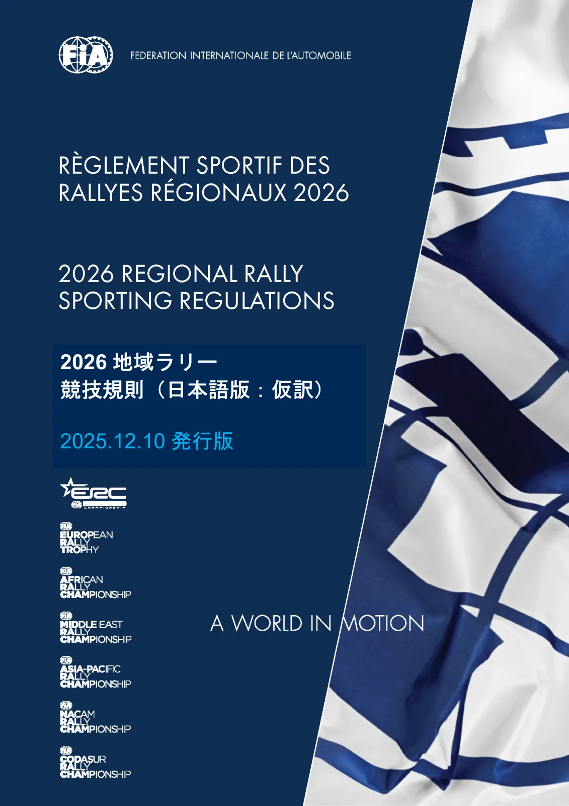
P.22026年FIA地域ラリー競技規則
目次
一般原則
1.一般的条件 .................................................................................................................................. 5 2.定義 ............................................................................................................................................ 6
選手権＆ポイント
3.選手権要件 .................................................................................................................................. 9 4.ドライバーおよびコ・ドライバーの選手権 ............................................................................... 11 5.マニュファクチャラーあるいはチームの選手権........................................................................ 11 6.サポート選手権.......................................................................................................................... 11 7.ジュニア選手権.......................................................................................................................... 11 8.選手権における同ポイント ........................................................................................................ 11 9.プライオリティドライバーの基準 ............................................................................................ 12 10.ラリー競技の特性 ..................................................................................................................... 12
オフィシャル
11.オフィシャルとデリゲート ....................................................................................................... 13
参加資格のある車両
12. FIA 地域選手権ラリー競技会に参加資格のある車両 ................................................................ 15タイヤおよびホイール13.一般規定 ................................................................................................................................... 16 14.タイヤ供給 ................................................................................................................................ 20 15.タイヤ数量 ................................................................................................................................ 20
メカニカルコンポーネント
16.メカニカルコンポーネント ....................................................................................................... 20 17.メカニカルコンポーネント － 製造者およびWRC チーム ..................................................... 21 18.追加の車両要件......................................................................................................................... 22
標準書類およびFIA査証（VISA）
19. FIA 標準書類 ............................................................................................................................. 23 20. FIA 査証の発行 ......................................................................................................................... 24
P.3保険
21.保険適用 ................................................................................................................................... 24
エントリー
22.エントリー手続き ..................................................................................................................... 25 23.エントリー締切日 ..................................................................................................................... 25 24.エントリーフィー ..................................................................................................................... 26 25.クラス ....................................................................................................................................... 26
車両の識別
26.シーズン割り当て番号 .............................................................................................................. 26 27.競技番号（ゼッケン） .............................................................................................................. 26 28.ドライバーおよびコ・ドライバーの氏名 ................................................................................. 28 29.広告 .......................................................................................................................................... 29
参加確認と車両検査
30.参加確認 ................................................................................................................................... 30 31.ラリーの競技要素の開始前の車両検査 ..................................................................................... 30 32.ラリー競技期間中の検査 .......................................................................................................... 31 33.最終検査 ................................................................................................................................... 32
ドライバーの行為
34.行動 .......................................................................................................................................... 32
レッキ
35.レッキ ....................................................................................................................................... 34
シェイクダウン／フリープラクティス／予選
36.シェイクダウン要件 ................................................................................................................. 36 37.フリープラクティス／予選 ....................................................................................................... 37
スタートおよび再出走
38.プロモーション活動 ................................................................................................................. 39 39.セレモニアルスタート .............................................................................................................. 39 40.ラリーのスタート ..................................................................................................................... 39
P.441.スタート順と間隔 ..................................................................................................................... 40
コントロール
42.コントロール － 一般要件 ....................................................................................................... 40 43.パッセージコントロール .......................................................................................................... 42 44.タイムコントロール ................................................................................................................. 42 45.認められる最大遅延時間 .......................................................................................................... 44 46.リグループコントロール .......................................................................................................... 45
スペシャルステージ
47.一般規定 ................................................................................................................................... 45 48.スペシャルステージのスタート................................................................................................ 46 49.スペシャルステージのフィニッシュ ........................................................................................ 47 50.パワーステージ......................................................................................................................... 48 51.スーパースペシャルステージ ................................................................................................... 49 52.スペシャルステージの中断 － 妨害 ........................................................................................ 49 53.競技参加者の安全 ..................................................................................................................... 49 54.リタイア後の再出走 ................................................................................................................. 54 55.再出走前の修理......................................................................................................................... 55サービス56.サービス － 一般条件 .............................................................................................................. 55 57.サービスパーク......................................................................................................................... 56 58.サービスパークでのタンク内の除去および／あるいは補充 ..................................................... 57 59.フレキシサービス ..................................................................................................................... 58 60.リモートサービスエリア（RSA) .............................................................................................. 58
燃料 － 給油
61.リフューエルおよびその手順 ................................................................................................... 60 62.燃料の使用 ................................................................................................................................ 62パルクフェルメ63.パルクフェルメ規定 ................................................................................................................. 62競技結果およびラリー競技後の事務的要件64.ラリーの競技結果 ..................................................................................................................... 63 65.抗議および控訴......................................................................................................................... 64 66.ラリー表彰式 ............................................................................................................................ 65
P.567. FIA 年間表彰式 ......................................................................................................................... 65
テスト
68.テスト ....................................................................................................................................... 66 V1A － FIA ヨーロッパラリー選手権 ................................................................................................. 67 V1B － FIA ヨーロッパラリートロフィー ......................................................................................... 80 V2 － FIA アフリカラリー選手権 ....................................................................................................... 84 V3 － FIA 中東ラリー選手権 .............................................................................................................. 90 V4 － FIA アジア・パシフィックラリー選手権 ................................................................................. 95 V5 － FIA NACAM（中米）ラリー選手権 ........................................................................................ 100 V6 － FIA Codasur（南米）ラリー選手権 ....................................................................................... 105
付則 – 索引
索引 ..................................................................................................................... 114 付則Iコントロールサイン .................................................................................... 115 付則II標準書類 ...................................................................................................... 118 付則III安全 .............................................................................................................. 145 付則IV表彰式 .......................................................................................................... 146 付則Vタイヤの公認 ............................................................................................... 149 付則IX組織上の要件に関する詳述 .......................................................................... 152 付則XIV ドライバーの宣言および誓約 ...................................................................... 158
P.62026年 FIA地域ラリー競技規則
2026 FIA WORLD RALLY CHAMPIONSHIP SPORTING REGULATIONS
本規則において、人に言及する用語（彼・彼女）は、性別に関係なく適用される。
一般原則1.一般的条件FIAはラリー選手権を組織し、そのすべての権利を有する。「選手権」という用語は、常にFIAラリー選手権、FIAラリーチャレンジ、FIAラリートロフィーおよびFIAラリーカップが含まれる。すべてのFIA選手権はFIA国際モータースポーツ競技規則およびその付則（以下「国際競技規則」）、さらに１つまたは複数の各選手権／カップ／トロフィーに適用される条項から成る「本規則」の下に運営される。各選手権ラリーの年間カレンダーは、FIAから発行される。1.1適用
1.1.1選手権に参加するすべてのドライバー、競技参加者およびオフィシャルは、自身ならびその雇用者および代理人を代表し、国際競技規則、適用される技術規則、現行の競技規則および各ラリーの競技特別規則書ならびに、それらの補足あるいは改正された、すべての規則を遵守することを約束する。現行の競技規則の目的で、選手権プロモーター、タイヤメーカー、燃料サプライヤーあるいは競技車両に関連するすべてのサプライヤーは、国際競技規則第１条３に従いラリーの参加者とみなされ、従って参加者に課される義務を負い、競技権能者の決定に従わなければならない。1.1.2本規則の特別措置を認めることができるのは、FIAのみである。1.1.3選手権に適用される規則の特別措置申請は、FIAラリー部門がその目的のために用意する書式にて提出しなければならない。この特別措置申請なしで本規則を変更している競技特別規則書のいかなる条文も無効である。1.1.4競技長は、ラリー開催前、および開催期間中における本規則およびラリー競技特別規則書の適用に責任を負う。競技長は、本規則およびラリー競技特別規則書の適用を必要とする重要な案件すべてを競技審査委員会に報告しなければならない。本規則で明確に定められている場合、およびその他競技長が適切と判断する場合には、当該競技者にもその旨を書面で通知するものとする。1.1.5本規則により明確に許可されていないことはすべて禁止される。1.1.6本規則への違反はすべて競技審査委員会に報告され、国際競技規則に定める通りのペナルティが科せられる場合がある。規則に規定されていない事案は、競技審査委員会によって審議され、当該審査委員会のみが国際競技規則に定める
P.7通りの決定を行う権限を有する。1.1.7本選手権イベントに参加するすべての競技者は、ドライバーおよびコ・ドライバーが添付の付則XIVにあるドライバーの宣誓および誓約書に確実に署名しなければならない。1.2公用言語様々な書類、また特に競技特別規則書およびブルテン（公式通知）の発行はすべて、少なくとも英語で作成しなければならない。競技開催国の言語で記された書類についてはオーガナイザーの裁量および責任において行うものとする。1.3解釈本規則の解釈について疑義が生じた場合、FIAのみが決定する権限を有する。競技会期間中は、競技審査委員会が如何なる疑義についても決定を行う。1.4実施日本規則は2025年1月1日より施行される。2.定義ラリー競技の開始（Beginning of the rally）：ラリーは、参加確認あるいはレッキ（いずれか早い方）で開始する。ラリーの競技要素は、TC0より開始する。ブリーフィング（Briefing）：ブリーフィングとは、競技長およびオーガナイザーが、競技参加者に対して情報を提供し、特定の事項について明確にし、安全規定を再確認し、ならびに競技参加者からの質問に回答するために実施する、対面またはオンラインによるミーティングをいう。アイテナリー、計時または規則に何らかの影響を及ぼす、いかなる情報が通達された場合、ブルテンにより確認されなければならない。ブルテン（Bulletin）：付則IIに詳記されているラリーの競技特別規則書を明確化あるいは補足するための公式文書。ブルテンは地域ラリー競技規則の変更あるいは修正はできない。変更あるいは修正はFIAにより特別措置を許可された場合のみできる。コミュニケーション（Communication）：競技長あるいは競技審査委員会のいずれかにより発行される、情報提供を目的とする公式文書。コントロールゾーン（Control Zones）：始点の黄色地の警告標識からベージュ色に３本の横断線の入った終点標識までの区間がコントロールゾーンとみなされる。クルー（Crew）：クルーは、各車両に搭乗するドライバーとコ・ドライバーとして登録された２名
P.8で構成される。別に定めがない場合、いずれのクルーもラリーにて運転することができ、両名とも、参加するラリー競技会に有効な、その年のFIA国際競技運転者ライセンスとラリーに有効な運転免許証を所持していなければならない。エントリー申請に競技参加者名の記名がない場合、ドライバーが競技参加者を兼務するとみなされるが、この場合はそれに対応した2種類のライセンスを所持していなければならない。自国以外で競技に参加するクルーは、必要に応じ、事故後の帰国費用を担保する国際保険に加入していなければならない。決定（Decision）：競技審査委員会が、審理、聴聞あるいは調査を行った結果を発表する文書。FIA：本規定内のFIAとは、すべてFIAロード競技部門（Road Sport Department）を指す。ラリー競技の終了（End of the rally）：ラリー競技は、最終順位認定の公示をもって終了する。ラリーの競技要素は、最終タイムコントロールで終了する。レグ（Leg）：オーバーナイトリグループ（パルクフェルメ）により分けられるラリーの各競技要素。レグ１の前夜にスーパースペシャルステージが行われる場合、それはレグ１のセクション１と見なされる。メディアゾーン（Media Zone）：サービスパーク、リモートサービスあるいはリグループパークの入口のタイムコントロール手前で、メディアのために設定されたゾーン。ニュートラリゼーション（Neutralisation）：理由を問わずオーガナイザーよりクルーが命ぜられて停止した時間のことを指し、この間はパルクフェルメ規則が適用される。通告（Notification）：必要な場合に、本規則および／またはラリー競技特別規則書の適用を参加者に伝えるため競技長が作成し発行する公式文書。パルクフェルメ（Parc Fermé）：本規則、あるいはラリー競技特別規則書により明確に許されている場合を除き、車両への一切の作業、検査、調整あるいは修理が禁止され、許可を受けたオフィシャルだけが立ち入りを認められるエリア。禁止されるサービス（Prohibited Service）：競技車両に搭載されている物以外の、製造物（オーガナイザーにより供給される場合を除く固体あるいは液体）、スペアパーツ、工具あるいは器具をクルーが使用あるいは受領すること。または本規則で定義されているチーム員が居ることも、この禁止事項に含まれる。レッキ（Reconnaissance）：
P.9アイテナリー発表後、当該ラリーに参加を予定している、いかなるクルーメンバーまたはチームメンバーが、いかなる方法による場合であってもスペシャルステージに立ち入ることをいう。レッキタイムテーブル（Reconnaissance timetable）：競技特別規則書に明記される、クルーがラリールートの習熟を行うことができる時間を定めたタイムテーブル。リグループ（Regroup）：オーガナイザーによりパルクフェルメ規定が適用され、入口と出口にタイムコントロールを配置したスケジュールに組み込まれた停止で、次の予定を可能とするため、および／あるいはラリー競技に残っている車両を再編成することを目的とする。停止時間はクルーによって異なる場合がある。ロードセクション（Road Section）：アイテナリーの一部で、スペシャルステージには使用されない部分。ラリーのセクション（Section of the rally）：リグループによって分けられるラリーの各部分。サービス（Service）：本規則にて制限されている場合を除く競技車両への一切の作業。スペシャルステージ（Special Stage）：ラリーのため公共の通行を閉鎖した道路でタイム計測を行う。スーパースペシャルステージ（Super Special Stage）：本規則で定められ、ラリー競技特別規則書に詳細のあるスペシャルステージのバリエーションでアイテナリーに明記される。チーム（Team）： 1つのチームは、競技参加者、クルーおよびサポート員で構成される。タイムカード（Time Card）：アイテナリーで定められた各コントロールポイントで記録された時刻を記入するためのカード。テクニカルゾーン（Technical Zone）：車検員による技術検査を実施する目的で設けられた、2箇所のタイムコントロールの間に設置されたゾーン。特認（Waiver）：本規則の一部を意図的に放棄あるいは変更する行為。FIAは特殊でやむを得ない場合に限り、個別の状況に対してのみ特認を与えることができる。特認は本規則の一般的な意味を変更することはできない。イエローカード（Yellow Card）：
P.10ラリーで深刻な安全面の欠如が見られた場合、クローズドロード・コミッションからの提案に基づいて、ラリー・コミッションは競技会オーガナイザー／ASNへイエローカードを発行することがある。ラリー・コミッションはイエローカードが与えられたイベントを翌年の開催カレンダーに含めないことを決定する場合がある。ブルーカード（Blue Card）：本規則の順守および保証された公約事項（アイテナリー、組織的構造など）に深刻な欠如が見られた場合、ラリー・コミッションは、その様な違反を犯した競技会オーガナイザー／ASNへブルーカードを発行することがある。当該競技会を翌年のカレンダーに登録するためには、オーガナイザー／ASNはラリー・コミッションが決定したアクションリストを受け入れ実施しなければならない。選手権＆ポイント3.選手権要件3.1選手権ポイントの付与
3.1.1 それぞれの選手権タイトルについて、各ラリーにおける最終順位に基づいて、以下の表に従ってポイントが与えられる。
| 1 位 | 30 ポイント |
| 2 位 | 24 ポイント |
| 3 位 | 21 ポイント |
| 4 位 | 19 ポイント |
| 5 位 | 17 ポイント |
| 6 位 | 15 ポイント |
| 7 位 | 13 ポイント |
| 8 位 | 11 ポイント |
| 9 位 | 9 ポイント |
| 10 位 | 7 ポイント |
| 11 位 | 5 ポイント |
| 12 位 | 4 ポイント |
| 13 位 | 3 ポイント |
| 14 位 | 2 ポイント |
| 15 位 | 1 ポイント |
1 位30 ポイント2 位24 ポイント3 位21 ポイント4 位19 ポイント5 位17 ポイント6 位15 ポイント7 位13 ポイント8 位11 ポイント9 位9 ポイント10 位7 ポイント11 位5 ポイント12 位4 ポイント13 位3 ポイント14 位2 ポイント15 位1 ポイント3.1.2ポイントの減算選手権、トロフィーまたはカップ対象のラリー競技会の１つが、予定された全体を走破できなかった場合、ポイントは成立された順位認定で与えられる。選手権規則に定められた最低スペシャルステージ距離を基準として、完了したスペシャルステージの割合を算出するものとする。－ 最低スペシャルステージ距離の75％以上走行の場合、全ポイント点数、－ 最低スペシャルステージ距離の50％以上75％未満走行の場合、半分のポイン
P.11ト点数、－ 最低スペシャルステージ距離の25％以上50％未満走行の場合は、3分の1のポイント点数、－ 最低スペシャルステージ距離の25％未満走行の場合、ポイントは与えられない。3.1.3 選手権規則にて定められている場合、第50条4項により「パワーステージ」順位に応じて以下の表に従って追加ポイントが付与される。
| 1 位 | 5 ポイント |
| 2 位 | 4 ポイント |
| 3 位 | 3 ポイント |
| 4 位 | 2 ポイント |
| 5 位 | 1 ポイント |
1 位5 ポイント2 位4 ポイント3 位3 ポイント4 位2 ポイント5 位1 ポイント3.1.4 選手権ドライバー部門でポイントを獲得するためには、エントリーフォームでドライバーとして指名された本人が、スペシャルステージで車両を運転しなければならない。ただし競技中に発生した不可抗力によるもので、競技審査委員会に報告され、認められた場合はこの限りではない3.1.5 選手権のラリーが世界ラリー選手権の競技中で開催される場合、WRC競技規則が優先される。第3.1.1条に基づく選手権ポイントの付与は、係数1.5が適用される。3.1.6 小数点以下の数字は四捨五入される。3.2最終選手権順位認定に考慮される競技リザルト数
3.2.1順位認定はそれぞれの選手権に求められる基準に基づいて決定される。ドライバーおよびコ・ドライバーについて、総合ポイントが最も多い者を当該選手権チャンピオン／優勝者とする。3.2.2それぞれの選手権に求められる基準に関わらず、実際に開催された選手権が4競技会以下の場合、すべてのリザルトが最終的な順位認定に考慮される。3.2.3 単一イベントで特別に予定されている選手権を除いて、タイトルは次のように授与される： － 当初のカレンダーに予定されている競技会のうち、少なくとも50%以上の競技会が実際に開催され、最少３つの競技会が行われていること－ ポイントが最も多い競技参加者が50％以上の競技会に参加していること、ま
たは選手権タイトルの資格を得るために必要な競技会の50％に参加していること3.2.4 競技参加者が競技会全体で失格となった場合、このラリーは必ずチャンピオンシップの最終合計スコアを決定する１戦としてカウントされる。
P.124.ドライバーおよびコ・ドライバーの選手権関連する選手権規則（該当する場合）を参照。5.マニュファクチャラーあるいはチームの選手権関連する選手権規則（該当する場合）を参照。6.サポート選手権関連する選手権規則（該当する場合）を参照。7.ジュニア選手権関連する選手権規則（該当する場合）を参照。8.選手権における同ポイント8.1ドライバーおよびコ・ドライバー選手権において最終および／あるいは暫定順位認定を決定するため、まったくの同ポイントを獲得したドライバーおよびコ・ドライバーの順位を決めるルールは： 8.1.1ポイント合計を構成するラリーのみをカウントし、各選手権の最終順位で獲得した1位をとった回数、次に2位をとった回数、その次に3位をとった回数などの順位の数が多い順とする； 8.1.2当該ドライバーおよび／あるいはコ・ドライバーの全員が参加したラリーのみをカウントし、各選手権の最終順位で獲得した最高順位が多い順とする。12位を何度とるよりも11位1回が上位で、13位を何度とるよりも12位1回が上位となる、など。8.1.3それでも同点の場合は、上位は選手権の最終戦で最も多くのポイントを獲得したドライバーおよび／またはコ・ドライバーとなる。もし同点のドライバー／コ・ドライバーの順位認定がない場合、最終戦の１つ前の競技会で考慮され、以下同様に続く。8.2マニュファクチャラーあるいはチーム（適用される場合）まったくの同ポイントを獲得した登録マニュファクチャラーまたは登録チームで順位を決めるルールは： 8.2.1各マニュファクチャラーまたはチームについてポイント対象競技会で獲得した最高順位の数が多い順とする。その場合、各マニュファクチャラーまたはチームについて、１ラリーにつき最高順位のみをカウントする。8.2.2 9位の回数、10位の回数などで決定する。10位を何度とるよりも9位1回が上位となる、など。
P.138.2.3それでも同点の場合は、FIA自身が上位を決定し、いかなるその他の同ポイントのマニュファクチャラーまたはチームについて、FIAが適切と考えるその他いかなる考慮事項に基づいて決定する。9.プライオリティドライバーの基準9.1 FIAプライオリティドライバー－ 直近3年間のうちの1年において、FIA世界ラリー選手権でP1であったドライバー。－ 直近3年間以内に、WRC2選手権、あるいはWRC3選手権で優勝したドライバー。－ 直近3年間以内に、FIA地域ラリー選手権で優勝したドライバー。－ 前年のFIAヨーロッパラリートロフィーで優勝したドライバー。9.2プライオリティドライバーの出走順の変更FIAプライオリティドライバーが、競技スタート時の優先権に値しない車両でエントリーしていると競技審査委員会が判断した場合、競技審査委員会は当該プライオリティドライバーの当初の出走順を変更することができる。10.ラリー競技の特性10.1ラリーの構成
10.1.1ラリー全体を通して、すべてのスペシャルステージの路面のタイプは同じに保たれなければならない。ただし、グラベルステージに限定的にアスファルト路面がある場合やその逆のケースについて、当該箇所がスペシャルステージの長さの10％を超える場合、FIAに特認申請をしなければならない。スーパースペシャルステージは異なる路面であってもよい。10.1.2選手権によってラリー期間の長さは異なってもよい。適切な長さについては当該選手権のバリエーションおよび追加規定にて詳細に記される。各スペシャルステージの最短あるいは最長距離の制約はない。しかしながら、理想的には、サービスパークあるいはリモートサービスゾーンの間のスペシャルステージ距離は、80km以下にしなければならない。10.1.3スーパースペシャルステージを除き、１つのステージを２回を超え完全に走行させてはならない。部分的に２回を超え走行させる場合、FIAからの承認を得なければならない。10.2ラリーのプログラム以下の基準を遵守すること以外に、オーガナイザーは独自のラリー特性を発展させることが奨励され、独自のラリープログラム／アイテナリーを考案することができる。10.2.1ラリー競技会のタイムテーブルは次の順番とすること：
P.14－レッキ－参加確認（これはレッキの開始前にも行うことができる）－車検－フリープラクティス／クオリファイステージ（行われる場合）－シェイクダウン（行われる場合）－セレモニアルスタート（行われる場合）－ラリー－表彰式10.2.2ラリー競技会は、セクションのスタートあるいはセクションのフィニッシュを含めて、2日あるいは3日間にわたって行うことができる。10.2.3ラリーのフィニッシュは土曜日か日曜日でなければならないが、日曜日であることがより好ましい。10.2.4表彰式は、最初の競技車両が最終サービスに到着してから1時間以内に実施すること。10.2.5レッキは2日間に渡って行うようスケジュールすること。しかしながら、オーガナイザーは理由を添えてFIAにこれを変更する申請を提出することができる。10.3公式アイテナリーおよび競技プログラムの遵守
10.3.1不可抗力の場合を除き、競技長はアイテナリーが遵守されることを確実にしなければならない。10.3.2ラリー競技会直前あるいはその間に出される異議は、セーフティオフィサー長が承認しない限り、考慮されない。10.4環境認証 関連する選手権規則に特に定めがない限り、すべてのＦＩＡ地域ラリー選手権の競技会オーガナイザーは、FIA環境認証プログラムに従わなければならない。１つ星レベルの認定は必須とし、2027年からは２つ星レベルが必須となる。2029年からは３つ星レベルが義務化となる。オフィシャル11.オフィシャルとデリゲート11.1競技審査委員会競技審査委員会は、常に3名の委員で構成しなければならない。委員長と1名の委員はFIAが任命し、ラリーの開催国以外の国籍を持つ者とする。3人目の委員は、ラリー競技開催国のASNによって任命すること。競技審査委員会と競技長の間には恒久的な通信リンクが確立されていなければならない。ラリー競技中は、競技審査委員会の少なくとも1名が、ラリーHQの近くに居なければならない。
P.1511.2 FIAデリゲートFIAは、以下のデリゲートを任命することができ、その各々がラリーにおける各自の責任範囲をカバーする報告書を作成する： 11.2.1 FIAスポーティングデリゲートFIAスポーティングデリゲートは競技長、その他すべてのFIA任命のオフィシャルおよびデリゲートと連絡を取り合う。FIAスポーティングデリゲートはFIAオブザーバーとしての役割も兼ねる場合がある。11.2.2 FIAテクニカルデリゲートFIAテクニカルデリゲートは、競技長と連絡を取り合い、すべての技術的事項を担当する車検員長となる。11.2.3 FIAセーフティデリゲートFIAセーフティデリゲートは特に公衆およびメディアの安全を監視する責務を負う。スペシャルステージの安全面に不十分な点があると判断した場合には、最大で30分スタートを遅延させる権限を有する。この時間内に安全な状態にならない場合、または提出された最終セーフティドシエに従ってスペシャルステージが運営されていないと判明した場合（附則IX - 第19条6項2条参照）、それがFIAセーフティデリゲート（任命された者がいる場合）またはFIAオブザーバーの意見により重大な危険を引き起こす場合、FIAセーフティデリゲートは、競技長に対しステージをキャンセルするよう要請する。競技長がFIAセーフティデリゲート（任命された者がいる場合）またはFIAオブザーバーからのこのスペシャルステージのキャンセル要請に従わない場合、FIAセーフティデリゲート（任命された者がいる場合）またはFIAオブザーバーは、その件を競技審査委員会に報告することができる。セーフティデリゲート（任命された者がいる場合）、またはFIAオブザーバーは、イベントにイエローカードが発行される可能性のある重大な安全上の懸念をクローズドロード（Closed Road）コミッションに報告する権限を有する。11.2.4 FIAメディアデリゲートFIAメディアデリゲートは、ラリー競技前後のFIA記者会見を含め、すべてのメディア関連事項を担当する。11.2.5 FIAメディカルデリゲートFIAメディカルデリゲートは、ラリー競技前のブリーフィングすべてを含め、すべての医療面に関し、（ラリーの）医師団長と連携する。11.2.6 FIAオブザーバー（含複数）FIAオブザーバー（含複数）は、ラリーのすべての側面を評価し、所定のFIA報告書を作成する。11.3コンペティターズリレーションオフィサーコンペティターズリレーションズオフィサー（CRO）の主な任務は、競技参加者／クルーに対し、本規則およびラリーの運営に関連する情報あるいは解説を提供することである。各ラリーに少なくとも1名のCROがいなければならず、競技参
P.16加者／クルーが容易に識別できなければならない。参加資格のある車両12. FIA地域選手権ラリー競技会に参加資格のある車両12.1車両のクラス
| クラス | グループ | |||||||
| RC2 | グループRally2 | 2026年付則J項第261条に合致するグ ループRally2車両。 | ||||||
| グループRally2 Kit（VR4K） | R4 Kit搭載の2026年付則J項第260Eに 合致する車両 | |||||||
| 2000ccを超えるグループNR4 | 2019年付則J項第254条に合致するグ ループN車両 | |||||||
| RGT | RGT車両 | 2019年付則J項第256条に合致するグ | ||||||
| ループRGT車両 | ||||||||
| 2026年付則J項第256条に合致するグ | ||||||||
| ループRGT車両 | ||||||||
| RC3 | Rally3（1390ccを超え2000ccまでの自 然吸気‐927ccを超え1620ccまでのタ ーボ） | 2021年1月1日から公認、および2026年 付則J項第260条に合致するグループ Rally3車両。 | ||||||
| RC4 | Rally4（1390ccを超え2000ccまでの自 然吸気、および927ccを超え1333ccまで のターボ） | - 2019年1月1日から公認、および2026 | ||||||
| 年付則J項第260条に合致するグルー | ||||||||
| プRally4車両 | ||||||||
| - 2018年12月31日以前に公認、および | ||||||||
| 2018年付則J項第260条に合致するグ | ||||||||
| ループR2車両 | ||||||||
| R3（1600ccを超え2000ccまでの自然吸 | 2019年12月31日以前に公認、および | |||||||
| 気‐1067ccを超え1333ccまでのター | 2019年付則J項第260条に合致するグ | |||||||
| ボ） | ループR車両 | |||||||
| R3（1620ccまでのターボ／公称） | R3（1620ccまでのターボ／公称） | 2019年12月31日以前に公認、および 2019年付則J項第260D条に合致する グループR車両 | 2019年12月31日以前に公認、および | |||||
| 2019年付則J項第260D条に合致する | ||||||||
| グループR車両 | ||||||||
| RC5 | Rally5（1600ccまでの自然吸気および 1333ccまでのターボ） | 2019年1月1日から公認、および2026年 付則J項第260条に合致するグループ Rally5車両 | ||||||
| Rally5-Kit（1600ccまでの自然吸気およ びターボ） | 2024年1月1日から公認、および2026年 付則J項第260条Bに合致するグループ Rally5-Kit車両 | |||||||
| Rally5（1600ccまでの自然吸気および 1067ccまでのターボ） | 2018年12月31日以前に公認、および 2018年付則J項第260条に合致するグ ループRally1車両 | |||||||
| RC6 | Rally6（1620ccまでのターボ／2000cc | 2026年1月1日から公認されたグルー | ||||||
| までの自然吸気） | プRally6車両（現在、規定策定中） | |||||||
| NAT | ASNにより公認され、2026年付則J項第253条に合致し、国内／リージョナルの 車両認証フォーム（acceptance form）が提出されてFIAに承認された車両 |
NAT ASNにより公認され、2026年付則J項第253条に合致し、国内／リージョナルの車両認証フォーム（acceptance form）が提出されてFIAに承認された車両12.2追加事項
P.17－ 2026年付則J項第261条に合致するRally2車両でエントリーするドライバーはジョーカーが適用された後に古いパーツを使用することができる。（信頼性および安全性ジョーカーを除く）－ Rally2、RGT車両については、FIAテクニカルパスポートが義務付けられる（FIAラリーカップまたはラリートロフィーへの参加車両については任意とする）。－ 2019年付則J項第256条に合致するRGTカーは、有効なFIA RGTテクニカルパ
スポートを有していなければならない。12.3国内／リージョナル車両以下は、該当する選手権規則がASN公認車両の参加を認め、選手権ラリーのエントリーリストおよび順位認定に含める場合に適用される： 12.3.1 国内／リージョナル車両は、第12条1項で定めるFIAクラスには出場できない。それらは「NAT」クラスにグループ化されるか、開催国ASNの国内クラスとされる。12.3.2 これらの車両は： 競技参加者がイベントのエントリー締切の2週間前までに国内／リージョナルの車両承認申請書を提出した後、FIAの承認を受けなければならない。付則J項第253条に定める安全要件を満たさなければならない。ただし、パワーウェイトレシオが少なくとも6kg/hpである2輪駆動車両については、付則J第260B条の安全要件（オプションNo.2：オリジナルで装着されている非金属製燃料タンクのみ）に適合することも認められる。第260B条に記載され、およびオプションNo.2に適用されるすべての規定は義務付けられる（安全フォーム、燃料配管、燃料タンクの保護、フィラーネック部の保護）。FIAによるこれら車両の承認は、FIA公認車両と同様のパワーウェイトレシオを維持するために、重量および／またはエアリストリクター直径の調整を条件とする場合がある。承認申請書に記載されているすべての特記事項は、イベント中に尊重されなければならない。考慮される車両重量は、クルーおよびその装備品を除き、ならびにスペアホイールは最大1本までを含むものとする。12.3.3 関連する選手権規則で特に定めがない限り、第12条3項2に準拠していない国内／リージョナル車両は、選手権ラリー中またはその後も、エントリーリスト、順位（公式または非公式）、およびスペシャルステージのリザルトにおいて統合して表示してはならない。それぞれ異なる特別規則書およびエントリーフォームを持つ、2つの別の競技となる。国内競技はFIA選手権ラリーの後に走行すること。タイヤおよびホイール13.一般規定13.1すべてのタイプの車両およびすべての競技参加者向け
P.1813.1.1 規則の遵守すべてのタイヤは、本規則に合致していなければならず、付則Ⅴと合わせて読まなければならない。13.1.2 モールド（成形）タイヤすべての車両はモールドタイヤを装着していなければならない。ハンドカットあるいは既定のトレッドパターンの変更は、地域選手権の競技規則で別途認められる場合を除き、禁止される。13.1.3 タイヤの処理タイヤに対する化学処理および／あるいは機械的処理はすべて禁止される。いかなる時も、タイヤおよび／またはホイールを35℃を超えて加熱する装置はすべて禁止される。また、ホイールに取り付けられているか否かに関わらず、35℃未満に人工的にタイヤの加熱環境に保管することは認められる。13.1.4 タイヤのバーコード番号タイヤはそれぞれ、以下のいずれかを有していなければならない： － FIA認定バーコードサプライヤーから供給された、2つの同一の成型バーコード番号（タイヤの側面に1つずつ／各バーコードはFIAにより定められた異なる色とされる）。または－ FIA承認バーコードサプライヤーから供給された、1つの同一の成型バーコード番号。これらのバーコードは、タイヤ交換の間で、ある特定の車両に同一のタイヤが取り付けられていること、および競技参加者が許可される最大量を守っていることをチェックするために使用される。タイヤのバーコードは車両の外側から常に見えていなければならない。13.1.5 タイヤの完全な性能を維持するための装置タイヤの完全な性能を維持する目的で、タイヤの内圧を大気圧と同じかそれ以下にする装置すべての使用は禁止される。タイヤの内部（ホイールとタイヤ内面との間の空間）は、空気のみで満たされなければならない。その空気は地球の大気から集められた自然発生の標準的な空気でなければならず、その組成内容の変更はできない。コンプレッサーへの乾燥ユニットの使用は、含水率を減らすことを目的にのみ許される。人工的に精製されたボトルガスの使用は、公式アイテナリーの中で、かつサービスパーク外で、車載されたキャニスターを使ってクルーが空気圧を調整することのみを目的とし、セクションごとに最大250グラム（キャニスター内容物の総重量）を上限とし使用する場合を除き、禁止される。13.1.6 ホイールタイヤをホイールに挟んで締め付けるように設計された装置はすべて認められない。13.1.7 タイヤの取り付けタイヤをホイールに組み付ける際の最大圧は、20℃で8気圧とする。この圧力にてホイール外側の壁面にタイヤを組み付けができなければならない。
P.1913.1.8 ターマックタイヤ（ドライおよびウエット）ラリー中は常に、車両に取り付けられたターマックタイヤの溝の深さは、トレッドパターンの少なくとも4分の3に渡って1.6mm未満となってはならない。タイヤメーカーは目視できるコントロールマークを提供しなければならない。ターマックタイヤは付則Ⅴに合致し、さらにFIAの公認を受けていなければならない。重要：2013年5月1日より前に公認されたタイヤの使用は認められない。トレッドパターンが付則Ⅴに従っている限り、ドライバーは以前に公認された仕様のタイヤを使用し続けることができる。使用が認められているアスファルトタイヤリストは、FIAウェブサイトを参照のこと。13.1.9 雪用のターマックタイヤラリーにおいてスパイクタイヤの使用を認める場合は、スパイクピンやその検査方法について競技特別規則書に記載しなければならない。13.1.10 グラベルタイヤ該当する選手権規則を参照のこと（適用される場合）。13.1.11 雪用のスタッド付きグラベルタイヤラリーにおいてスパイクタイヤの使用を認める場合は、スパイクピンやその検査方法について競技特別規則書に記載しなければならない。13.1.12 使用するタイヤのタイプタイヤのメーカーは自由とする。13.2ワールドラリーカーでエントリーするすべての競技参加者ＷＲＣについてのみ適用される。13.3 Rally2、Rally2 KitまたはRGT車両でエントリーするすべての競技参加者関連する選手権規則を参照のこと（適用される場合）。13.4ノンプライオリティドライバー関連する選手権規則を参照のこと（適用される場合）。13.5 2ＷＤ車両でエントリーするドライバー関連する選手権規則を参照のこと（適用される場合）。13.6 ＲＧＴ車両でエントリーするドライバー関連する選手権規則を参照のこと（適用される場合）。13.7コントロールラリー競技中いかなる時も、タイヤの適合性を確認するために検査が行われる場合がある。適合していないタイヤには専用のスタンプでマークされ、使用してはならない。13.8タイヤマーキング／コントロールゾーン
P.20指定サービスパークあるいはリモートサービスゾーンの出口、およびシェイクダウンのスタート地点の前において、ホイール・タイヤマーキング／バーコード読み取りゾーンを設置することができる。タイヤのマーキング手順を支援する目的に限り、各クルーに対して1名のチーム員がこのゾーンに立ち入ることができる。クルーは車両を停止させ、検査員あるいは／およびマーシャルの指示を待たなければならない。検査員あるいはマーシャルが不在である場合、クルーは停止することなくそのゾーンから出ることができる。タイヤマークの検査ゾーンが、指定サービスパークおよびリモートサービスエリアの入り口に設置することができる。13.9ロードセクションスペシャルステージが含まれない場合は、未登録のパターンのタイヤをロードセクションで使用することができる。13.10タイヤ空気圧の調整以下の場合、タイヤ空気圧の調整が許される： － 競技参加者すべてに対して、スペシャルステージ直前のTCとそのステージのスタートまでの待ち時間が13分を超える場合。－ 競技参加者すべてに対して、スペシャルステージあるいはスーパースペシャルステージの前の10分を超えるリグループ内にて。13.11タイヤの空気圧および温度センサー走行中のタイヤの内部空気圧と温度を測定するためのセンサーの使用は許可されており、強く推奨されている。 これらのセンサーを使用する場合は、クルーに故障の可能性を知らせる警告灯を1つ以上装備しなければならない。 タイヤカーカス、タイヤコンパウンド、ホイール温度を測定するセンサーは禁止される。13.12スペアのホイール付きタイヤ該当するグループについて付則J項に規定されている場合は、車両には最大2本のスペアタイヤを搭載できるが、少なくとも1本のスペアは必ず搭載しなければならない。サービス中に車両に取り付けられた、あるいは車両に搭載された組まれた状態のタイヤは、タイヤの積み替えが許可されている次のサービスパークあるいは次のサービスエリアまで運ばなければならない。サービスパークまたはタイヤの積み換えが許されているサービスエリア以外では、組まれた状態のタイヤを車両に搭載したり下ろしたりしてはならない。13.13 スペシャルステージのストップポイントにおけるタイヤサプライヤーFIAの指定するタイヤサプライヤー担当者が、スペシャルステージのストップポイントに立ち入ることが認められる。そのポイントにおいて、目視検査と温度測定を行い、自社製品に関するデータを収集することができる。参加資格のあるアスファルトタイヤのリストに記載されているタイヤサプライヤーが、競技参加者または競技参加者の重要な支援者である場合、ストップポイントに立ち入るその担当者は、競技参加者のチームメンバー（国際競技規則第9条15.3項によりリストアップされていなければならない）であってはならない。
P.2113.14タイヤの入手可能性地域ラリー選手権に使用されるすべてのタイヤは、市販され入手に容易なものでなければならない。14.タイヤの供給関連する選手権規則を参照のこと（適用される場合）。15.タイヤの数量関連する選手権規則を参照のこと。メカニカルコンポーネント16.メカニカルコンポーネント16.1エンジン交換16.1.1車検と最初のタイムコントロールとの間で、エンジン故障が発生した場合、エンジン交換が認められるが、競技長により５分間のペナルティが科せられる。16.1.2上記の場合以外、車検合格時点からラリーの終了まで、同一のエンジンブロックおよびボディシェルを使用しれなければならない。16.2ターボチャージャー
16.2.1ターボチャージャーとコンプレッサーは、以下「コンプレッサー」という。16.2.2エアリストリクターおよびマーキングに関する現行規則が引き続き適用される。16.2.3車両に取り付けられるコンプレッサーと、1つのスペアコンプレッサーは、ラリー競技前車検で検査を受け、同じ番号のついた封印が実施される。16.2.4コンプレッサーは、当該車両ゼッケン番号が付けられ、その車両のみに使用されること。16.2.5すべての使用済みコンプレッサーは、ラリー競技前車検からラリーの終了まで、車検員がその適合性を検査できるように、封印されたままでなければならない。16.2.6上記の規則は、コンプレッサーにエアリストリクターの装着がない車両すべてにも義務付けられる。この場合、コンプレッサーへのマーク付けは、それらを数える目的でのみ実施される。
P.2216.2.7 Rally2車両については、公認を受けたFIAブースト制御システム（ポップオフバルブ、FIAテクニカルリストNo.43参照）について、競技前車両検査にて検査され封印を受けなければならない（付則J項第261条による）。封印は、FIAテクニカルデリゲートの承認がない限りは、ラリー終了までそのままの状態を維持しなければならない。16.3トランスミッション16.3.1 FIAプライオリティドライバーの各車両は、各ラリーで、スペアギアボックス１つ、およびスペアディファレンシャル１セット（フロントおよび／またはセンターおよび／あるいはリア）を使用することができる。16.3.2これらのスペア部品および車両に取り付けられている部品は、最初の車検でマーキング／封印される。その他の車両への本規則の適用は、FIAの合意を条件としてオーガナイザーの裁量に任される。16.3.3マーキング／封印は、クラッチおよびその関連の付属品の交換を競技参加者に認めるものである。16.3.4すべての部品は、同じ番号が付けられた封印によって識別される。16.3.5すべてのマーキング／封印は、FIAが車両の各モデルについて公示している詳細にしたがって実施される。16.3.6ギアボックスとディファレンシャルは、車検員がその意図を事前に知らされていることを条件に、いずれのサービスパークでも交換することが認められる。16.3.7車両からおろされたギアボックス／ディファレンシャル（含複数）の封印とマーキングが無傷に保たれていることを条件に、部品を同じ車両に再利用することができる。16.3.8マーキング／封印は、ラリーの競技前車両検査からラリー終了まで、そのままの状態でなければならない。車検員は、いつでもマーキング／封印を確認することができ、ラリー終了時には部品を分解して適合性を確認することができる。16.4手動消火器当該競技車両外で火災が発生した場合、消火活動を支援するために手動消火器のうちの1本提供することができる。この消火器の代わりは可能な限り早急に、次回のサービスまたはパルクフェルメ（第63条5項1参照）にて、置き換えなければならない。17.メカニカルコンポーネント － マニュファクチャラーおよびWRCチームWRCにのみ適用される。
P.2318.追加の車両要件18.1車載カメラ
18.1.1オーガナイザーあるいは選手権プロモーター（存在する場合）により要請された場合、競技車両は車載カメラ、あるいはその他の記録装置を搭載しなければならない。これはオーガナイザーあるいは選手権プロモーターが、付則J項第253条2項に従って取り付け、車検員によって許可される。18.1.2いかなる個人の車載カメラを搭載した車両を使用する競技参加者はすべて、オーガナイザーあるいは選手権プロモーター（存在する場合）の事前の許可を得なければならない。許可されたカメラは、ステッカーによって識別され、車検の時には車両に取り付けられていなければならない。18.1.3いかなる個人のカメラの使用を望む競技参加者は、以下の情報をオーガナイザーあるいは選手権プロモーター（存在する場合）に、レッキ開始の少なくとも１週間前に提供しなければならない：競技参加者名、車両ゼッケン番号、競技参加者住所、映像の使用目的、および使用する装置のブランドとモデルの名称。18.1.4競技参加者の事前の同意があれば、競技長は、マーシャルあるいはラリーオフィシャルの立ち会いを条件に、公式のカメラサプライヤー担当者がオンボードカメラのメンテナンス作業を行うためにオーバーナイトパルクフェルメに立ち入ることを許可することができる。18.1.5ラリー中に当該システムへ干渉した場合はすべて、競技参加者は競技審査委員会に報告される。18.2トラッキング（追跡）システムFIA選手権ラリーでは、すべての車両にラリーのオーガナイザーにより供給される安全トラッキングシステムを取り付けなければならない。トラッキングシステムは、FIAテクニカルリストNo.98：ラリー車両トラッキングシステムのものを使用することが義務付けられる。取り付け状態は車両検査にて検査される。受け取り、返却および取り付けに関する指示は、各オーガナイザーが発行する。ラリー中のシステム障害についてはすべて、競技参加者は競技審査委員会へ報告されることになる。18.3スペシャルステージでの騒音規制安全上の理由で、触媒コンバーターが取り付けられている車両は、排気ガスの出口が付則J項に合致していることを条件に、スペシャルステージ内でのみ、排気サイレンサーのバイパスが推奨される。ロードセクションでは常に、騒音レベルは付則J項に合致していなければならない。
標準書類およびFIAビザ（VISA）
P.2419. FIA標準書類19.1一般規定付則IIに記載されている以下の書類の書式および手順に従わなければならない： － 競技特別規則書（電子版および／または印刷版）－ ブルテン（電子版および／または印刷版）－ ラリーガイド1および／または2（電子版）－ アイテナリー（電子版および／または印刷版）－ ロードブック（電子版および／または印刷版）－ タイムカード（印刷版）－ エントリーフォーム（電子版および／または印刷版）－ エントリーリスト（電子版）－ ラリーのスタートリストおよびリザルト（電子版および／または印刷版）－ メディアセーフティブック（電子版および／または印刷版）、任意競技の暫定結果および最終認定順位とリザルト、ブルテンや裁定のような正式書類は、発行時刻と共にデジタルおよび／または物理的な公式通知掲示板に公示されなければならない。電子的に公開される書類は、一度オーガナイザーのウェブサイトに掲載された後は、すべての競技参加者およびオフィシャルに通知され、かつ修正箇所がマーカーで強調されない限り、修正されてはならない。公開前にFIAの承認が必要な書類はすべて、FIAの承認なしに修正されてはならない。19.2ロードブック／アイテナリーすべてのクルーは、走行が義務付けられるアイテナリーの詳細な記載があるロードブックを受け取る。ラリーの走行が義務付けられるアイテナリーは、道順を示すコマ図、およびコマ図とコマ図の間の指定された道路により、このロードブックに定められている。さらに、スペシャルステージでは、レッキあるいはステージの初回走行で競技参加者が道路を逸脱した可能性があると判断した場所に、オーガナイザーはバリアあるいはその他の障害物を設置することができる。行われたすべての変更は、当該ステージスタート前にすべての競技参加者に通知しなければならない。ロードブックは、PDF形式のみで提供することや、または部分的にPDF形式にて提供することができる。電子ロードブックの使用は、競技特別規則書に明記しなければならず、遅くともエントリーリスト発行時点で公開されなければならない。変更があった場合は、すべて競技審査委員会に報告される。19.3タイムカード
19.3.1各クルーは以下について責任を負う： － 自身のタイムカード－ タイムカードをコントロールで提出すること、およびその記入の正確性－ タイムカードへの記入事項すべて19.3.2「for competitor’s use（競技参加者使用欄）」とされている箇所は除き、タイムカードに記入が許される唯一の者は担当のマーシャルのみである。
P.2519.3.3コントロールのマーキングあるいは署名がない場合、タイムコントロールでの時刻の記入がない場合、各コントロールでタイムカードを提出しなかった場合、例外的な場合においては、競技長は電子的な記録（GPS）、公式書類および／またはその他の入手可能なリソースを使用して調査を行うことができる。結果、タイムカードに未記入箇所があっても、当該クルーがコントロールを正常に通過したことが判明した場合、1分のペナルティが科せられる。さらに該当する場合には、第44条2項10に従ったペナルティが科せられる。それ以外の場合には、当該クルーはそのコントロールにてリタイアしたものとみなされる。この情報は競技長から当該競技参加者へ、次のセクションの終了時に、遅くともオーバーナイトリグループ前のセクションまでに通告される。状況が不明確な場合、競技長は競技審査委員会に本件を報告し、検討を求める。19.3.4クルーのタイムカードに記入された時刻と、ラリーの公式文書に記入された時刻との間に相違がある場合、競技長の調査対象となる。20. FIAビザ（VISA）の発行付則IX－組織上の要件詳細を参照のこと。保険21.保険適用21.1保険適用の説明競技特別規則書には、オーガナイザーが加入した保険の適用についての詳細な説明を記載しなければならない。保険証券には競技参加者、プロモーター（存在する場合）、およびFIAとラリーのオフィシャル、（リスクと保険金額の詳細）を指定すること。保険金額は、USドルあるいはユーロで記載されること。21.2一般賠償責任保険の適用
21.2.1エントリーフィーに含まれていなければならない保険料は、第三者に対する民事責任に適用される適切な保険（一般賠償責任保険）を担保していなければならない。21.2.2一般賠償責任保険は、ラリー競技会に参加する競技参加者あるいはその他の個人または法人がかける個別の保険を侵害することなく、追加して適用されるものでなければならない。21.2.3保険は少なくとも以下の条件で有効でなければならない：・ レッキ用として認められた車両（タイヤや追加装備を含め）が開催地の道路交通法規に完全に合致していない場合は、レッキの開始時から。・ シェイクダウン、フリープラクティスおよび予選ステージ。・ ラリーのアイテナリーを走行する競技参加者については、最初の競技要素の開始からラリー終了、あるいは最終的なリタイア（permanent retirement）あるい
P.26は失格（disqualification）の宣言がなされるまでとする。リタイアした車両が再出走する場合は、最終的リタイアとはみなされない。21.3保険適用の除外サービス車両およびレッキに使用される地域の道路交通法規に完全に合致した車両は、オーガナイザー発行の特別なプレートを掲示しているものであっても、ラリーの保険は適用されない。エントリー22.エントリー手続き22.1エントリーフォームの提出（エントリー申請）ラリーに参加を望むすべてのFIA競技者ライセンス所持者は、競技特別規則書に明記されている締め切り日までに、所定のエントリーフィーと記入完了済みのエントリーフォームを、ラリー競技事務局に送付しなければならない。電子エントリー申請（インターネット）も認められる場合があり、その場合遅くとも参加確認までにエントラントの本人署名によって確認される。エントリーフォームには、有効な競技参加者ライセンスの写しが伴っていなければならない。22.2エントリーフォームの修正競技参加者は、車検の時まで自由に、エントリーフォームで申告した車両を、同じクラスの別の車両と変更することができる。22.3 ASNの許可外国籍の競技参加者、ドライバーおよびコ・ドライバーは、国際競技規則第3.9.4条に従い、海外競技会出場証明書を提示しなければならない。22.4競技参加者および／またはクルーメンバーの変更競技参加者の変更はエントリー締め切りまでは認められる。競技にエントリーした競技参加者のみがこの申請を行うことができる。エントリー締め切り以降は、以下の合意を得てクルー1名を変更することができる： － 参加確認の開始までは、オーガナイザーによって。－ 参加確認の開始後、スタートリスト公示までは競技審査委員会によって。FIAのみが、エントリー締め切り後に、両方のクルーメンバーまたは競技参加者の変更を許可することができる。22.5競技参加者およびクルーメンバーの誓約エントリーフォームに署名をすることにより、競技参加者およびクルーは、国際競技規則およびその付則、本規則およびラリーの競技特別規則書に明記されるスポーツ管轄権に従うことになる。23.エントリー締切日
P.2723.1エントリー締め切り日の遵守各ラリーのエントリー締め切り日は、選手権登録の締め切りとは関係なく遵守しなければならない。23.2エントリー締め切り日エントリーの標準的な締切日は、ラリー開始の2週間前以前でなければならない。24.エントリーフィー24.1エントリーフォームの受理エントリー申請は、エントリーフィー全額の支払いが伴っている場合のみ受理される。24.2エントリーフィーの払い戻しエントリーフィーは以下の場合に全額払い戻される：・ エントリーが受理されなかった申請者に対して。・ ラリーが開催されなかった場合。・ 競技審査委員会による調査後、競技参加者に不可抗力がある場合。
24.3エントリーフィーの一部返還エントリーフィーは、競技特別規則書に規定される状況において一部返還される場合がある。25.クラス25.1エントリーしたクラスの変更車検時に持ち込まれた車両が、エントリーしたグループおよび／またはクラスに適合していないと判断された場合、競技審査委員会はFIAテクニカルデリゲートまたは車検委員長によって推奨する適切なグループおよび／またはクラスにその車両を変更させることができる。車両の識別26.シーズン割り当て番号WRCにのみ適用される。27.競技番号（ゼッケン）27.1一般規定
27.1.1オーガナイザーは各クルーに、識別ゼッケン番号を提供する。そのゼッケンは、車検前に通知される所定の車両位置に貼り付けなければならない。
P.2827.1.2このゼッケンの範囲内の広告は義務付けであり、競技参加者は拒否することはできない。またこれらゼッケンへの改変は認められない。27.2フロントドアゼッケンパネル
27.2.1幅1cmの白色枠を含め、幅67cm、高さ17cmの2枚のフロントドア用ゼッケンパネル。各ゼッケンパネルにはマットブラックで競技ゼッケンボックスが設けられ、常にドアゼッケンパネル前方側に配置されること。ゼッケン数字は蛍光イエロー（PMS803）で、高さ14cm､線幅2cmとする。このドアゼッケンパネルの残りの部分は、オーガナイザーの義務付け広告用として確保される。27.2.2各ゼッケンパネルは、フロントドアの前端側に水平に、番号を前方に配置される。ゼッケンパネル上端部は、ウインドウの最下部から7cm～10cm下になること。27.2.3このゼッケンパネルから10cm以内に、車両配色以外の一切の表示物があってはならない。27.3ウインドスクリーン高さ15cmで線幅が15mmの蛍光オレンジ色（PMS804）で書かれたゼッケン番号を１つ表示しなければならず、反射しないものであること。このゼッケン番号は、29.5.1項に従い競技参加者のために確保されたエリア内で、コ・ドライバー側のフロントウインドスクリーン上部の角部に配置しなければならない。27.4リアウインドウ最大で幅30cm、高さ10cmの１枚のリアウインドウ用パネルをリアウインドウの中央底部に表示すること。隣接する15cm×15cmのエリアへ無背景で高さ14cmの蛍光オレンジ色（PMS804）で書かれたゼッケン番号を表示すること。このゼッケン番号は反射材であってよく、後方から視線の高さで見えなければならない。27.5サイドウインドウ各リアサイドウインドウに高さ20cmで線幅が25mmの蛍光オレンジ色（PMS804）で書かれたゼッケン番号が２枚用意され、それらは反射材であってよい。これらのゼッケン番号は、リアサイドウインドウにクルー氏名に隣接して表示されること。27.6ルーフゼッケンパネル27.6.1幅50cm、高さ52cmのルーフゼッケンパネル１枚が、数字上部が車両前方に向くようにルーフ上に配置される。幅50cm高さ38cmのマットホワイトの背景に、幅5cm高さ28cmのマットブラックで競技ゼッケン番号が表示される。27.6.2オーガナイザーの必須の広告はすべて、ゼッケン番号の上および／または下で、同じ幅（50cm）と高さ14cm（または2×高さ7cm）のエリアに収めなければならない。
P.2927.6.3ルーフゼッケンパネルを競技参加者に配布するかどうかは、オーガナイザーの裁量に任される。27.7フロントゼッケンプレート幅43cm高さ21.5cmの長方形に収まるゼッケンプレート１枚で、少なくとも競技ゼッケン番号とラリー正式名称が表示されていなければならない。28.ドライバーおよびコ・ドライバーの氏名28.1リアサイドウインドウドライバーおよびコ・ドライバーのファーストネーム頭文字と名字を、それぞれがライセンスを取得したASNの国の国旗とともに車両の両側のリアサイドウインドウ上に、競技ゼッケン番号に隣接して表示しなければならない。その氏名は以下の仕様でなければならない： － 字体は白のヘルベチカであること－ それぞれのイニシャル（含複数）と氏名の最初の文字は大文字で、それ以外は小文字であること－ 高さ6cmで、線幅は1.0cmであることドライバー名は、車両の両側とも上側に配置すること。28.2ドアゼッケンプレート／競技ゼッケン番号／ドライバー名
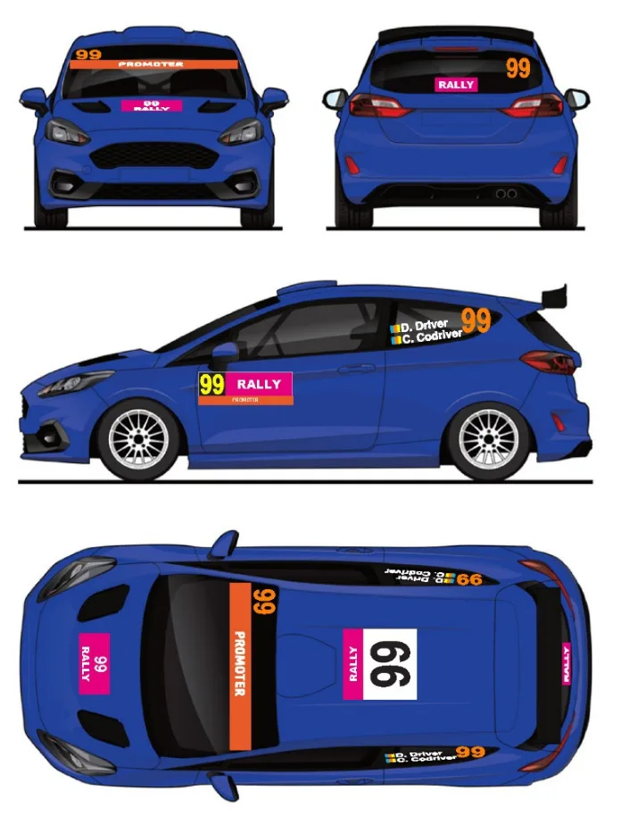
P.3029.広告29.1競技参加者は以下を条件として、どのような種類の広告も車両に貼り付けることが許される： － 国内法規およびFIAの諸規則で許可されていること。－ 不快感を与えるものでないこと。－ 本質的に政治的または宗教的なものでないこと。－ 競技ゼッケン番号に関する規則を遵守していること。－ ウインドウを通してのクルーの視界に影響しないこと。－ 国際競技規則第10条6項2の規定に合致していること。29.2自動車マニファクチャラーの名称が、ラリーの名称と関連すること、またはオーガナイザーによる義務付けの広告スペースに表示したりすることはできない。29.3オーガナイザーによる義務付けの広告内容は、エントリー受付締め切り前に、当該ラリー競技特別規則書に、または公式ブルテンに明記されなければならない。29.4オーガナイザーによる任意の広告
29.4.1オーガナイザーは競技参加者に任意の広告を表示するよう求める場合がある。これを競技参加者が受け入れない場合、エントリーフィーは2倍を超えて増額されることはなく、いかなる場合にも追加の料金は2000ユーロを上限とする。29.4.2任意広告の主なビジネス分野は、オーガナイザーによって必ず明確にしなければならない。自動車、タイヤ、燃料または潤滑油に関する任意広告について、競技参加者が広告表示を受け入れない場合、追加料金を課すことはできない。29.4.3競技特別規則書に明記されるオーガナイザーの任意広告を受け入れる競技参加者は、そのためのスペースを確保しなければならない。そのスペースは必須広告スペースの2倍を超えることはできない。広告の改変はすべて禁止される。29.4.4オーガナイザーの任意広告は、競技特別規則書に明記されなければならない。任意広告がブルテンに公示され競技参加者自身の広告と競合する場合は、競技参加者は追加の料金を支払うことなく、その任意広告を拒否することができる。29.5選手権の識別表示および宣伝
29.5.1選手権のプロモーター（存在する場合）は、追加の広告要件を設定することができる。以下のエリアは、選手権プロモーター（存在する場合）が、ステッカーのセットを用いて選手権の識別表示および広告を表示するために確保される。－ ウインドスクリーン上部にある既存の競技参加者用の高さ15cmの下のスペース（高さ15cm、ウインドスクリーンの全幅にわたって）。ただし、それがラリー開催国の国内法規に合致することを条件とする。－ 第27.2.1項に定められているフロントドアパネルの真下に高さ6cm、幅67cmのスペース。
P.31－ 車両のダッシュボード上に高さ10cm、幅20cmまでのスペースで、選手権プロ
モーターの車載カメラに映るスペース。29.5.2選手権の識別表示内の一切の広告は、第29.1項および第29.2項に合致していなければならない。参加確認と車両検査30.参加確認30.1タイムスケジュールラリーに参加するドライバーとコ・ドライバーは、競技特別規則書に記載のタイムテーブルに従って参加確認に参加しなくてはならない。遅刻の罰金は競技特別規則書に詳記される。30.2必要な書類参加確認中、以下の元本および有効な書類がチェックされる： －競技参加者ライセンス－ドライバーおよびコ・ドライバーの競技ライセンス－ドライバーおよびコ・ドライバーの有効な運転免許証－ドライバーおよびコ・ドライバーのパスポート、あるいは身分証明書－ドライバーおよびコ・ドライバーが署名したドライバー宣誓および誓約書－海外からの競技参加者および／またはドライバーはすべて、ASN発行の海外競技会出場証明書－すべての詳細を記入済みのエントリーフォーム－車両登録書類－車両所有者の承認（競技参加者と異なる場合）オーガナイザーが審査を望むその他の書類（例：自動車保険証書）は、競技特別規則書に記載されなければならない。31.ラリーの競技要素の開始前の車両検査31.1一般規定
31.1.1競技特別規則書に別途規定がない限り、車両はチーム担当者によって車両検査に持ち込むことができる。31.1.2車両検査では、競技参加者は、着衣類、ヘルメットおよび使用予定のFIA承認の頭部拘束装置の、すべての装備品を提示しなければならない。付則L項第III章を遵守しているかが検査される。31.1.3当該地域選手権規定に定められている場合、車両は、ギアボックスとディファレンシャルの封印のために、そのサンプガードを取り外し、重量計測のために車両と一緒に保管しておかなければならない。
P.3231.1.4クルーは車両の認定を受けた完全な状態の公認書式を提示しなければならない。31.1.5車検員は、車両の識別確認を求める。シャシーおよびシリンダーブロックはマーキングされる。31.1.6最初の車両検査にて封印されたコンポーネント部品のみがラリーを通じて使用を許される。これらのコンポーネント部品は、封印された状態を維持しなければならない。31.1.7車両検査後に車両が技術および／または安全に関する規則に合致していないことが判明した場合、当該車両は規則に合致するようにし、競技特別規則書に記載された時刻と場所で再度車両検査を受けなければならない。それでも車両が規則に合致しない場合、チーフテクニカルデリゲートの提案に基づき、競技審査委員会は、その車両のスタートを許可しない決定をすることができる。31.2タイムテーブルコンポーネント部品の封印および車両重量の測定を含む車両検査のタイムテーブルは、競技特別規則書あるいはブルテンで公示されること。32.ラリー競技期間中の検査32.1追加の検査車両に加え、着衣類を含めた適合性および適格性についての安全項目の検査は、必要に応じてシェイクダウン、フリープラクティス／予選ステージを含めラリー競技期間中いつでも、競技審査委員会にそれが周知されたうえで、ＦＩＡテクニカルデリゲートあるいは車検委員長の単独裁量および指示により実施することができる。32.2競技参加者の責務
32.2.1競技参加者はラリー期間を通じ、自身の車両の技術的適合性について責任を負い、関連する公式書類すべてを提出できなければならない。32.2.2識別用マーク（第31条1項6および16条、17条を参照）が貼り付けられる場合、ラリー競技前車検からラリー競技の終了まで、あるいは本規則で封印を切ることが認められる時まで、識別用マークが無傷の状態であることを確認するのは競技参加者の責務である。それらが失われている場合、競技審査委員会に報告される。32.2.3検査中に取り扱われた車両のすべての部品が正しく再取り付けされていることを確認するのも競技参加者の責務である。32.2.4不正が発覚した場合はすべて、および特にオリジナル通りであると提示された識別用マークが改ざんされていた場合、競技審査委員会に報告される。
P.3333.最終検査33.1最終パルクフェルメ
33.1.1フィニッシュの正式手順が終了した後、車両はパルクフェルメに保管され、競技審査委員会によって保管解除されるまで、そのまま留まらなければならない。33.1.2暫定順位認定は、最後の競技車両が最終コントロールにチェックインした後できるだけ早く、最終車両検査の実施中であっても、競技特別規則書（あるいはブルテン）に明記された時刻に公示される。33.2車両の選択車両の分解を伴うラリー後の車両検査は、競技審査委員会の裁量で、あるいは抗議があった場合、または競技長および／あるいはFIAテクニカルデリゲート（車検委員長）の競技審査委員会への進言によって、実施される場合がある。33.3公認書式最終検査には、完全なオリジナルのFIA公認書式、およびその他の必要な証明書類が用意されなければならない。リージョナル車両については、それに対応するオリジナルのASN書類が用意されなければならない。
ドライバーの行為34.行動規範34.1一般規定
34.1.1クルーは常にスポーツマナーに則った行動をしなければならない。34.1.2少なくとも1名のクルーは、最初のラリーブリーフィングに出席しなければならない。これを怠った場合、競技長により100ユーロの罰金が科される。チーム代表者も当該ブリーフィングに出席することができる。34.1.3車両がパルクフェルメ規定の下にある時（第63条1項）、車両を動かすことができるのはクルーおよびオフィシャルのみで、それ以外のすべての時間は、誰でも手で押すことができる。自力によるもの、あるいは手押しされるまたは本規則にて別途認められている以外は、車両のいかなる方法による動きも禁止される。例外としてスペシャルステージ内で、ラリーのコースへ戻すため、あるいはラリールートをクリアにするために、車両を牽引または押すことが許される。34.1.4エキシビション走行は、ラリーの競技特別規則書にて許可されている場合のみ実施できる。34.1.5クルーは常にスペシャルステージの進行方向に運転しなければならな
P.34い（単なる方向転換する場合は除く）。34.1.6一般ロードセクションおよびステージのスタートでは、競技車両は４つの自由に回転するホイールとタイヤでのみ運転できる。本条項に従わない車両はすべて、第54条に基づきリタイアしたものと見なされる。競技審査委員会によって追加のペナルティが科せられる場合がある。34.1.7フロントガラスが酷く損傷しドライバーの視界を著しく妨げる状態での競技中の運転はすべて、禁止される。該当するクルーは競技審査委員会の指示に従って競技を禁止される場合がある。第54条によって該当する場合は、修理後にクルーは再スタートすることができる。フロントガラスを所定の位置に取り付けずにスペシャルステージを走行する場合は、両クルーがEN1938仕様に従う保護ゴーグルあるいはバイザーが閉じられたフルフェイスヘルメットを着用している場合にのみ許される。上記いずれにおいても、警察は各国の道路交通法規に従い、車両を停止させ走行を禁じる場合がある。34.1.8他の車両に追いつかれたクルー／車両は、追い越されるために必要な動きをしなければならない。これは特に技術的なトラブルあるいは道路から外れてリスタートしてタイムを失っている場合が当てはまる。追い越される準備ができていることを示すために、適切な方向指示器（例：左ウインカーは、追い越される車両が道路の左側に寄ったままを意味する）を点灯しなければならない。追い越されるクルーは、安全な場所に停止するなど、追い越しを容易にするためにあらゆる努力を払わなければならない。車両に車両間通信機能が装備されている場合、最初の追い越し要求からこの規則が適用される。クルーは、追い越しによって危険が生じないようにする責任を負う。34.2レッキおよび／またはシェイクダウンのロードセクションにおいて
34.2.1レッキはプラクティスではないことが強調される。レッキおよびシェイクダウンの時間帯の両方において、ラリー開催国のすべての道路交通法規を厳守し、その他の道路利用者の安全と権利を尊重しなければならない。34.2.2スペシャルステージのレッキ／シェイクダウン中、警察官、オフィシャル、あるいはトラッキングシステムによって記録されたロードセクションの速度違反はすべて、競技長により次の通りの罰金が科せられる：制限速度を超えた1km/hごとに：25ユーロ競技長による本規定の適用はすべて、競技長から当該競技参加者に通知される。34.2.3レッキ中のその他の交通違反は、第34条3項4に従い、競技審査委員会によってペナルティが科せられる。34.2.4本罰金の総額は、警察によって科せられるいかなる罰金によっても変更されることはない。34.2.5同じラリーでのレッキ中で２度目の違反があった場合、罰金額は２倍になる。
P.3534.3ラリー中のスピード違反／交通規則
34.3.1ラリー期間を通じて、クルーの両名ともに、国内の交通規則を遵守しなければならない。34.3.2ラリーに参加しているクルーが交通違反を犯した場合、違反を発見した警察官あるいはオフィシャルは、可能な場合には、一般道路利用者に対するのと同じ方法で、違反者にその旨を通知しなければならない。34.3.3警察あるいはオフィシャルが違反したドライバーを停止させないことを決めた場合であっても、以下を条件として、適切な規則によって定められているペナルティを適用することを求めることができる： － 違反の通告が、暫定最終順位認定の公示前に、公式なルートを通じ書面にて行われていること。－ 違反の宣言が、違反ドライバーを特定するのに疑いの余地がなく十分な詳細を述べており、違反の場所と時刻も正確であること。－ 違反の事実は、様々な解釈が可能ではないこと。34.3.4ラリーの競技要素中の違反に対するペナルティ： a) 最初の違反：
－ 速度違反：競技長から、制限速度を超えた1km/hごとに罰金25ユーロが科
せられる－ 速度違反以外の違反：競技審査委員会から、ペナルティが科せられるb) 第二回目の違反：
－ 速度違反：競技長から、制限速度を超えた1km/hごとに罰金50ユーロが科
せられる－ 速度違反以外の違反：競技審査委員会から、ペナルティが科せられるc) 第三回目の違反：競技長から、5分間のタイムペナルティが科せられる。d) 第四回目の違反：競技審査委員会よってのみ、失格処分が科せられる。競技長による本規則の適用はすべて、競技長から当該競技参加者に通知される。34.4第34条2項および第34条3項に定めるペナルティは、競技審査委員会が必要と判断した場合、追加のペナルティを科すことを妨げるものではない。レッキ35.レッキ35.1レッキ車両
35.1.1共通要件－ 車両は単一色に塗装されていなければならず、広告やステッカーなどがあってはならない。－ 車体底部の保護体は認められる（グループN規定に従う）。－ 公道使用認証済みのヘッドライトを2つ追加が認められる。
P.36－ クルーは、"簡易的"インターコムシステム（ヘルメットなし）を使用することができる。－ 車載ナビゲーション装置を取り付けることができる。以下の仕様に適合する車両を使用できる： 35.1.2標準車両一般向けに販売されているままの全く改造されていない標準車両。35.1.3量産車両－ エンジンは量産エンジンであること（グループN規定に従う）。－ ギアボックスは量産ギアボックスであること（グループN規定に従う）。－ エキゾーストは、ラリー開催国で許される法規許容範囲内の最大音量レベルの量産エキゾーストであること。－ サスペンションはグループN規定に従うこと。－ 付則J項第253条8項1～8項3の規定に合致する鋼鉄製の安全ケージの取り付
けが認められる。－ バケットシートは、車両の内装色に類似した色であれば認められる。－ 付則J項グループN規定の範囲内で、ホイールは自由。35.2レッキ車両のタイヤレッキ車両に使用できるタイヤは： a) 公道使用が認められているアスファルト向けの量産タイヤであること。b) 競技特別規則書に他の定めがない限り、グラベル向けタイヤは自由。35.3レッキの制約ラリー競技特別規則書の発行以降は、選手権ラリーにエントリー済み、またはエントリーを予定しており、当該ラリーのスペシャルステージで使用予定のいかなる道路を走行することを望むドライバーあるいはそのコ・ドライバー、またはその他のチーム員のいずれも、オーガナイザーの書面による許可を得た後のみ走行できる。本ルールを遵守しないドライバーは、競技審査委員会に報告される。35.4レッキ走行35.4.1タイムテーブルレッキは、オーガナイザーが作成したタイムテーブルに従って実施しなければならない。レッキへの参加は義務ではない。35.4.2レッキのタイムテーブルの遵守ラリーのアイテナリーの発行以降スペシャルステージが終了するまでの間、公共交通用に開放されてラリーで使用されなくなるまで、エントリーしているクルーに関係者はすべて、競技長の明確な許可がある場合を除いて、ラリーのスペシャルステージの道路への進入は禁止される（徒歩は除く）。ただし、第35条3項は遵守されなければならない。ラリーの競技要素にスーパースペシャルステージが含まれている場合、そのレッキはレッキタイムテーブルの一部とはみなされない。35.4.3走行回数
P.37各クルーが各スペシャルステージを走行する回数は2回に制限される（2回走行するスペシャルステージは1回のスペシャルステージとみなされる）。クルーは、ラリー特別規則書に別の定めがある場合を除き、スペシャルステージにおいてバック走行またはラリーの進行方向と反対方向への走行を行ってはならない。レッキ中は、各スペシャルステージのスタートとストップポイントにコントロールマーシャルが配置され走行回数を記録する。クルーは、スタートとフィニッシュのコントロールを通過してのみ、スペシャルステージに入るあるいは出ることが認められる。これ以外のチェックもスペシャルステージ内で実施される場合がある。義務付けのトラッキングシステムでいかなる違反行為も分析される場合、マーシャルによるコントロールは任意となる。35.4.4レッキ中の速度オーガナイザーは、スペシャルステージ内の速度制限を設定することができる。このような制限は、競技特別規則書に明記されなければならず、レッキ中は常にチェックすることができる。レッキ中の速度を監視するため、FIAテクニカルリストNo.98：ラリー車両トラッキングシステムからのトラッキングシステムを使用することが義務付けられる。レッキ中にこのシステムへの妨害を行った競技参加者は競技審査委員会に報告される。35.4.5シェイクダウンステージレッキスケジュールにシェイクダウンを含めることは義務付けられない。35.4.6人数スペシャルステージを各通過中は、クルーのみが車両の搭乗を許される。シェイクダウン／フリープラクティス／予選36.シェイクダウンの要件36.1一般シェイクダウンステージは、メディアおよびプロモーション両方の目的で、および競技参加者がその車両をテストするために実施することができる。ラリーのプログラムにシェイクダウンを含めるのはオーガナイザーの自由である。36.2シェイクダウンの実施
36.2.1シェイクダウンステージは、ラリー競技中のステージと同じ様に実施することとし、適切な安全対策すべてを行わなければならない。ステージはそのラリーの代表するようなものであること。36.2.2シェイクダウンステージはスーパースペシャルステージ、あるいはラリーのアイテナリーのステージの一部を利用して実施することができる。36.2.3第34条2項の適用においては、シェイクダウンはレッキの一部とみなされる。
P.3836.2.4シェイクダウンの路面は、スペシャルステージの大半の路面と同一とすること。36.3免責事項ラリーにエントリーしていない乗員がシェイクダウン中に搭乗する場合、オーガナイザーまたは選手権プロモーターが発行する免責事項誓約書に署名しなければならない。同乗者は、ラリーの特別規則書および国際競技規則付則L項に定める、すべての安全装備を着用しなければならない。36.4技術的要件シェイクダウンの前に、車両は車両検査に合格していなければならない。対象となる車両については、エンジンブロック、コンプリートトランスミッションおよび本規則に定めのある機械部品は、封印がされていなければならない。36.5シェイクダウン中の故障シェイクダウン中に車両が故障した競技参加者は、それでも、セレモニアルスタートに参加しなければならない。36.6搭乗するドライバーおよび同乗者の装備シェイクダウン中、車両に搭乗する者はすべて、国際競技規則付則L項第III章「ドライバーの装備」の規定に合致した、公認済みクラッシュヘルメット、要求される安全保護衣類および装備をすべて着用していなければならず、安全ハーネスを正しく締めていなければならない。いかなる違反もペナルティが科せられる。36.7シェイクダウン中のサービスラリーの特別規則書にその他の定めがない限り、サービスはメインのサービスパークでのみ行うことができる。37.フリープラクティス／予選ステージ37.1 一般
37.1.1当該選手権の規則に規定されていない場合、レグ1のスタート順を決定するためのフリープラクティス／予選ステージの実施はオーガナイザーの裁量に委ねられ、特別規則書に明記しなければならない。37.1.2 少なくともFIAプライオリティドライバー、および／またはRC2クラスの車両で選手権ポイントを獲得する資格のあるドライバーはすべて、予選ステージに参加しなければならない。37.1.3フリープラクティス／予選ステージは以下のとおり:・ 適切な安全対策がすべて講じられることを含め、ラリー本番中のステージ走行と同様に実施されること。・ ラリーのプログラムの一部を構成するが、ラリーリザルトには含めない。・ ラリーを代表するようなものでなければならない。・ 原則として3kmから5kmの距離であることが望ましい。
P.39・
37.1.4フリープラクティスまたは予選ステージ中に車両が故障した競技参加者であっても、セレモニアルスタートに参加しなければならない。37.2 フリープラクティスの走行
37.2.1 フリープラクティスステージは、メディアおよびプロモーションの機会として、および競技参加者が車両をテストする目的で実施される。37.2.2 参加資格のあるドライバーは、オーガナイザーが指定した時間枠内において、最大２回のプラクティス走行を完走することができる。37.3 フリープラクティス中の故障フリープラクティスステージを完走できなかった競技参加者は、フリープラクティスセッションの終了後、オーガナイザーがステージの終わりまで車両を移動させるまで待機しなければならない。37.4 フリープラクティスの進行
37.4.1 フリープラクティスで許可されている2回の走行後、参加資格のあるドライバーは、現時点での選手権順位の順に予選ステージをスタートするものとし、ターマックラリーの場合は各車1分、グラベルラリーの場合は2分の間隔とする。37.4.2 予選ステージ中は、エントリーしたドライバーとコ・ドライバーのみが車両に搭乗しなければならない。37.4.3 現時点の選手権に順位認定されていないドライバーの走行順は、競技審査委員会が決定する。37.4.4 スタートリストはラリーの競技特別規則書に定められた時間に公示される。スペシャルステージのスタートについて規定された手順が適用される。37.4.5 予選で同着となった場合、当該競技参加者は予選ステージのスタート順に従って順位付けされる。37.5予選ステージへの不参加および故障
37.5.1 予選ステージに参加しなかった、または正しく完走できなかったドライバーは予選最下位となる。複数のドライバーが予選ステージを完走できなかった場合は、予選ステージのスタートリスト順に従って順位が決定される。37.6 レグ1のスタート順37.6.1 当該選手権の規則で定められていない場合、予選ステージでの順位に応じて、予選ステージの上位10名のドライバーが１グループを形成し、他のドライバーよりも先にスタートする。
P.4037.6.2 第37条6項1に定められたドライバーグループは、ターマックラリーの場合は予選ステージの順位順に、グラベルラリーの場合は予選ステージの順位の逆順に、スタートリストの先頭に配置される。予選ステージを走行したその他のドライバーは、それぞれの順位の順番にスタートリストに配置される。
37.7 レイトチェックインあるいはアーリーチェックイン 予選ステージ（TCQS）のスタート前のタイムコントロールへの遅着または早着は、誤った参加とみなされ、第37条5項1が適用される。37.8 不正なスタート 予選ステージ中のいかなる不正なスタート、特にスタート合図前に行われたものは、誤った参加とみなされ、第37条5項1が適用される。37.9 サービス フリープラクティスのタイムテーブル開始から予選ステージでの各自のスタート時刻までは、メインのサービスパークまたはオーガナイザーがこの目的のために指定したサービスパークでのみサービスを行うことができる。37.10 技術要件 選手権対象車両については、地域ラリー選手権競技規則に定められている、エンジン、トランスミッション一式および機械部品が封印されていなければならない。スタートおよび再出走38.プロモーション活動WRCにのみ適用される。39.セレモニアルスタートラリーのプロモーションおよびメディアの関心を高めるために、セレモニアルスタートを実施することができる。セレモニアルスタートのスタート間隔と順番は、オーガナイザーの裁量に任される。すべてのセレモニーのスケジュールおよび場所は、競技特別規則書に記載しなければならない。クルーが競技車両に搭乗した状態でセレモニアルスタートに参加できない場合、競技審査委員会に通知のうえ、必要な車両検査を受け合格することを条件として、その車両に割り当てられたスタート時刻に、ラリーの残りをスタートすることが許される。その場合でも、当該クルーはドライビングスーツを着用し、予定時刻にセレモニアルスタートに参加しなければならない。40.ラリーのスタート40.1スタートエリアラリーの競技要素スタートの前に、競技特別規則書に詳述されるように、オーガナイザーはすべての競技車両を集合させることができ、競技車両は自走にてスタ
P.41ート時刻までにスタートエリアに進入しなければならない。スタートエリアへの遅延到着に対する罰金のみのペナルティについて、競技特別規則書に明記されなければならない。スタートエリアではサービスはすべて禁止される。40.2スタート時点での最大遅延セクションのスタートに１５分を超えて遅れて到着したクルーはすべて、そのセクションのスタートが認められない。41.スタート順と間隔41.1スタート順変更のための要件最終アイテナリーに詳細が示されるスペシャルステージの総距離の少なくとも10％が走破されるまで、スタート順を変更することはできない。41.2ドライバーの再配置競技長は、安全上の理由で、競技審査委員会の承認を得たうえで、ドライバーを再配置あるいは車両間のタイム間隔を変更することができる。41.3レグ1のスタート順レグ1のスタート順は以下のとおりとする： － FIAプライオリティドライバー－ それに続くその他すべての競技参加者のスタート順はオーガナイザーの裁量に任される。41.4その後に続くレグのスタート順その後に続くレグのスタート順は、ロードセクションでのタイムペナルティと、レグ終了時にスーパースペシャルステージが実施された場合を除いて、前のレグ最終スペシャルステージ終了時のステージタイムによる順位認定に基づく。生中継のＴＶ放映への関心を高める目的で、選手権のプロモーターはレグ終了時点での車両の走行順序を変更する要請ができる。41.5スタート間隔すべての車両は、選手権規定あるいはラリー競技特別規則書に別途定めがない限り、1分間隔でスタートする。コントロール42.コントロール － 一般要件42.1コントロールとゾーンの標識すべてのコントロールならびにゾーン、すなわち、パッセージおよびタイムコントロール、ストップコントロールを含むスペシャルステージのスタートおよびフィニッシュ、リグループパーク、給油エリア、タイヤマーキングゾーンおよびメディアゾーンは、付則Ｉに示される図および距離に合致したFIA承認の規格化された標識によって示され、ロードブックに記載されること。
P.4242.2保護バリアコントロールの前後最低5mのエリアは、コントロール業務を行えるように、道路の両側がバリアで保護されていること。42.3コントロールゾーンでの停車時間いかなるコントロールゾーンでの停車時間は、コントロール業務の遂行に必要な時間に限られる。42.4作業準備42.4.1コントロールは、先頭の競技車両が通過するターゲットタイムの少なくとも30分前には機能するように準備を完了しなければならない。42.4.2競技長が別の決定を行わない限り、最終競技車両の到着予定時刻から最大＋15分の遅延時間にてコントロールは終了する。42.5コントロールの手順および方向42.5.1クルーはコントロールに正しい順番でラリールートの進行方向に従ってチェックインしなければならない。42.5.2コントロールゾーンへ再進入することは禁止される。42.6マーシャルの指示42.6.1クルーはいかなるコントロールにおいても、マーシャルの指示に従うことが義務付けられる。これに従わなかった場合は競技審査委員会に報告される。42.6.2すべてのコントロールオフィシャルは識別できなければならない。各コントロールにて、チーフオフィシャルは他との区別が明瞭なタバードを着用していなければならない。42.7メディアゾーン（設置する場合）すべてのサービスパーク、リモートサービスエリア、タイヤフィッティングエリア（第57条2項1に該当するものを除く）、サービス前のすべてのリグループパーク（オーバーナイトリグループを除く）、およびフィニッシュでの表彰式前のホールディングエリア内において、黄色のタイムコントロールボードの手前に、バリアで囲われたメディアゾーンを設置しなければならない。このメディアゾーンへのアクセスは、適切なパスを所持している者に限られる。オーガナイザーは、クルーがメディアゾーンに最低１５分間立ち寄れるようなアイテナリーあるいはタイムスケジュールを組むことができる。更にメディアゾーンはロードブックに明記しなければならない。42.8車載カメラのデータ交換およびメンテナンスポイントオーガナイザーは、アイテナリー内に、車載カメラ（OBC）のデータ交換ポイントを設けることができる。このポイントはブルテン（競技長が発行できる）にて
P.43通知されなければならず、映像データの交換およびカメラ機材の調整／メンテナンスの目的のみに限られる。メディアゾーン、リグループあるいはパルクフェルメ、およびリモート給油エリアの出口においても、競技長の合意を得たうえで、映像データの交換およびカメラの保守ができる。この作業の実施にチーム員の立会いを条件とする場合、競技参加者の代表者は、この要請をラリースタート前に競技長に通知しておかなければならない。このような作業のすべては、マーシャルあるいはラリーオフィシャルの監督の下で行われる。43.パッセージコントロール付則1に示される標識で識別される、これらのコントロールでは、マーシャルがクルーから手渡されたタイムカードに、通過時刻を記載せず、すぐにスタンプを押す、および／あるいは署名しなければならない。44.タイムコントロール44.1運営これらのコントロールでは、マーシャルがカードを手渡された時刻をカードに記入する。時刻は分単位まで記入される。44.2チェックイン手順
44.2.1チェックイン手順は、車両がタイムコントロールゾーン入口の標識を通過した時点で開始される。44.2.2ゾーン入口の標識とコントロールの間では、クルーはいかなる理由であっても停止したり、または異常に低速で運転したりすることは禁止される。44.2.3実際の計時およびタイムカードへの時刻記入は、2名のクルーメンバーと車両がコントロールゾーン内にあり、コントロールテーブルの付近にいる場合のみ行われる。44.2.4チェックイン時刻はクルーの1名がタイムカードを適切なマーシャルに手渡した瞬間の正確な時刻とする。44.2.5その後、手書きあるいは印刷装置のいずれかにより、適切なマーシャルがカードを受け取った実際の時刻をカードに記入し、それ以外は記入しない。44.2.6目標チェックイン時刻はスペシャルステージのスタート時刻あるいは１つ前のTC時刻に、許容されるターゲットタイムを加算した時刻であり、これらの時刻は分単位で表される。44.2.7目標チェックイン時刻はクルー自身が責任を負い、コントロールテーブル上の公式時計を参照することができる。この目標チェックイン時刻について、
P.44マーシャルはクルーにいかなる情報も提供してはならない。44.2.8クルーは、車両が目標チェックイン時刻の同じ分、またはその前の１分間にコントロールゾーンに進入した場合でも、早着について何らペナルティを受けない。44.2.9クルーは、適切なマーシャルへのカードの手渡しが目標チェックイン時刻と同じ分で行われた場合、遅延について何らペナルティを受けない。44.2.10 目標チェックイン時刻と実際のチェックイン時刻に差があった場合、以下の通りにペナルティが適用される：
a) 遅着の場合：時間差1分ごと、1分未満の端数につき、それぞれ10秒。b) 早着の場合：時間差1分ごと、1分未満の端数につき、それぞれ1分。44.2.11 当該ラリーの競技特別規則書に明記されている、またはその後のブルテンで公示されていることを条件として、オーガナイザーはクルーがペナルティを受けることなくチェックイン時刻前にチェックインすることを認めることができる。44.2.12 クルーがチェックイン手順を遵守しなかったことが判明した場合、当該コントロールのチーフマーシャルは、直ちにその件を書面による報告書にして競技長に提出しなければならない。44.2.13 競技長の裁量にて、早着についてペナルティを受けたクルーに対し、当初に予定されていた時刻に出発するのに必要なニュートラリゼーションの時間を与えることができる。44.3スペシャルステージ前のタイムコントロールスペシャルステージのスタートコントロール前のタイムコントロールでは、以下の手順に従うこと： 44.3.1ロードセクションの終点のタイムコントロールにて、適切なマーシャルがタイムカードに、クルーのチェックイン時刻とそのステージの暫定スタート時刻の両方を記入する。クルーがステージのスタートの準備をしてスタートラインに着くまでに3分間の間隔がなければならない。44.3.2 2組以上のクルーが同じ分にチェックインした場合、彼らのそのスペシャルステージの暫定スタート時刻は、直前のタイムコントロールでの相対的な到着時刻順とする。直前のタイムコントロールに到着した時刻が同じ場合は、さらにその前のタイムコントロールに到着した時刻が考慮され、順番が決まるまで同様に繰り返すものとする。44.3.3クルーはタイムコントロールでチェックインした後、競技車両を続くスペシャルステージのスタートコントロールまで自走で進め、本規則に規定される手順に従ってスタートすること。44.3.4暫定スタート時刻と実際のスタート時刻に差がある場合、競技審査委員
P.45会が別途決定する場合を除き、スペシャルステージのスタートでマーシャルが記入した時刻が有効とする。44.3.5ステージスタート時刻は、その後、次のタイムコントロールのチェックイン時刻を算出するために使用するスタート時刻となる。44.4タイヤウォーミングゾーン（TWZ）
44.4.1タイムコントロールとスペシャルステージのスタートとの間にタイヤウォーミングゾーンを設けるかどうかは、オーガナイザーの任意とする。TWZとして使用する場合、その道路はレスキューカー要件を除きスペシャルステージのように設定されなければならない。なお、レスキューカーはスペシャルステージのスタート後方に配置したままとする。44.4.2タイヤウォーミングゾーンを設けるためには、タイムコントロールから次に続くスペシャルステージのスタートまでの距離は、500m以上なければならない。TWZは、ロードブックに記載しなければならない。44.4.3 TWZは、タイムコントロールの後に「TWZ」ボードがある所で始まり、「TWZ End」ボードで終了する。ドライバーは危険が生じた場合は、いつでも車両を停止することができなければならない。TWZ内での意図的な停車や逆走は厳禁とする。「TWZ End」のボードとスペシャルステージのスタート地点の間は、100m以上なければならず、クルーはスタートラインの位置まで歩くような速度で走行しなければならない。44.4.4スペシャルステージのスタート手順は、第48条に規定されている。クルーがタイヤを温め、スペシャルステージのスタートに備えるため、TWZの長さを考慮して3分の間隔を延長することができる。44.4.5 TWZを走行する前に、クルーは第53条1項に定める装備を装着しなければならない。44.4.6本条項によって改訂されないすべての規則は、変更されることなく引き続き有効である。44.4.7オーガナイザーは、競技特別規則書において諸規定を修正することができるが、上記の規定を変更することはできない。45.認められる最大遅延時間45.1認められる最大遅延時間いかなる個々のターゲットタイムについても30分を超える遅着、あるいは積算して各セクションあるいはレグ終了時点で30分を超える遅着があった場合は、当該競技参加者はそのコントロールでリタイアしたものとみなされ、第44条2項10.a）の通りに遅着について蓄積された合計ペナルティ時間は、30分の遅着ペナルティとする。該当する場合、クルーは当該選手権に特に定められた条項に従ってラリ
P.46ーを再出走することができる。この遅延時間の計算では、ペナルティタイム（1分ごとに10秒）は計算に入れず、実際の時刻が適用される。45.2早着いかなる場合であっても早着は、クルーの認められる最大遅延時間の減算をすることはできない。45.3認められる最大遅延時間の超過第45条1項に定める許される最大遅延時間の超過が発生した場合の通知は、セクションの終了時点でのみ発表することができる。46.リグループコントロール46.1リグループの手順
46.1.1リグループコントロールに到着時、クルーは自身のスタート時刻についての指示を受ける。その後、クルーはマーシャルの指示に従って車両を進める。46.1.2すべてのクルーは、ＴＣに隣接して設けられた公衆の立ち入り可能なサインゾーンに最大5分間いる準備をしなければならない。46.2リグループからの退出オーバーナイトリグループの後、およびパワーステージ（実施する場合）のスタートの前を除き、車両はリグループに到着した順で、そのリグループを再スタートしなければならない。ただし競技長は、理由を問わず、競技審査委員会に通知したうえで、任意の車両の順番を変更することができる。スペシャルステージ47.一般規定47.1計時スペシャルステージでは、10分の1秒まで計時される。フリープラクティスおよび予選ステージでは、1000分の1秒まで計時される。47.2スペシャルステージでの最低タイム
47.2.1オーガナイザーは、国際ラリーにおいて開催国の国内法で義務付けられている場合、スペシャルステージでの最低タイムを適用することができる。国際ラリーにおいてこれが適用された場合、いかなる競技参加者も、国内法によって定められた平均速度を超えるスペシャルステージでのタイムを記録することはできない。スペシャルステージの最低タイムは、各スペシャルステージに対して、分と秒単位で設定される。最低ステージタイムは、タイムカードの該当セクションおよびアイテナリーに掲載される。
P.4747.2.2スペシャルステージでのタイムの算定方法は次の通り： － 最低ステージタイム未満のタイムを記録した競技参加者は、最低ステージタイムが与えられる。－ 最低ステージタイムを超えた競技参加者には、実際に記録したタイムが与え
られる。48.スペシャルステージのスタート48.1スタートポイントスペシャルステージは、スタートラインに車両を停止したうえでのスタンディングスタートで始められる。48.2スタート手順
48.2.1電子スタート手順は、スタートラインからクルーが明確に視認できる位置に設置するものとし、カウントダウンの時計および／または連続ライトシステムで表示できる。いずれの表示でも、システムはラリーの競技特別規則書に記載しなければならない。48.2.2恒久的に引かれたスタートライン（グラベルおよび雪でも同様）を必ず設置しなければならず、反則スタート検知用フォトセル（光電センサー）は、スタートラインから50cm先に設置しなければならない。48.2.3実際のスタート指示時刻をタイムカードに記入した後は、そのタイムカードは可能な限り迅速にクルーに返却されなければならない。48.2.4スタートラインに車両が到着したら、正確なスタート位置を定めるためにマーシャルが置いたスティックに車両の前部を配置させること。スタート時刻の1分前を切り、車両が正しい位置に停止してから、マーシャルはそのスティックを外し、クルーは自動カウントダウン時計を参照する。スタート時刻までは車両の位置を変更することは認められず、変更があった場合は競技審査委員会へ報告される。48.3手動でのスタート手順手動でのスタート手順を行わなければならない場合では、クルーにタイムカードを返却した後、スタートマーシャルが大声で、30秒－15秒－10秒、そして最後の5秒は1秒ずつカウントダウンする。最後の5秒が経過した時点で、スタート指示をすること。48.4クルーの責任によるスタート遅延
48.4.1クルーの責任によりスタートが遅れた場合、マーシャルはタイムカードに新たな時刻を記入し、遅延1分ごとに、あるいは遅延1分未満の端数についても、ペナルティ1分が科せられる。48.4.2割り当てられた時刻にスペシャルステージをスタートするのを拒否し
P.48たクルーは、そのスペシャルステージを走行したか否かに関わらず、すべて競技審査委員会に報告される。48.4.3スタート合図が出されてから20秒以内にスタートラインからスタートしなかった車両はすべて、リタイアしたものとみなされ、直ちに安全な場所に移動される。この車両は地域選手権規定第54項により翌日の再出走が認められる。48.5スペシャルステージの遅延競技車両のスタートが20分以上なかった場合、セーフティーカーの通過とともに、ステージが再開されることを観客に知らせなければならない。あるいはステージを中止しなければならない。48.6反則スタート反則スタート、特にスタート合図前にスタートする違反については、以下のペナルティが科せられる： １回目の違反：10秒２回目の違反：1分３回目の違反：3分それ以上の違反：競技審査委員会の裁量による。これらのペナルティは、競技審査委員会が必要と判断した場合に、より重いペナルティを課すことを妨げるものではない。タイムの計算には、実際のスタート時刻を用いなければならない。49.スペシャルステージのフィニッシュ49.1フィニッシュラインスペシャルステージのフィニッシュタイムは、ストップラインの200m以上手前の、車両が速度を落とせると予想される、フライングフィニッシュで記録される。フライングフィニッシュとストップラインの間のエリアは、カーブ、鋭角なあるいは見間違うようなコーナー、あるいはゲートのような障害物または危険な妨害物があってはならない。黄色の予告標識とストップ標識の間での停止は禁止され、違反は競技審査委員会に報告される。計時記録はフィニッシュラインで、光電管を使用して行い、ストップウォッチでバックアップ計時を行う。計時委員は、赤地にチェッカーフラッグのついた標識で示される、フィニッシュラインと同一延長線上に配置されなければならない。49.2ストップポイントクルーは、赤い"STOP"標識で示されるストップポイントにて、タイムカードにフィニッシュタイム（時間、分、秒、および10分の1秒）の記入を受けなければならない。計時委員が直ちにマーシャルに正確なフィニッシュタイムを伝えられない場合は、マーシャルはクルーのタイムカードにスタンプの押印のみを行い、タイムは次のリグループコントロールにて記入される。
P.4950.パワーステージ50.1公示 パワーステージの実施方法は、該当する選手権の規則にて定められる。50.2特性このステージは: － 当該ラリーの最終のステージとする。－ すべての順位認定された競技参加者のための当該競技会のステージの１つとして実施される。－ 当該ラリーの代表的なものとする。50.3 車両のスタート順と間隔は競技長によって提案され、競技審査委員会によって承認される。スタート順および／または間隔がパワーステージを含むセクションのスタート時点と異なる場合、競技長はこの情報をパワーステージの前に行われるリグループ中にクルーに伝えなければならない。50.4「パワーステージ」ポイントの付与パワーステージポイントが付与されるタイトルは各選手権規則で規定される。50.4.1 － ポイントは、第3条1項3に記載された基準に従って付与される。－ ポイントを割り当てる目的で、パワーステージの順位認定は、当該ス
テージのタイムに、このステージで科されたその他のタイムペナルティ、不正スタートペナルティを含めて計算される。－ ポイントを得るためには、ドライバーはラリーの最終順位にて順位認定されていなければならない。－ ドライバーがパワーステージの順位認定に表示されているが、ラリーの最終公式順位で順位認定されていない場合、競技審査委員会はポイント付与にあたり、次の順位の競技参加者をパワーステージの順位認定で繰り上げるべきかどうかを決定する。－ 設定された順序でパワーステージをスタートしなかったクルーは、パ
ワーステージポイントを得る資格を有さない。そのようなクルーは、他のドライバーのポイントを減じることもできない。50.4.2 パワーステージが選手権でポイントを獲得する資格のあるすべてのクルーが、当該ステージを完了する前にパワーステージが完全に中止された場合、競技審査委員会はパワーステージに対してポイントを付与しない決定をすることができる。50.5 メディア報道の目的のため、オーガナイザーはステージのSTOPコントロールの直後のロードセクションで、任意の車両とそのクルーを停止させることができる。これらのクルーは、ステージのSTOPコントロールの担当者の指示に従い、必要に応じて、その担当者は次のロードセクションに許容される時間を変更することができる。
P.5051.スーパースペシャルステージ51.1スーパースペシャルステージの特性51.1.1 2台以上の車両が同時にスタートする場合、各スタート地点の走路デザインは類似したものでなければならない。各車両には同様のスタート手順を適用しなければならない。異なる地点からスタートしてもステージ距離を同じにするために、車両のスタートラインをずらして配置することができる。51.1.2スーパースペシャルステージを含めることは任意である。51.2スーパースペシャルステージの実施スーパースペシャルステージの走行方法、スタート順およびインターバル時間についての詳細な規定は、すべてオーガナイザーの裁量に任される。しかしながら、これらの情報はラリーの競技特別規則書に含めなければならない。51.3安全
51.3.1競技参加者に停止または減速の指示をするため、マーシャルらによって展開される赤旗、あるいはレッドライトのシステムが構築されていなければならない。第53条5項に規定される手順に従わなければならない。51.3.2安全を確保するために、ステージを完走できなかった競技参加者の車両は、オーガナイザーによってステージの終了地点、あるいは安全な場所に退避目的で移動される場合がある。52.スペシャルステージの中断 － 妨害52.1 スペシャルステージがいかなる理由にせよ中断あるいは中止された場合は、影響を受けた各クルーには、競技長がもっとも公平と判断するタイムが与えられる。競技長は、これに対応する通告を公示する。しかしながら、ステージの中断について、単独または共同かを問わず原因となったクルーは、この措置による利益を得ることはできない。52.2 クルー／車両が、前方の車両によって著しくかつ明白に妨げられた場合、競技長は、タイムクレジット（想定タイム）を与えることができる。53.競技参加者の安全53.1クルーの装備どのようなタイプのスペシャルステージにおいても車両が走行中には、ストップコントロールまでの間、クルーは公認済みのクラッシュヘルメット、付則L項第III章‐ドライバーの装備に合致した、必要とされるすべての安全衣類および装備を装備品メーカーが意図する通り着用し使用しなければならず、安全ベルトを正しく締めていなければならない。いかなる違反に対しても競技審査委員会によるペ
P.51ナルティが科せられる。53.2 車両の装備
53.2.1セーフティーエマージェンシーコンソール（トラッキングシステム）がオーガナイザーによって提供された場合、システムはドライバーおよびコ・ドライバーがハーネスを締めて着座している状態で容易に操作できなければならない。53.2.2 "SOS／OK"サイン各競技車両は、少なくとも42cm×29.7cm（A3サイズ）の寸法の、表面に赤で"SOS"、裏面に緑で"OK"を記したサインを搭載しなければならない。このサインは車両内に搭載され、両ドライバーともに容易に手の届くところになければならない。53.2.3各競技車両は、赤色の反射三角表示器を搭載しなければならない。53.3スペシャルステージ内での事件
53.3.1緊急の医療措置が必要な事故の場合、以下が適用される： － エマージェンシーコンソール（トラッキングシステム）のSOSスイッチが可能な限り速やかに起動されなければならない。（提供されている場合）－ 可能な場合、赤の"SOS"サインを後続の車両および援助しようとしているヘリコプターに、直ちに提示すること。－ 可能な限り速やかに、後続のドライバーに警告するため、車両が道をそれていたとしても、赤い反射三角表示器は、車両と同じ側の道路端に、車両から50m以上手前に離して、目立つ場所へ設置しなければならない。53.3.2 "SOS"サインをそれらに提示したクルー、あるいは事故に遭った車両を目撃し、その車両が"OK"サインを提示していないことを確認したクルーは、直ちに、いかなる例外もなく、援助を行うために停車しなければならない。すべての後続車両も停止しなければならない。その現場に到着した2番目の車両は、次の無線ポイントに進み状況を報告しなければならない。それ以降の車両は、緊急車両のために明確な通行ルートを確保しなければならない。この手順により停止したすべてのクルーには、第52条1項に従いタイムが付与される。53.3.3スペシャルステージ上またはその脇において、緊急の医療措置が必要ではない事故の場合、あるいはその他の理由により車両が停止している場合、一時的であっても恒久的であっても、以下が適用される： － エマージェンシーコンソールのOKスイッチが1分以内に起動されなければならない。（提供されている場合）－ 緑の"OK"サインが後続車両および援助しようとしているヘリコプターに、直ちに提示すること。クルーが車両から離れる場合、"OK"サインがすべての後続クルーに明確に見えるように提示しなければならない。－ 後続のドライバーに警告するため、車両が道をそれていたとしても、赤い反射三角表示器は、車両と同じ側の道路端に、クルー1名によって車両から50m以上手前に離して、目立つ場所へ設置しなければならない。53.3.4エマージェンシーコンソールのディスプレイにSOS、OK、ハザードの信
P.52号が提示された場合、この信号は、SOS/OKボードの提示または赤い反射三角表示器の設置と同等であるとみなされる。53.3.5上記いずれかの状況においても、何らかの理由でOK／SOSボードを提示することができない場合、車両の外でクルーによって示される、明確かつ容易に理解できるジェスチャーで置き換えることができる： － "OK"を示すには、腕を上げ親指を立てる－ "SOS"を示すには、両腕を頭上で交差させる
OK SOS 53.3.6上記の規則に従うことが可能であったにも関わらず、これを怠ったクルーはすべて、競技長から競技審査委員会に報告される。53.3.7ロードブックには、事故の場合の手順を示したページを含めなければならない。53.3.8ラリーをリタイアしたクルーはすべて、不可抗力の場合は除き、可能な限り速やかにオーガナイザーにその最終的なリタイアを知らせなければならない。これに従わなかったクルーはすべて、競技審査委員会の裁量によりペナルティが科せられる。53.4クルーメンバー以外の者を巻き込むスペシャルステージ内での事件クルーは、クルーメンバー以外の者が怪我をする事故に関係した場合、車両を直ちに停止させ、第53条3.1に定める手順に従わなければならない。53.5赤旗の使用
53.5.1電子赤旗（使用される場合）電子赤旗がすべての競技車両で使用される。ラリーコントロールから起動されると、エマージェンシーコンソールのスクリーンが赤に変わり、"RED FLAG"のメッセージが示される。クルーは直ちに"ACKNOWLEDGE"ボタンを押して電子赤旗を確認通知を返信し、第53条5.3に定める手順に従わなければならない。53.5.2ラジオポイントの赤旗赤旗は競技長の指示があった場合にのみ、クルーに対して提示される。旗はロードブックにマークされているラジオポイントでのみ提示することができ、付則H項第5条2.7に定める色の無線ポイントのシンボルマークの付いた識別ジャケットを着用したマーシャルによって提示されなければならない。事件の現場手前のす
P.53べてのラジオポイントで旗が提示される。各ラジオポイント（約5km毎に設置）には、赤旗を必ず備え付けていなければならない。赤旗以外の旗は、スペシャルステージのいかなる地点でも提示してはならない。53.5.3赤旗の意味赤旗が提示された地点を通過した場合、または電子赤旗を受信した場合、いずれか早い方のタイミングで、ドライバーは直ちに減速し、スペシャルステージの終了まで徐行しなければならず、マーシャルあるいは緊急介入車両のドライバーの指示に従わなければならない。この規則に従わなかった場合は、競技審査委員会の裁量によりペナルティが科せられる。53.5.4赤旗を提示されたクルーには、そのステージについて第52条1項に従い想定タイムが割り当てられる。53.5.5スーパースペシャルステージで異なるシグナリングシステム（例：点滅灯）が使用される場合、その詳細を競技特別規則書に明記しなければならない。53.5.6ステージが中断または中止され、クルーが当該スペシャルステージの通過を求める場合、ドライバーにどのように進行するかを知らせるため、スタート地点で赤旗が提示されなければならない。53.5.7レッキ中の赤旗ポイントレッキ中は、各ラジオポイントの位置にラジオポストのシンボルを表示した標識を提示しなければならない。この標識はラリー本番で使用されるものより小さくてもよいが、レッキ中のクルーが当該位置を記録できるよう、明確に視認できるものでなければならない。53.6シケイン
53.6.1安全対策としてシケインが設定される場合がある。競技参加者はスピードを抑制するために設計された一連の人工的なカーブを通過しなければならない。53.6.2すべてのシケインは、セーフティドシエ草案とロードブックに記載しなければならない。当該シケインは、国際競技規則付則H項5.5.7.1項に従い、および付則Iで定義される標識を用いて設置されなければならない。標識とシケイン各構成要素の完全な位置を示す標識とマーキングは、レッキの開始前までに設置されていなければならない。53.6.3シケインには、少なくともシケイン構成要素の1つ以上が移動したことによって成立するあらゆる違反を報告するため、審判員（A Judge of Fact）を配置しなければならない。違反１件につき、10秒のペナルティが科せられる。53.7バーチャルシケイン(VC)
53.7.1第53条6項に従うシケインの設置が、スペシャルステージに新たな危険が生じる場合は、安全のためにバーチャルシケインが設定される場合がある。この場合、競技参加者は150m～250mの定められたゾーン内において、一時的に
P.5450km/h未満まで減速しなければならない。53.7.2バーチャルシケインは、セーフティドシエ草案とロードブックに記載しなければならない。付則Iで定義される標識を用いて設置されなければならない。標識は、レッキの開始前に設置されていなければならない。53.7.3 オーガナイザーは、セーフティトラッキングシステムの提供事業者から、そのシステムがバーチャルシケインでの競技参加者の規則遵守を監視するために十分な範囲をカバーできることを書面で確認しなければならない。競技車両に搭載されるコンソールは、VCで50km/h未満の速度が記録されたこと、および再加速してよいことを、クルーに視覚的に確認できるように設計されていなければならない。53.7.4追加確認を行うため、速度測定装置を備えた審判員（A Judge of Fact）をVCに配置しなければならない。確認した結果が一致しなかった場合、遅いほうの速度が採用される。53.7.5 VCでの速度超過は、以下のペナルティが科せられる： •超過1〜5 km/h ：10秒•超過6〜0 km/h ：20秒•超過11 km/h以上 ：1分53.8スローゾーン(SZ)
53.8.1公共の安全に関する例外的な状況に対処するために、スローゾーンが設定される場合がある。その場合、競技参加者は、スローゾーン全体に設定された上限速度以下で走行を維持しなければならない。53.8.2すべてのスローゾーンは、セーフティドシエ草案およびロードブックに記載しなければならない。付則Iで定義される標識を用いて設置されなければならない。標識は、レッキの開始前に設置されていなければならない。53.8.3 オーガナイザーは、セーフティトラッキングシステムの提供事業者から、そのシステムがスローゾーン内での競技参加者の継続的進行状況を監視するため十分にカバーできることを書面で確認しなければならない。53.8.4スローゾーンの距離は、500から1000mの間でなければならない。スローゾーンでの最大速度は30、50、あるいは70 km/hとすることができる。53.8.5セーフティトラッキングシステムに不具合が生じた場合に備えて、バックアップシステム（光電管や時刻記録付きカメラ）で競技者のSZ内での経過時間を測定することが強く推奨される。53.8.6競技参加者の速度は100mごとに記録される。速度超過は以下のペナルティが科せられる： • 超過1～5 km/h ：1回の記録ごとに10秒• 超過6～10 km/h ：1回の記録ごとに20秒
P.55• 超過11 km/h以上：1回の記録ごとに1分54.リタイア後の再出走54.1一般規定
54.1.1ラリー競技特別規則書に別途定めがない限り、１つのセクションを完走できなかったクルーは、ロードブックの後ろにあるフォーム「最終リタイア届」を記入し出来る限り速やかに、また可能な場合は再出走リスト公示前にオーガナイザーへ提出することで競技長に対して別途の申告を行わない限り、オーバーナイトリグループに続く次のセクションのスタートからラリー再出走するものとみなされる。54.1.2競技長がリタイアの通知を受けた後、クルーは自身のタイムカードを引き渡さなければならない。リタイアがスペシャルステージ上あるいはストップコントロール内であった場合、そのステージタイムは記録されず、第54条2項が適用されること。54.1.3本規則第45条に定める最大遅延時間を超えた場合、当該競技参加者は、次のオーバーナイトリグループの後で再出走することが認められる。当該競技参加者が最大遅延時間を越えたタイムコントロールから、第54条2の通りタイムペナルティが適用される。54.1.4ラリー最終日のセクションをリタイアしたクルーはすべて、順位の認定がなされない。54.1.5優位を得ることを認識して意図的にリタイアしたと認められるクルーはすべて、競技審査委員会による判断により、再出走が許可されない場合がある。競技審査委員会は当該競技参加者および／あるいはクルーに対し、国際競技規則の第11条9項に従い制裁を課すことができる。54.2ペナルティ
54.2.1 再出走するすべてのクルーにはタイムペナルティが科せられる。各ステージまたは各スーパースペシャルステージを走行しなかった場合、タイムペナルティは1ステージにつき10分とする。54.2.2 このタイムペナルティは、走行しなかった各ステージごとに、当該車両のクラスの中での最速タイムに加算するものとし、クルーがリタイアしたスペシャルステージあるいはスーパースペシャルステージも含まれる。54.2.3 オーバーナイトリグープ直前のスペシャルステージあるいはスーパースペシャルステージの後でリタイアをした場合であっても、当該クルーはその最後のスペシャルステージあるいはスーパースペシャルステージにてリタイアしたとみなされる。前述に該当するクルーが、その最後のステージにおいて当該クラス最速タイムを
P.56記録していた場合、クルー自身のタイムがタイムペナルティ加算に計算される。55.再出走前の修理55.1サービスの位置と制限時間上記の様にレグをフィニッシュできなかったすべての車両は、競技参加者の裁量にて修理を行うことができる。車両がアクシデントによりリタイアした場合、修理を行う前に車両を直接サービスエリアに持ち込むことができるが、FIAテクニカルデリゲートまたは車検委員長が修理の許可あるいは不許可を与えるまでは、パルクフェルメ条件下で待機しなければならない。再出走するためには、すべてのリタイア車両は、次のレグの最初の車両の予定スタート時刻の1時間前までにその前のオーバーナイトリグループに車両を入れなければならない。55.2修理された車両の車両検査当該車両は当初のボディシェルとラリー前の公式車両検査でマーキングされたエンジンブロック、封印されたすべてのパーツを維持していなければならない。当該競技者はオーガナイザーが時刻を指定する再車検に立ち会わなければならない。
サービス56.サービス － 一般条件56.1サービスの実施
56.1.1最初のタイムコントロール以降、競技車両に対するサービスは、サービスパーク内においてのみ、および第60条で定められている場合に限り実施することができる。なお、リタイア後に再出走を予定している車両の修理を除く。56.1.2クルーは、車載の器材のみを使用し、いかなる外部からの物質的援助を受けず、特にサービスが禁止されている場所を除いて、いつでも当該車両に対してサービスを実施することができる。56.2チーム員およびサービスの制約
56.2.1競技走行中の競技車両から半径1km以内には、チーム員またはチームの輸送手段（ヘリコプターを含み）はすべて、存在してはならない。ただし、以下の場合を除く： － サービスパークおよびリモートサービスエリア（ＲＳＡ）－ 車両がリグループにある間－ 給油エリア－ タイヤフィッティングエリア－ 公式洗車エリアにおいて、1台につき1名のチーム員－ ブルテンにて認められた箇所－ スペシャルステージ内にて（タイムコントロールの開始を示す黄色の標識か
P.57ら、スペシャルステージの終了地点のストップの標識まで）－ 車両がメディアゾーンにある間－ ロードブックに指示されたルートを進む競技車両が、チーム員と同じ道を同じ時間に使用しなければならない場合。ただし、それらが同じ場所で同じ時間に停止しないことを条件とする。56.2.2 a）食料、飲料、衣類および情報（データカード、ロードブックなど）をクルーに渡す、あるいはクルーから受け取ることは、クルーが以下の状態にある間に限り許可される： － タイヤフィッティングエリアにて許可された人員より、そのエリアの中でのみ、－ サービスパーク、リモートサービスエリア、リグループあるいはメディアゾ
ーンに競技車両がいる間。b）リグループがサービスパークに近接し、クルーがロードセクションの最後でチェックインを待っている場合、クルーはメディアに対する義務を履行した後に限り、自身のサービスベイに進むことが認められる。56.2.3サービス開始前に、パルクフェルメからサービスエリアまで自力で再始動できず走行することできない車両について、オフィシャル／マーシャルおよび／あるいはチーム員が、押す、あるいは牽引して、その車両が割り当てられた自身のサービスベイまで移動させることが認められる。57.サービスパーク57.1一般規定ラリー期間を通じ、メインサービスパークが1か所のみとする。ただし、オーガナイザーは、ラリー期間中にサービスパークを移設する必要がある場合、FIAにその正当な理由を添えて申請することができる。各競技参加者は、自身のサービスベイをグランドシートで保護する責務がある。57.2サービスパークのスケジュールサービスパークにおける各車両のスケジュールは、以下の提案を考慮してラリーのアイテナリーに従わなければならない： 57.2.1オーバーナイトリグループに続く、最初のSSの前に15分間－ 技術検査は、パルクフェルメ内で行うことができる。57.2.2 2つのステージグループの間に30分間－ リグループ内に設定可能な3分テクニカルゾーンに続いて。57.2.3オーバーナイトリグループ前の各セクションの終わりに45分間
－ パルクフェルメ内で、10分間のテクニカルチェックが実施される。57.2.4フィニッシュ前に10分間－ 10分間のテクニカルゾーンに続いて。
P.5857.3サービスパークの識別サービスパークはラリーのアイテナリーにおいて、入口および出口にタイムコントロールが設置される（付則Ⅰに定める25mの距離は5mに縮めること）。57.4サービスパーク内での速度サービスパーク内での車両の制限速度は、30km/hまでとし、あるいは競技特別規則書にこれより低い速度が定められている場合は、その速度を上限とする。この速度制限に従わなかった場合は、競技長により以下のとおりペナルティが科せられる： － 速度制限を1km/h超えるごとに25ユーロ。競技長による本規則の適用はすべて、当該競技参加者に対して競技長自身から通知される。57.5外部の支援サービスパーク内においては、オフィシャル／マーシャルおよび／またはチーム員が、車両を牽引する、運ぶ、または押して移動することが許可される。57.6サービスパークのレイアウト
57.6.1オーガナイザーはサービスパーク内に、各競技チームに「サービスパークエリア」を割り当てなければならない（長さ、幅、および配置が決められる）。各チーム車両はすべて、割り当てられたエリアに駐車しなければならない。これらのチーム車両は「Service（サービス）」または「Auxiliary（補助）」プレートを搭載していなければならない。57.6.2割り当てられたエリア内に完全に収まって駐車していないすべての車両は、サービスパークへ徒歩でアクセスできる隣接のパーキングエリアに駐車しなければならない。これらの車両には「Auxiliary（補助）」プレートが割り当てられる。57.7サポート選手権のための追加要件WRCにのみ適用される。58.サービスパークでのタンク内除去および／あるいは補充サービスパーク内にて、タンク内を空にすることおよび／あるいは補充がサービスの一部として必要な場合（すなわち、燃料タンクの交換、燃料ポンプの交換、燃料フィルターの交換、または他燃料回路のその他の部品の交換など）、以下を条件として許可される： － 作業は、オーガナイザーの了承のもとで実施されること。－ 競技参加者は、消火器を持った消火担当者をそばに待機させること。－ 燃料回路が開放された状態および／あるいはタンク内の燃料抜き取り作業中および／あるいは給油作業中は、車両に対していかなるその他作業を行わないこと。－ 車両の周囲には適切な安全が確立されていること。－ 次のリフューエルエリアに到達するために必要最低限の燃料のみが給油され
P.59ること。59.フレキシサービス59.1一般規定45分間のフレキシサービスは、共通の入口および出口のタイムコントロールを設けたうえで、競技車両をパルクフェルメから隣接のサービスパークに移動することが許可させる。いかなる変更も、ラリーの競技特別規則書にて公示されなければならない。オーバーナイトリグル―プ前のフレキシサービスが行われる前のパルクフェルメには10分間の車両技術検査を含まなければならない。59.2フレキシサービスの実施とタイムスケジュール
59.2.1 45分間のフレキシサービスにおいて、クルーはパルクフェルメに入る。クルーはその次に、サービスパークに入ることもできるし、車両をパルクフェルメに置いたままにすることもできる。59.2.2競技車両は、競技参加者に認められた担当者がパルクフェルメからサービスパークへ、またその逆へ、それぞれ１回に限り、自走で移動することができる。その際、タイムカード提出に関する正式な手順すべて、および、これに関連するペナルティを遵守しなければならない。59.2.3パルクフェルメからフレキシサービス前のサービスエリアまで、車両が再始動できない、あるいは自力で走行できない場合には、マーシャルおよび／またはチーム員が車両が、割り当てられたサービスベイまで押すこと、またはけん引して移動させることが許可される。59.2.4競技車両は、45分間が経過し終える前であっても、ペナルティを受けることなくパルクフェルメに戻すことができる。59.2.5フレキシサービスの運用時間枠は、オーガナイザーの裁量に委ねられるが、ラリーのアイテナリーに明記しなければならない。RRSR（地域ラリー競技規則）付則II第4条5を参照。60.リモートサービスエリア（RSA）60.1一般規定リモートサービスエリアは、以下の条件にて設営できる： － 入口および出口にタイムコントロールを設置し、エリアを定義すること。－ 1台あたりの所要時間が15分間を超えないこと。－ 本RSA規定に基づく、サービス車両から供給されるタイヤの交換、およびサービスすべてが許されなければならない。－ 入口タイムコントロールの手前に3分間のテクニカルゾーンを設置することができる。－ 出口タイムコントロールの後で、タイヤマーキングゾーンを設置すること。
P.60－ ラリーオフィシャルおよび適切なパスを所持するメディア関係者、本RSA規定に基づく許可されたチーム員のみの立ち入りを認めること。－ プロモーション的価値を高めるために、オーガナイザーはRSAを街中や人口
の多い中心地に設けることが奨励される。60.2チーム員の人数
60.2.1定められたエリア内におけるいかなる作業も、当該クルーのみ、ならびに当該クルーごとに3名のチーム員のみが行うことができる。60.2.2当該エリアは、提供される推奨ルートを使用することにより、これらのエリアおよびサービスパークに同じチーム員が両方で作業できるようにスケジュールされなければならない。ドライバーの飲料容器の補充は、車両への作業とはみなされない。60.2.3第60条2項1、同条項2項2および3項3に基づき認めらた者以外のチーム員はエリアに立ち入ってはならない60.3使用が認められる器材および工具
60.3.1リモートサービスエリアでは、以下が認められる： － ジャッキ、シャシースタンド、カースロープ（ランプ）、ホイルナットスパナ、
トルクレンチ、手持ち工具および純粋な水の使用－ 競技車両に搭載されている器材、あるいは部品および工具の使用－ 必要な照明を含む、バッテリー駆動工具の使用－ 純粋な水を車両システムに追加する際に充填用装置の使用－ ブレーキのエア抜き、および車両清掃のための器材／資材の使用60.3.2地面保護シートを敷いて使用しなければならない。60.3.3リモートサービスエリア内に配置され、追加の要員１名（チーム員以外）が操作を行う１つのコンピューターと、競技車両を１つのケーブルで連結することが許可される。この操作要員は競技車両またはラリー車両に取り付けられた一切の部品に触れてはならない。60.3.4追加のライトを車両の外側または中に取り付けることが、リモートサービスエリアにて許可される。追加のライト、タイヤおよびその取り付けに必要な工具は、サービス車両にてRSAに輸送することができる。60.3.5車両から器材また部品をRSAに下ろすことができ、当該車両が出発した後にエリアから撤去すること。60.4リモートサービスエリア車両パスチーム員と使用が認められた器材および工具をRSAへ輸送するため、競技車両１台につき１枚の車両用パスが、オーガナイザーから発行される。60.5タイヤフィッティングエリア（TFA)
P.61各タイヤフィッティングエリアにて： － 入口と出口にタイムコントロールを設けること。－ TFAのターゲットタイムは15分とすること。－ TFA内でのすべての作業はクルー自身とクルー１組につき2名のチーム員のみが、競技車両に搭載された器材に追加して、チーム員によって持ち込むことのできるハンドヘルド（携帯型）コンピューター、追加のジャッキ、ウマ４つを使用して作業すること。－ 使用する追加のタイヤをサービス車両でエリアに運び込むことができ、ラリー車両に取り付ける準備をチーム員がすることができる。－ すべての車両は、タイヤ交換しない場合であっても、タイヤフィッティングエリアを通過すること、およびタイヤマーキングゾーンに停止することが義務付けられる。－ 各タイヤフィッティングエリアの出口には、ホイール／タイヤマーキングおよびバーコード読み取りエリアが設置され、各競技車両は停止しなければならない。－ TFAへのタイヤの輸送については、各ラリーの特別規則書に定められる。－ TFA前にリグループが行われる場合、3分間のテクニカルゾーンは、リグルー
プ出口のTC前に設定しなければならない。
燃料 － 給油61.リフューエルおよびその手順61.1場所
61.1.1燃料タンクの交換について詳細に定められている場合を除き、競技参加者は、ロードブックに示された指定リフューエルエリア（RA）あるいはリフューエルエリアのピクトグラム（付則I-2参照）で示された商用ガソリンスタンドでのみ給油を行うことができる。リフューエルエリアは以下の場所に設けることができる： － サービスパークの出口－ リモートサービスエリアの出口－ ラリールート上の遠隔地。61.1.2リフューエルエリアはすべて、ラリーのアイテナリーおよびロードブック上に示されなければならない。2つのオーバーナイトリグループの間に設定できる異なるリフューエルエリア（RA）は、最大3か所までとし、そのうち1か所をサービスパーク内に設定することもできる。安全上の理由から、可能な限り、オーガナイザーはラリールート上でリモートリフューエルエリアを使用しないようにセクションの長さを調整することが推奨される。正当な理由のないリモートリフューエルエリアが含まれている場合、FIAはアイテナリーの変更を要求することができる。61.1.3商用ガソリンスタンドは除き、リフューエルエリアの出入口は、青色の缶あるいはポンプの標識が表示されなければならない。
P.6261.1.4すべてのリフューエルエリア（商用ガソリンスタンドを除く）において、オーガナイザーは、消火設備の準備および／あるいは適切な安全方策を手配しておけなければならない。61.1.5ラリーの競技ルート上にガソリンスタンドが存在しない場合、クルーに対して、オーガナイザーは集中システムを使用して、付則J項に基づいた単一の燃料供給を行うことができる。このようなリフューエルポイントもリフューエルエリアと同様のすべての安全条件を遵守しなければならない。61.2リフューエルエリア内での手順
61.2.1 RA内では、競技車両への燃料補給に直接かかかわる作業のみが許可される。61.2.2すべてのRAs（複数含）にて、5km/hの速度制限が適用される。61.2.3 RAに立ち入るために、給油作業に携わるすべての人員は、火災に対する適切な防護となる衣服を着用しなければならない。それら衣類は、少なくとも次のものを含んでいなければならない：長ズボン、長袖の上着、露出している部分がない靴、グローブ、およびバラクラバ。61.2.4燃料サプライヤーあるいはオーガナイザーなど、リフューエルエリアの運営に責任を負う者は、上面が吸収材、下面が不浸透性を持つ環境保護マットによって地面を保護する責務を負う。この要件を競技参加者に課す場合には、特別規則書に明記しなければならない。61.2.5給油に関する責任は、すべて競技参加者にのみに帰属する。61.2.6給油作業中は、エンジンを停止していなければならない。61.2.7給油中、クルーは車両の外にいなければならない。61.2.8車両のリフューエル手順を支援することのみを目的として、各クルーのチーム員2名が、RAに立ち入ることができる。61.2.9クルー、2名のチーム員および／あるいはオフィシャルによって、ペナルティを受けることなく、RAから車両を押し出すことができる。61.3商用ガソリンスタンドでの手順
61.3.1ドライバーは、ロードブックに記載されている商用ガソリンスタンドのポンプあるいはオーガナイザーの配給ポイントから供給される市販燃料を使用することができる。この燃料は競技車両の燃料タンクに直接給油されなければならない。61.3.2クルーは、車両外部からの物質的支援を受けることなく、車載の器材およびポンプのみを使用しなければならない。
P.6361.3.3 FIA指定の燃料カップリングのみを装備し、商用ガソリンスタンドからの燃料を使用する車両は、アダプターを車載して携行し、それをラリー競技前の車両検査で提示しなければならない。62.燃料の使用62.1これらの規則について、該当する選手権規則を参照のこと。すべて燃料は、付則J項第266条に合致していなければならない。62.2該当する選手権規則において単一の燃料供給が義務付けられていない場合は、オーガナイザーはFIAの事前承認を得た上で、競技特別規則書において付則J項第266条B.3項に定義される先進的サステナブル（AS）燃料の使用を義務付けできる。パルクフェルメ63.パルクフェルメ規定63.1適用以下の時に車両にはパルクフェルメ規定の下に置かれる： 63.1.1リグループパークに進入した時点から、そこを退出するまで。63.1.2コントロールゾーンに進入し、および／またはチェックインを行った時点から、そこを退出するまで。63.1.3ラリーの競技要素終了地点に到達した時点から、競技審査委員会がパルクフェルメの解除を許可するまで。63.2パルクフェルメに立ち入りを認められる人員
63.2.1車両をパルクフェルメに停止させると直ちに、ドライバーはエンジンを止め、クルーは車両を施錠しない状態（ドア、ボンネットおよびリアトランク）で、パルクフェルメを出なければならない。特定の役務を行うラリーのオフィシャルを除き、いかなる者もパルクフェルメへの立ち入りは禁止される。63.2.2クルーは、自身のスタート時刻の10分前からパルクフェルメに入ることができる。63.3パルクフェルメ内で車両を押すこと役務中のオフィシャルおよび／あるいは当該クルーのみが、パルクフェルメ内で競技車両を押す、または牽引することを許可される。63.4車両カバー車両カバーは使用してはならない。
P.6463.5パルクフェルメ内での修理
63.5.1車検員が、車両の安全性に影響があるほどに重大な問題が生じている状態であると判断した場合、FIAテクニカルデリゲート／車検委員長の許可を得て、かつ車検員の立会いの下で、チーム員1名は、付則J項に適合し、FIAテクニカルリストに掲載されていて、かつ当該競技車両に装備されているFIA公認の安全装備（すなわちシートベルト、消火器）を修理または交換することができる。63.5.2安全上の理由に限り、競技長の事前の許可を得て、かつ許可されたマーシャルあるいは車検員の監視の下で、クルーおよび最大3名のチーム員は、ウインドウ（含複数）を交換することができる。63.5.3上記の修理の完了に要した時間が、当初予定されていたスタート時刻を超える遅延となる場合、クルーは修理完了時刻を基準とした新しいスタート時刻が与えられる。その遅れに対して、1分ごと、または1分に満たない端数あたり、それぞれ1分のペナルティが科せられるが、該当する規則によって定められている最大遅延時間を超えることはできない。63.6燃料カットオフシステムの起動ＷＲＣでのみ適用63.7ラリー終了後のパルクフェルメプロモーターあるいはオーガナイザーより提供されたトラッキングシステムの装置および車載カメラは、FIAテクニカルデリゲート／車検委員長の合意を得た上で、マーシャルの管理下でのみ、パルクフェルメ内で取り外すことができる。競技結果およびラリー競技後の事務的要件64.ラリーの競技結果64.1競技結果の確立競技結果は、すべてのスペシャルステージのタイム、すべてのロードセクションで課されたタイムペナルティ、さらにすべてのその他の時間で表されるペナルティを合算して確立される。64.2競技結果の公示ラリー中、以下の順位認定が公表される： 64.2.1非公式順位認定：ラリー中にオーガナイザーによって配布される順位認定64.2.2非公式部分的順位認定：レグ終了時点で公示される順位認定64.2.3暫定順位認定：ラリーの終了時にオーガナイザーが発表する順位認定64.2.4最終順位認定：競技審査委員会により承認された順位認定
P.6564.2.5スタートリストおよび／あるいは暫定順位認定の公示が遅れる場合、競技長は公式通知掲示板上にコミュニケーションにて新たな公表時刻を通知しなければならない。64.3レグあるいは選手権ラリーでの同着ラリーで同一順位の場合、スーパースペシャルステージを除く最初のスペシャルステージでより速いタイムを出した競技参加者が勝者と宣言される。これによっても勝者が決まらない場合は、2番目、3番目、4番目・・・のスペシャルステージのタイムが考慮される。この原則はラリー中、いかなる時点においても適用することができる。64.4競技結果のプロモーションラリーの個々のレグの競技結果をプロモーションする広告は、いかなる形式のものも禁止される。競技参加者はしかしながら、メディアの速報に、ラリー全体の競技結果に関係するかのような表現が伴わないことを条件に、レグ「勝利」と言及することができる。65.抗議および控訴65.1抗議あるいは控訴の申し立てすべての抗議および／または控訴は、国際競技規則の第13条および第15条の規則に従って、また該当する場合にはFIA懲罰規定および裁判規定に従い申し立てをしなければならない。65.2抗議または再審査請求のデポジット（預託金）
65.2.1抗議または再審査請求のデポジット（預託金）は、1,000ユーロで（あるいはその日のレートで換算した同額のUSドル）現金または銀行送金で支払われなければならない。65.2.2銀行送金による納付の場合、抗議または再審査請求には支払証明書を添付しなければならない。これを怠った場合、または競技審査委員会が支払証明が不十分であると判断した場合、抗議または再審査請求は棄却とする。65.2.3送金先銀行口座の詳細は以下の通り： Crédit du Nord 50, rue d'Anjou F-75008 Paris銀行コード：30076カウンターコード：02020口座番号：25368000200keyRIB34 IBANコード：FR 76 3007 6020 2025 3680 0020 034スイフトコード：NORDFRPP送金の理由を明示しなければならない。
P.6665.2.4国際モータースポーツ競技規則第13条10項2に従って抗議が認められた場合、または部分的に根拠があると判断された場合は、競技審査委員会の決定を受けてFIAがデポジット（預託金）の払い戻しを行う。65.2.5公平性の点から別の決定を行わない限り、第14条4項に従って再審査請求が認められた場合、これに関する競技審査員会の決定を受け取った後に、FIAは預託金の払い戻しを行う。65.3追加のデポジット
65.3.1抗議が車両の部品を明確に指定し、その分解と再組み立てを必要とするものである場合、追加のデポジット（預託金）が国際競技規則第13条4項3に従い、競技審査委員会によって定められる場合がある。65.3.2費用負担配分抗議が棄却された場合、車両の作業および輸送により発生した費用は抗議申請者の負担とされ、認められた場合は抗議を受けた側の競技参加者が支払う。部分的に認められた場合には、追加のデポジットは一部払い戻しとなることがある。抗議が棄却された場合、そしてその抗議に費用が追加のデポジット以上に発生している場合（車検、輸送など）、その差額は抗議申請者が支払う。また逆に、支出費用が下回った場合、その差額は払い戻しされる。65.4控訴国際控訴預託金は、FIAから毎年発表される。66.ラリーの表彰式66.1ポディウム（表彰台）セレモニーラリーの競技要素は、「フィニッシュタイムコントロールイン（finish Time Control IN"）」にて終了する。66.2表彰式すべての競技参加者／クルーへの賞典の授与は、ランプ上で行われるが、最終順位認定で上位3位は「オリンピック形式」の表彰台が使用される。オーガナイザーが希望する場合、その同日の夜に社交／スポンサー／市民のレセプションを開催することができる。クルーの出席が求められる場合は、競技特別規則書に明記しなければならない。67. FIA年間表彰式67.1出席義務FIA選手権の優勝ドライバーおよびコ・ドライバーはすべて、FIAに招待された場合は必ず、FIA年間表彰式に出席しなければならない。67.2欠席不可抗力の場合を除き、欠席の場合はFIAにより罰金が科せられる。
P.67テスト68.テストWRCおよびERCにのみ適用される。
P.68V1A － FIAヨーロッパラリー選手権
一般原則1.一般的選手権条件FIAは地域ラリー選手権（以下「選手権」）を組織し、そのすべての権利を有する。以下の規則は、次の特定の選手権およびトロフィーの１つあるいは複数に適用される：・ FIAヨーロッパラリー選手権ドライバーおよびコ・ドライバー部門・ FIAヨーロッパラリー選手権チーム部門・ FIAヨーロッパラリー選手権タイヤサプライヤー部門・ FIA ERC3選手権ドライバーおよびコ・ドライバー部門・ FIA ERC4選手権ドライバーおよびコ・ドライバー部門・ FIAジュニアERC選手権ドライバー部門・ FIAマスターERC選手権ドライバー部門選手権およびポイント3.選手権要件3.2最終選手権順位認定のための競技結果数3.2.1 選手権に考慮されるリザルトの最大数は、シーズン中に実際に開催されたラリーの数から1引いた数と同数とする。3.3選手権ラリーの数3.3.1 FIAヨーロッパラリー選手権は、最大8のラリーから成る。4. FIAヨーロッパラリー選手権ドライバーおよびコ・ドライバー部門4.1告示FIA ERC選手権ドライバーおよびコ・ドライバー部門は、第12項に決められた通りの参加資格を有する車両で競われる対象ラリーに参加するドライバーおよびコ・ドライバーが対象の選手権である。4.2参加
4.2.1 ERCドライバー選手権ドライバーおよびコ・ドライバー部門でポイントを得るには、競技参加者はポイントを獲得する目的で最初にエントリーするラリー競技のエントリー締め切り日の前に、https://registrations.fia.com/rallyにある登録書式を使ってFIAに登録していなければならない。4.2.2 ERC選手権の登録費用は、ERC1（RC2およびRGT）が€4,077、ERC3（RC3）が€2,711、ERC4（RC4およびRC5）が€1,356に設定されている。登録はドライバー名義または法人名義で行うことができる。ドライバー名義で登録を行う場合、
P.69この個人は競技会にエントリーされたクルーの一員でなければならない。法人名義で登録を行う場合、この団体は競技会にエントリーされた競技参加者でなければならない。4.2.3 １回の登録により、ERC1プライオリティ権がその資格のあるドライバー（含複数）およびV1a第19項4によるその他すべての項目について与えられことになる。4.2.4 ヨーロッパラリー選手権（ERC）ドライバー部門およびコ・ドライバー部門に参加する１つのクルーの競技参加者は、たとえそのチームがヨーロッパラリー選手権チーム部門に登録されていなくても、適格である場合がある。4.3ポイントポイント付与について、最終順位から別途、ポイントを獲得する資格のある登録ドライバーおよびコ・ドライバーの順位が抽出される。選手権で獲得されたポイントは常にドライバーとコ・ドライバーの氏名で記録される。4.4マスターERC選手権
4.4.1 FIAマスターERC選手権は、競技年の1月1日時点で50歳以上のドライバーに限定されており、第4条2項2に従ってFIAに登録されていなければならず、第9条1項で定義されたFIAプライオリティドライバーリストに登録されていないことが条件となる。4.4.2 FIAマスターERC選手権でのポイント付与について、最終順位から別途、そのラリーでポイントを獲得する資格のあるドライバーの順位が抽出される。5. FIAヨーロッパラリー選手権チーム部門およびタイヤサプライヤー部門5.1 FIAヨーロッパラリー選手権チーム部門
5.1.1 FIAヨーロッパラリー選手権チーム部門は、国際競技参加者許可証を所有する法人が、第12条に決められた通りの参加資格を有する車両を使用して選手権対象ラリーにエントリーできる選手権である。5.1.2 ERC選手権チーム部門でポイントを獲得するには、競技参加者は第4条2項に従って任意のERCカテゴリーに登録しなければならない。競技会に3台以上の車両を出場させる登録されたチームは、参加確認の終了前にFIAに対して選手権チーム部門のポイントを獲得する3台の車両を宣言しなければならない。宣言が行われない場合、その競技会に関してチームはポイントを獲得できない。選手権チーム部門でポイントを獲得するために指名された車両は、第4条2項に基づいて登録されていなければならない。5.1.3 登録されたチームは、各ラリーの最終順位でチーム内の2台の最高位の車両でポイントを獲得することができる（第3条1項1に従う）。車両は任意のERCカ
P.70テゴリーにエントリーできる。同じチームによってエントリーされた追加の車両は、ポイントを獲得したり他のエントリーされた車両からポイントを減じることはできない。5.1.4 登録されたチームはFIA環境認証プログラムに従わなければならない。星１レベルは必須で、星2レベルは2027年から必須になり、星3レベルは2030年から必須になる。5.2 FIAヨーロッパラリー選手権タイヤサプライヤー部門
5.2.1 FIAヨーロッパラリー選手権タイヤサプライヤー部門への参加は、第14条1項従って指名されたタイヤサプライヤーとして登録されている会社に限られる。5.2.2 指名されたタイヤサプライヤーは、最終順位においてERCに登録された2台の最高位のRally2車両（第4条2項に従う）にタイヤを装着することでポイントを獲得することができる（第3条1項1に従う）。同じサプライヤーによって装着された追加の車両は、ポイントを獲得したり他の車両からポイントを減じることはできない。6. FIA ERC3およびERC4 6.1公示
6.1.1 FIA ERC3選手権は、第12条2項1に決められた通りの資格を有する車両を使用し、選手権対象ラリーに参加するドライバーおよびコ・ドライバーの選手権である。6.1.2 FIA ERC4選手権は、第12条2項2に決められた通りの資格を有する車両を使用し、選手権対象ラリーに参加するドライバーおよびコ・ドライバーの選手権である。6.2参加6.2.1 ERC3あるいはERC4でポイントを得るには、ドライバーは第4条2項2に従って登録しなければならない。6.3ポイント
6.3.1 ポイントを付与するにあたり、各選手権でポイントを獲得する資格のある登録チーム、ドライバーおよびコ・ドライバーに、最終認定順位から個別順位が抽出される。各選手権で得たポイントは常にドライバーおよびコ・ドライバーの名前で配点される。7.ジュニアERC選手権
P.717.1公示
7.1.1 FIA ジュニアERC選手権は、第7条5項1に定められる通りの対象ラリーに、グループRally4およびRally5の資格を有する車両（付則J項第260条に合致）を使用し参加するドライバーの選手権である。7.2参加ジュニアERC選手権のポイントを獲得するために、ドライバーは競技年の1月1日に27歳未満でなければならず、エントリーする最初のラリーのエントリー締め切り日前に第4条2項2に従ってジュニアドライバー契約書に署名しプロモーターにFIA登録を行わなければならない。7.3エントリー受領が10台に満たない場合、FIAはその選手権開催を一時取り止める権限を有する。7.4ジュニアERC登録ドライバーにはラリーエントリーフィーの減額が適用される。7.5ポイント
7.5.1 ジュニアERC選手権の資格対象ラリーは、特定のカレンダーに一覧表示される。ジュニアERCラリーが中止された場合、代替のラリーが、登録したジュニアERCドライバーの過半数の同意を条件として指定される。7.5.2 ポイントを付与するにあたり、その特定のラリーにてポイントを獲得する資格のあるジュニアERC登録ドライバーに、最終認定順位から個別順位が引き出される。7.5.3 ジュニアERC選手権で得たポイントは常にドライバー名で配点される。7.5.4 賞典は、ジュニアERC選手権の最終認定順位で入賞したドライバーに与えられる。賞典は、ドライバーアグリーメントで決められている諸条件に従うものとする。7.6使用できるタイヤ
7.6.1 すべてのタイヤはRRSR付則Ⅴと合わせてRRSR第13条に合致しなければならない。タイヤにはFIAが承認した特定の恒久的なRFIDタグが装着されていなければならず、成形前およびタイヤ自体の加硫前に製造プロセスの中でタイヤに統合されなければならない。7.6.2 ジュニアERC選手権指定タイヤサプライヤーがラリーにて販売したタイヤのみが使用できる。7.6.3 各タイヤのバーコードはドライバーに登録され、更新されたリストがタイヤサプライヤーからFIAテクニカルデリゲートに提供される。7.6.4 ドライバーは、自身の車両に使用登録されたタイヤのみを使用することができる。
P.727.7車両検査
7.7.1 メカニカルコンポーネントのマーキングおよび封印ジュニアERC選手権出場の各車両に搭載された１つのトランスミッションが、車検で封印される。さらに、車両１台につき１つまでのスペアトランスミッションが、ラリー競技前車検あるいはラリー競技中にマーキングを受けることができる。FIAはそれ以外の部品の封印あるいはマーキングを要求することができる。8.選手権での同着8.1.4 ジュニアERC選手権において、全く同一のポイント獲得数で、対象ラリー最大数で全く同一の順位にあるドライバーの順位を決定する規則は、当該ドライバーが参加した対象ラリーのすべてのスペシャルステージでの平均順位を計算した結果に従う。9.プライオリティドライバーの基準9.1 FIAプライオリティドライバー地域競技規則第9条1項に定められるドライバー。9.3 ERCプライオリティドライバー以下のプライオリティ権が次の通りのドライバーに帰属する： 9.3.1 V1a第5項2により、ERC登録ドライバーあるいはERC登録チームによってエントリーしたドライバーに対してERC1プライオリティ。9.3.2 V1a第6項2により、ERC3登録ドライバーあるいはERC3登録チームによってエントリーしたドライバーに対してERC3プライオリティ。9.3.3 V1a第6項2により、ERC4登録ドライバーあるいはERC4登録チームによってエントリーしたドライバーに対してERC4プライオリティ。10.ラリー競技会の特性10.1競技会の継続時間
10.1.1ラリーの継続時間およびスケジュール（推奨される最大時間）車検開始からラリーの暫定順位認定が掲示されるまでのラリー継続時間は4日間である。推奨されるスケジュールは以下の通りDAY1 レッキ 書類検査（夕方） 車検（夕方）DAY2 レッキ
P.73書類検査（午前） 車検（午前） シィイクダウン（午後） 予選ステージ（午後） セレモニアルスタート（夕方／オプション） スーパースペシャルステージ（夕方／オプション）DAY3 レグ1 DAY4 レグ2 フィニッシュポディウム競技会のアイテナリーにより、特別な場合にはFIAの承認を得た上で、オーガナイザーはレッキのための追加日を設けることができる。10.1.4サービス間のスペシャルステージの数２つのサービスの間で、４を超えるスペシャルステージ（スーパースペシャルステージがある場合はそれを除く）を含むアイテナリー構成を組む場合は、FIAおよびプロモーターの書面による承認を受けなければならない。10.2ヨーロッパ選手権ラリーの距離スペシャルステージの総距離は、180kmから210kmに設定される。10.4環境認証すべてのFIAヨーロッパラリー選手権の競技会オーガナイザーは、FIA環境認証プログラムに従わなければならない。星2レベルは必須であり、星3レベルは2027年から必須となる。
参加資格のある車両12. ERCラリーにエントリーできる車両12.2追加の要件
12.2.1 ERC3選手権ドライバーおよびコ・ドライバー部門に参加する車両の要件すべての車両はRally3グループについての2026年FIA付則J項の規則に合致していなければならない。
12.2.2 ERC4選手権ドライバーおよびコ・ドライバー部門に参加する車両の要件すべての車両はRally4およびRally5グループの2026年FIA規則付則J項に合致していなければならない。
12.3.4第12条3.2条に準拠した国内／リージョナルの車両は特別規則書に明記されている場合、ERC競技会に参加することが許可されるが、ポイントを獲得する資格はない。タイヤおよびホイール
P.7413.1.13 すべてのERC1、ERC3、ERC4プライオリティ競技参加者のためのタイヤタイヤは、FIAに指定されたタイヤ会社から供給されなければならない。13.3 RALLY2あるいはRALLY2キット車両で参加するすべてのERC1競技参加者
13.3.1すべてのタイプのタイヤ・ FIAが発行するリストで指定されたタイヤタイプのみが承認される。・ サプライヤーは最新のバーコードとタイヤの一致リスト（コンパウンド含む）を保持し、各ラリー前の車検が終了する前にFIAテクニカルデリゲートに提出する必要がある。・ 競技参加者は、ラリー全体で使用する指定したタイヤサプライヤー（第14条1項で定義される）を参加確認で申告しなければならない。・ 競技参加者は、使用を希望するタイヤのバーコード番号がFIAテクニカルデレゲートに提出されたリストに含まれていることを、そのサプライヤーに確認しなければならない。・ FIAテクニカルデリゲートは、特定の競技者に特定のバーコードナンバーを割り当てたり、禁止する場合がある。・ FIAテクニカルデリゲートは、FIAに提出された参照サンプルと比較分析するために、新品あるいは使用済みタイヤをピックアップする場合がある。・ タイヤにはFIAが承認した特定の恒久的なRFIDタグが装着されていなければならず、成形前およびタイヤ自体の加硫前に製造プロセスの中でタイヤに統合されなければならない。13.3.2ターマックタイヤ－ 各サプライヤーは、FIAによって公開されたリストで、ドライタイヤ仕様（同一パターン）1スペックを指定することができ、当該タイヤは3種類のコンパウンドで供給されるものとし、そのうち、各ラリーにおいて各サプライヤーが認める2種類のコンパウンドの使用が認められる。使用が認められるコンパウンドは、当該ラリーの特別規則書に明記される。－ 各サプライヤーは、FIAによって公開されたリストで、ウェットタイヤ1スペ
ックを指定することができる。13.3.3グラベルタイヤ各サプライヤーは、FIAによって公開されたリストで、グラベルタイヤ仕様（同一パターン）1スペックを指定することができ、当該タイヤは3種類のコンパウンドで供給されるものとし、そのうち、各ラリーにおいて各サプライヤーが認める2種類のコンパウンドの使用が認められる。使用が認められるコンパウンドは、当該ラリーの特別規則書に明記される。14.タイヤ供給14.1指定タイヤサプライヤーFIAは、毎年fia.comにてヨーロッパラリー選手権の指定タイヤサプライヤーのリストを公表する。V1a第13条3項によるRally2およびRally2キット車両の指定タイヤタイプ（パターンおよびコンパウンド）は、シーズンを通して有効である。第
P.7513条3項2および第13条3項3に従う使用可能なコンパウンドの指定は、各ラリーの開始日の遅くとも9週間前までにFIAに対して行わなければならない。各サプライヤーは、シーズンを通じてターマック用1タイプおよびグラベル用1タイプを変更する権利を有する。これらの代替は恒久的かつ取消不可であり、4週間前までに通知されなければならない。14.1.2 指定されたタイヤ供給者はFIA環境認証プログラムに従わなければならない。星3レベルが必須となる。15.タイヤの量15.1各選手権ラリーにて使用するタイヤの総量は、各ラリーの競技特別規則書に詳細が記載されていなければならない。
15.1.1 RC2およびRGTクラスでエントリーするすべてのドライバーは、各ラリー競技の間に最大１６本のタイヤを使用することができる。15.1.2 RC3クラスにエントリーするすべてのドライバーは、各アスファルト路面ラリー競技の間に最大１６本のタイヤを使用することができ、各グラベル路面ラリー競技の間に最大１２本のタイヤを使用することができる。15.1.3 RC4、およびRC5クラスにエントリーするすべてのドライバーは、各ラリー競技の間に最大１２本のタイヤを使用することができる。15.2シェイクダウン、フリー走行、および予選15.2.1 予選に参加資格のある競技参加者については、車両に搭載されているスペアホイール（含複数）を除き、タイヤはV1a第15条1項による総量の中から取られる。フリー走行およびシェイクダウンのタイヤはタイヤ総量に数え入れない。
メカニカルコンポーネント16.メカニカルコンポーネント16.3トランスミッション
16.3.1 FIAプライオリティおよびERCプライオリティドライバーのそれぞれの車両は、１つのスペアギアボックスおよびスペアディファレンシャル1式（フロントおよび／あるいはセンターおよび／あるいはリア）を各ラリーで使用できる。ラリー前車検については、車両はそのサンプガードをギアボックスとディファレンシャルの封印のために取り外し、重量計測のために車両に保管しておかなければならない。16.4封印されたコンポーネントの交換ラリー前の車検の後、封印されたコンポーネントのいかなる交換も競技者からe- mail: erc-technical@fia.com.へ通知されなければならない。その通知は部品の交換前に受理されなくてはならない。
P.76標準書類およびスケジュール19. FIA標準書類19.4登録チームおよびドライバー用パッケージ
| 右記に対する料金: | ERC チームリーガル | ERC チームプライベート | ERC チーム |
| エントリー | エントリー | ジュニアERC エントリー | |
| ERC プライオリティ | ERC1/ ERC3/ ERC4 | ERC1/ ERC3/ ERC4 | ERC4 |
| 車両プレート（車両１台につき）: | |||
| • VIP(またはゲスト)プレート | 1 | 0 | 0 |
| • サービスプレート | 2 | 1 | 1 |
| • 関係者プレート | 1 | 1 | 0 |
| (a) サービス: | |||
| • ERC サービスエリアへの 立ち入り | あり | あり | あり |
| • サービスパーク利用領域 | 1 台に150m² 追加1 台に+50m² | 1 台に100m² 追加1 台に+50m² | 1 台に90m² 追加1 台に+50m² |
| 車両１台につき許可される資料およ | |||
| (b) びパス: | |||
| • ロードブックセット | 2 | 1 | 1 |
| • プログラム | 2 | 1 | 1 |
| ERC パーマネントパス | |||
| （車１台につき） | |||
| • クルー | 2 | 2 | 2 |
| • チーム | 8 | 6 | 6 |
a) = 利用可能なスペースおよびオーガナイザーおよびプロモーターのアグリーメント条件に従う。(
(
b) = 最低要件‐追加資料は、競技参加者とラリーオーガナイザーとの間の交渉に従う。
車両の識別27.競技番号（ゼッケン）および広告27.5ルーフパネル27.5.3ルーフパネルの取り付けが義務付けられる。
レッキ35.レッキ35.4.5シェイクダウンまたは予選ステージ第37条1項1に従い、有資格ドライバーに対し、レッキスケジュールの中にシェイクダウンあるいは予選ステージを含めることが義務付けられる。
シェイクダウン／フリー走行／予選
P.7737.フリー走行／予選ステージ37.1一般規定
37.1.1ラリー競技スタート順を確立するために、45分間サービスに続く少なくとも最初のリグループまで、常に第41条1項に従い、フリー走行／予選ステージが組織される。このステージは、その他の競技参加者にとっては、予選が完了した後のシェイクダウンステージとすることができる。37.1.2 Rally2グループ車両で出場する、すべてのFIAおよびERC1プライオリティドライバーは予選へ参加しなければならない。37.1.3フリー走行／予選ステージは：・ ラリー競技中のステージと同様に実施され、すべての適切な安全方策を含むこと。・ ラリー競技プログラムの一部を構成するが、ラリーの競技結果の一部は構成
しないこと。・ ラリーの代表的となること。・ 最低距離が6kmであること。37.4予選ステージの実施
37.4.1フリー走行で2回の通過が可能とされた後、Rally2グループ車両で出場する、すべてのFIAおよびERC1プライオリティドライバーは、その時のドライバーのヨーロッパラリー選手権認定順位順に、2分間として予選ステージをスタートする。37.6レグ１のスタート位置
37.6.1次のドライバーグループは、予選ステージでの分類に従って、他のすべてのドライバーの前にラリーを開始する： － 予選ステージの上位15名－ FIAプライオリティドライバー－ 前シーズンのヨーロッパラリー選手権の上位15名－ 現シーズンのヨーロッパラリー選手権の上位15名－ FIAによって選ばれ、予選ステージの開始の少なくとも1時間前に競技審査委員会によって通知されたドライバー。37.6.2第37条6項1で定義されたドライバーのグループは、スタートリストの最初に配置される： － ターマックラリーの場合、予選ステージの順位の順－ グラベル／雪のラリーの場合、予選ステージの順位の逆順予選ステージに参加した他のドライバーは、彼らの順位に応じてスタートリストで次の順位にシードされる。37.11プロモーターの提案に基づき、宣伝目的のために競技審査委員会はフリー走行／予選に参加した競技参加者がシェイクダウン内で追加の走行を行うことを許可す
P.78る場合がある。競技審査委員会は、スポーツの公正さと安全を確保するために必要な条件を課すことができる。スタートおよび再スタート41.スタート順および間隔41.3スタート順 レグ1
41.3.1レグ１のスタート順は、以下の順番となる： 1. 第37条6項に従い、FIA、ERC1プライオリティドライバー2. ERC3プライオリティドライバー、上位ドライバ－ 3. ERC4プライオリティドライバー、上位ドライバ－ 4. 非プライオリティドライバーは競技長の裁量に任される。41.4その後のレグのスタート順
41.4.1部分的な認定順位でのERC1プライオリティドライバー上位15台は、第41条4項のそれらの認定順位の逆順で、1つの混合グループとなって再スタートする。その後、残りのERCプライオリティドライバーが続き、さらに非プライオリティドライバーが続く。41.5スタート間隔レグ1 - セクション1（スーパースペシャルステージでない場合）およびセクション2の開始インターバルは、すべてのERC1車両に対して2分になる。次のレグでは、最初の15台の車両が2分間隔でスタートする。最初の15台の車両は、2分間隔でスタートする。その他のすべての車両は、競技特別規則書にその他の定めがない限り、1分間の間隔でスタートする。スペシャルステージ50.「パワーステージ」50.1公示ヨーロッパラリー選手権の各ラリーは、オーガナイザーがテレビ中継を強化する目的で、「パワーステージ」と呼ばれるスペシャルステージを1か所組み入れること。
50.2.1このステージは： － プロモーターとFIAが合意した時刻に実施される。－ 少なくとも50分のリグループの前に行われること。－ 1000分の1秒単位で計時されること。－ FIAとプロモーターが協議し、その承認を得たうえで選択されたものであること。
P.7950.3ライブTV中継される車両のスタート順と間隔は、FIAとプロモーターが競技長と協議の上決定する。これらのクルーのスタート順および間隔は、競技長によりパワーステージ前のリグループで発表される。50.4「パワーステージ」ポイントの付与FIAヨーロッパラリー選手権のドライバーおよびコ・ドライバーにはパワーステージポイントが授与される。サービス56.2チーム員およびサービスの制約56.2.4第56条2項1に関係なく、「パワーステージ」前のリグループにチームスタッフの立ち入りは許可されない。燃料 － 給油61.リュフューエルおよびその手順61.1場所61.1.6ジュニアERC選手権の競技参加者は、使用する燃料は各ラリーの競技特別規則書に示されている商業用の給油スタンドの燃料のみを使用しなければならない。62.燃料の使用62.1 ERC1競技参加者の燃料62.1.1 すべてのERC1プライオリティドライバーは、FIAが指定したサプライヤーが販売する燃料を使用しなければならない。62.1.2 各ラリーの参加申込締切日までに、競技参加者は特別規則書に記載されたサプライヤーのウェブサイトを通じて燃料を発注しなければならない。62.1.3 競技参加者は、燃料の供給および支払いに関するすべての事項について、サプライヤーまたはその代理店と直接処理し、その責任を負うものとする。62.2技術的要件62.2.1 FIAは常に、また理由を開示することなく、FIA指定サプライヤーの燃料を国際競技規則（付則J項第266条）に従った別の燃料に替える権利を留保する。62.2.2 すべての競技参加者は、FIA指定の給油カップリングを取り付けるよう要
P.80請される。62.2.3 FIAは不適合燃料を使用した結果について一切責任を負うことはできない。62.2.4 FIAはいかなる競技参加者の燃料をも、常に検査する権限を留保する。いかなる時も車両は見本抽出のために３リットルの燃料を搭載していなければならない。62.2.5 プライオリティドライバーの車両は特に、FIA燃料見本カップリング（FIAテクニカルリストNo.5）を取り付けなければならない。競技参加者は、燃料の見本抽出のために、カットオフ装置の付いた燃料パイプを車内に積んで持ち運ばなければならない。パイプは接続した時点で、車両の外側の地面に届くのに十分な長さがなければならない。62.2.6 FIA指定の給油カップリングのみを装備し、付則J項第266条による燃料を使用する車両は車両にアダプターを搭載し、それをラリー競技前車検で提示しなければならない。テスト68.テスト68.4ドライバーおよび／あるいは登録チームについてのテスト規制ドライバーおよび／あるいは登録チームは、ラリー大会本部周囲半径300kmの範囲で、ラリー競技開始の2週間前の間にテストを行うことは禁止される。但し、当該オーガナイザーに対しエントラントが要請を行う場合は除く。その要請には以下が含まれなければならない： －正確な場所（ＧＰＳポイントを含む）－開始および終了日－ドライバー氏名（含複数）－車両シャシー番号（含複数）。いかなるテストセッションも、１競技参加者につき最大１日に制限される。テストの許可は、ラリーオーガナイザーによって書面にて当該競技参加者に発行されなければならず、その写しはFIAに提出されなければならない。
P.81V1B － FIAヨーロッパラリートロフィー
一般原則1.一般的条件FIAは地域ラリートロフィー（以下「トロフィー」）を組織し、そのすべての権利を有する。以下の規則は、次の特定のトロフィーの１つあるいは複数に適用される：・ FIAヨーロッパラリートロフィー ドライバー部門・ FIAヨーロッパラリートロフィー コ・ドライバー部門・ FIAジュニアERTトロフィー ドライバー部門・ FIAマスターERTトロフィー ドライバー部門
トロフィーおよびポイント3.トロフィー要件
3.1.4第3条1項1で定義されたポイントは、各クラスの最終順位を考慮し各ラリーに与えられ、スタートリストに掲載された資格のある競技参加者数に応じた係数が掛けられる： － スタート数が３以下：係数1 － スタート数が４～７：係数2 － スタート数が８以上：係数3 3.2最終トロフィー順位認定のための競技結果数各トロフィーの順位認定は各参加者の上位６つの結果数を考慮して確立される。3.3トロフィーラリーの数同一国では最大２ラリーを開催できる。4. FIAヨーロッパラリートロフィードライバーおよびコ・ドライバー部門4.1 FIAヨーロッパラリートロフィードライバーおよびコ・ドライバー部門は、第12条に定め参加資格のある車両を使用して、対象ラリーに参加するFIAプライオリティドライバーリストに掲載されていないドライバーおよびコ・ドライバーのみが参加できる。4.4マスターERTトロフィーマスターERTトロフィードライバー部門は、競技年の1月1日時点で50歳以上のドライバーに限定されており、第9条1項で定義されたFIAプライオリティドライバーリストに登録されていないドライバーが対象となる。ERTマスタートロフィーのポイント配分は特に定められていない：ポイントは第3条1項4に基づいて付与されるポイントとなる。
P.827.ジュニアERTトロフィー7.1 FIAジュニアERTトロフィーは、第4条に基づく資格があり、競技年の1月1日時点で27歳未満の者でなければならない。7.2 ERTジュニアトロフィーには、特定のポイント配分はなく、第3条1項4に従って授与されたものからポイントが取得される。8.トロフィーでの同着RRSR第8条が適用される。8.1.3さらに順位が決まらない場合、スペシャルステージの距離が一番長かったステージの予選で一番良い結果を出したドライバーが勝者となる。この基準でも順位をつけられない場合、FIAは各クラスのスタート数によって決定する。10.ラリー競技会の特性10.1競技会の継続時間10.1.1 ラリーの継続時間およびスケジュール（推奨される最大時間）車検開始（マーキングおよび封印を含む）からラリーの暫定順位認定が掲示されるまでのラリー継続時間は72時間である。シェイクダウンが実施される場合、6時間が追加される。スーパースペシャルステージが行われる場合は4時間が追加される。10.3ヨーロッパトロフィーラリーの特性グラベルラリーでのスペシャルステージの総距離は、最短で100kmとする。ターマックラリーでのスペシャルステージの総距離は、最短で150kmとする。参加資格のある車両12. FIAヨーロッパラリートロフィーに参加する資格のある車両12.3国内で公認された車両は、主催国の国内グループ／クラスに当てはまる場合は、ヨーロッパラリートロフィーに参加することができ、当該ASNはその参加を認めるが、トロフィーのポイントは獲得することはできない。これらのFIA地域ラリー競技規則のみが適用され、競技全体に対して１つの競技審査委員会のみが指名される。
タイヤおよびホイール
P.8313.タイヤおよびホイール13.7ハンドカットタイヤのハンドカットは、ターマックイベントで以下の条件下でのみ許可される。－ これが可能かは競技特別規則書にて記載されなくてはならない。－ ハンドカットはタイヤ製造者によってFIAへ提出されたパターンに従われなくてはならない。15.タイヤの量15.1競技特別規則書に定めがない限り、タイヤの最大量の規定はない。メカニカルコンポーネント18.追加の車両要件18.2トラッキングシステムFIAテクニカルリストNo.98:ラリー車両トラッキングシステムのセーフティトラッキングシステムの使用が義務付けられる。レッキ35.レッキ35.4レッキの走行35.4.3 各スペシャルステージの各クルーに許可された通過数は、競技特別規則書で3回にまで増やすことができる。スタートおよび再スタート41.スタート順および間隔41.3スタート順 レグ1予選ステージが設定される場合を除き、レグ1のスタート順は、以下の順番となる： － 1番目はFIAプライオリティドライバー－ 2番目はその他これに続くすべての競技参加者のスタート順は、オーガナイザーの裁量に任される。予選ステージが設定される場合、その規定は競技特別規則書に完全に定義されていなければならない。
P.8441.5スタート間隔すべての車両は、競技特別規則書にその他の定めがない限り、1分間の間隔でスタートする。燃料 － 給油62.燃料の使用62.2技術的要件62.2.1 FIAは常に、また理由を開示することなく、FIA燃料を別の国際競技規則（付則J項）に従った燃料に替える権利を留保する。62.2.2 すべての競技参加者は、標準タンクを保持している車両を使用するドライバーを除き、FIA指定の給油カップリングを取り付けるよう要請される。62.2.3 FIAは不適合燃料を使用した結果について一切責任を負うことはできない。62.2.4 FIAはいかなる競技参加者の燃料をも、常に検査する権限を留保する。62.2.5 FIA指定の給油カップリングのみを装備し、付則J項第266条による燃料を使用する車両は車両にアダプターを搭載し、それをラリー競技前車検で提示しなければならない。
P.85V2 － FIAアフリカラリー選手権
一般原則1.一般的選手権条件FIAは地域ラリー選手権（以下「選手権」）を組織し、そのすべての権利を有する。以下の規則は、次の特定の選手権の１つあるいは複数に適用される：・ FIAアフリカラリー選手権ドライバーおよびコ・ドライバー部門・ FIA ARC2選手権ドライバーおよびコ・ドライバー部門・ FIA ARC3選手権ドライバーおよびコ・ドライバー部門・ FIA ARC4選手権ドライバーおよびコ・ドライバー部門・ FIAジュニアARC選手権ドライバー部門・ FIAマスターARC選手権ドライバー部門選手権およびポイント3.選手権要件3.2最終選手権順位認定の競技結果数すべての競技結果が考慮される。3.5登録選手権でポイントを獲得するには、https://registrations.fia.com/rallyで見つけられる登録フォームを使用して、FIAに登録しなければならない。登録はエントリーする１戦目のラリーの締切日までに、競技参加者の名前（国際競技者ライセンスに記載されているもの）のみで行わなければならない。ただし、ポイントは遡って付与されない。4.4 マスターARC選手権
4.4.1 マスターARC選手権ドライバー部門は、競技年の1月1日時点で50歳以上のドライバーに限定され、第3条5項に従ってFIAに登録されており、第9条1項で定義されたFIAプライオリティドライバーリストに掲載されていないドライバーが対象となる。4.4.2 ARCマスター選手権のポイント配分は特に定められていない：ポイントは第3条1項に従って付与される。6. FIA ARC2選手権、FIA ARC3選手権6.1告示
P.866.1.1 FIA ARC2選手権は、第12条2項2に合致した車両を使ってラリーに参加するドライバーとコ・ドライバーのための選手権である。6.1.2 FIA ARC3選手権は、第12条2項3に合致した車両を使ってラリーに参加するドライバーとコ・ドライバーのための選手権である。6.1.3 FIA ARC4選手権は、第12条2項4に合致した車両を使ってラリーに参加するドライバーとコ・ドライバーのための選手権である。6.3ポイント
6.3.1ポイントを付与には、その特定のラリーにてポイントを獲得する資格のあるドライバーおよびコ・ドライバーが、最終認定順位から別々の順位認定で表される。各選手権で得たポイントは、常にドライバーとコ・ドライバーの名前で配点される。7. FIAジュニアARC選手権7.1告示FIAジュニアARC選手権は、競技の年の1月1日時点で28歳未満のドライバーでなければならない。7.3ポイント
7.3.2ポイントを付与には、その特定のラリーでポイントを獲得する資格のあるジュニアARCラリーのドライバーの別個の順位認定が最終認定順位から表される。7.3.3ジュニアARC選手権で得たポイントは、常にドライバーの名前で配点される。10.競技会の特性10.2ラリーのためのプログラム
10.1.2 ラリーは総距離1,200kmを超えないこと。ラリーのため閉鎖された道路上での計時を行う速度テストである。スペシャルステージの総距離は、180kmから300kmの間に設定される。10.1.3 地面の質に応じ、スペシャルステージ毎に最大3回まで走行に使用するよう計画することが許可されている。ラリー開始を許可される車両の最大数はそれに応じて調整しなければならない。10.2.2 WRCラウンドの一環として開催されるラリーを除き、ラリー期間はレッキを含めて４日間に制限される。
P.8710.2.5 地元のドライバーへのレッキは、ラリー前の週末に開催される可能性がある。
オフィシャル11.オフィシャルおよびデリゲート11.2 FIAデリゲート
11.2.1 FIAテクニカルデリゲートFIAテクニカルデリゲートは競技長と連携し、すべての技術的案件に責任を負う車検委員長となり、その費用（旅費宿泊費）は選手権の当該競技会オーガナイザーが支払う。参加資格のある車両12. ARCラリーに参加資格のある車両12.2追加の要件12.2.1 2026年付則J項、第281条、第282条、第283条、第286A条に従ったSSVクロスカントリー車両は、ARCラリーに参加する資格がある。これらは、競技特別規則書SSVクラス内で明確に許可されていなければならない。12.2.2 FIA ARC2選手権に参加する車両の要件すべての車両はグループN4およびR4（VR4）車両のFIA付則J項に合致しなくてはならない。12.2.3 FIA ARC3選手権に参加する車両の要件すべての車両はラリー3グループのFIA付則J項に合致しなくてはならない。12.2.4 FIA ARC4選手権に参加する車両の要件すべての車両はRC4およびRC5クラスの車両のFIA付則J項に合致しなくてはならない。12.3.4 第12条3項2に準拠した国内／リージョナル車両は、ARC競技会に参加が許可され、ポイントを獲得する資格がある。車両の識別27.競技番号27.2ドアパネル
P.8827.2.4サイズが50cm×52cmの２枚のドアパネルが認められる。5cm幅（厚み）で高さ28cmの黒色の競技番号が、幅50cm高さ38cmの白地に表示される。オーガナイザーの広告が、このドアパネルの上14cmに配置される場合がある。レッキ35.レッキ35.4.5シェイクダウンあるいは予選ステージ第37条1項1に基づき、参加資格のあるドライバーのシェイクダウンあるいは予選ステージをレッキスケジュールに含むことが義務付けられる。35.4.7レッキはコンボイ方式、あるいは規制されたフォーマットで実施されなければならず、オーガナイザーによって管理されなければならない。
シェイクダウン／フリー走行／予選37.フリー走行／予選37.1一般規定
37.1.1すべてのARCに参加資格のあるドライバーは、初めのレグスタート順を確立するために、フリー走行／予選ステージが組織される。このステージは、その他の競技参加者にとっては、予選が完了した後のシェイクダウンステージとすることができる。37.1.2すべてのARCに参加資格のあるドライバーは予選へ参加しなければならない。37.6レグ1のスタート順
37.6.1予選ステージの上5位に入ったドライバーが先頭グループを形成する。スタートおよび再スタート41.スタート順と間隔41.3スタート順 レグ1レグ１のスタート順は、以下の順番となる： － 第37条6項に従った、ARCに参加資格のあるドライバー－ それに続くその他のすべての競技参加者のスタート順は、競技長の裁量に任される。
P.8941.4その後のレグのスタート順ARCに参加資格のあるすべてのドライバーは、RRSR第41条4項1によって認定された順位に従い結合するグループ順で再スタートする。コントロール45.許可される最大遅延時間45.1 ２箇所のタイムコントロールの間のターゲットタイムについては30分を超える遅延、あるいはラリーの各セクション終了時点で30分を超える遅延、またはラリー全体の総遅延時間が60分を超える場合、当該競技参加者はそのコントロールでリタイアしたと考えられ、第44条2項10aに従って遅れて到着して発生した合計ペナルティは60分の遅れに対するものとするスペシャルステージ47.スペシャルステージのスタート47.6反則スタートフライイングスタート検知システムのないスタートでは、車両のホイールはスタート合図が出されるまで回転させてはならない。50.「パワーステージ」50.1公示アフリカラリー選手権の各ラリーにおいて、オーガナイザーは「パワーステージ」と呼ばれる特別ステージを１つ設けるものとする。50.4「パワーステージ」のポイント付与パワーステージポイントはFIAアフリカラリー選手権ドライバーおよびコ・ドライバー部門に付与される。53.競技参加者の安全53.6トラッキングシステム選手権のすべてのラリーにおいて、第18条2項に従いラリー競技中常にすべての競技車両の位置、挙動、および状態を監視するために、実況の追跡、データ記録および緊急合図装置が使用されなければならない。スペシャルステージでは、オーガナイザーが決めたルートの中央線から外れるのに公差6mが認められる。この公差以上にルートを逸脱する一切の車両は、違反の状況および指定ルートからの逸脱の理由が調査された後、競技長によって５分間のペナルティが科せられる。ロードブックにフォローされていない、あるいは掲載が漏れているチューリップ
P.90ダイアグラムがあり、それが審査委員に報告されている場合は、これは適用されない。サービス56.サービス作業 － 一般条件56.3航空機による支援航空機からの連絡を含む、クルーへの航空機による支援行為は一切禁止される。
P.91V3 － FIA中東ラリー選手権
一般原則1.一般的選手権条件FIAは地域ラリー選手権（以下「選手権」）を組織し、そのすべての権利を有する。以下の規則は、次の特定の選手権の１つあるいは複数に適用される：・ FIA中東ラリー選手権ドライバーおよびコ・ドライバー部門・ FIA MERC2ドライバーおよびコ・ドライバー部門・ FIA MERC3ドライバーおよびコ・ドライバー部門・ FIA MERC4ドライバーおよびコ・ドライバー部門・ FIAジュニアMERCラリー選手権ドライバー部門・ FIAマスターMERCラリー選手権ドライバー部門選手権およびポイント3.選手権要件3.2最終選手権順位認定のための結果数3.2.1選手権に考慮されるリザルトの最大数は、シーズン中に実際に争われたラリーの数から１引いた数と同数とする。3.3選手権ラリーの数3.3.1 FIA中東ラリー選手権は最大７ラリーで構成される3.5登録選手権でポイントを獲得するには、https://registrations.fia.com/rallyで見つけられる登録フォームを使用して、FIAに登録しなければならない。登録は、遅くともポイントを獲得したい最初のラリーのエントリー締切前までに（第2条1に規定される通り）、競技参加者の名前（国際競技者ライセンスに記載されているもの）のみで行わなければならない。ただし、ポイントは遡って付与されない。4.4 マスターMERCラリー選手権手権4.4.1 FIAマスターMERCラリー選手権は、競技年の1月1日時点で50歳以上であり、第3条5項に従ってFIAに登録され、第9条1項に定義されるFIAプライオリティドライバーリストに掲載されていないドライバーを対象とする。4.4.2マスターMERCラリー選手権には特別なポイント配分はない：ポイントは第3条1項に従って付与される。
P.927. FIA MERCジュニア選手権7.1公示FIAジュニアMERC選手権に参加資格のあるドライバーは、競技年の1月1日時点で26歳未満で、第12条2項4に定義されている車両で参加しなければならない。10.ラリー競技の特性10.1継続時間10.1.1 ラリーの最大継続時間は、レッキの開始から最終結果掲示までで5日間である。10.1.2 スペシャルステージの総距離は、180kmから250kmの間とする。
参加資格のある車両12. MERCラリーにエントリーする資格のある車両12.1追加の要件
12.2.1 MERC選手権ドライバーおよびコ・ドライバー部門に参加する車両の要件2026年付則J項第281条、第282条、第283条および第286A条に合致するSSVクロスカントリー車両はMERCラリーに参加する資格がある。それらはSSVクラスの中で、競技特別規則書で特に許可されていなければならない。12.2.2 MERC2選手権ドライバーおよびコ・ドライバー部門に参加する車両の要件すべての車両は以下のついてのFIA付則J項に合致しなければならない：
－ グループラリー2キット車両（VR4K）－ グループN4車両－ グループR4（VR4）12.2.3 MERC3選手権ドライバーおよびコ・ドライバー部門に参加する車両の要件すべての車両はグループラリー3のFIA付則J項の規定に合致していなければならない。12.2.4 MERC4選手権ドライバーおよびコ・ドライバー部門および、ジュニアMERC選手権ドライバー部門に参加する車両の要件すべての車両はRC4およびRC5クラスについてのFIA付則J項に合致しなければならない。
P.9312.3.4第12条3項2に準拠した国内/リージョナル車両はMERCの参加が許可されポイントを獲得する資格を有する。タイヤおよびホイール13.タイヤおよびホイール13.1車両のすべてのタイヤおよびすべての競技参加者について13.1.5タイヤ数量各選手権ラリーにて使用するタイヤの総量は、各ラリーの競技特別規則書に詳細が記載されていること。－ RC2およびRGT車両でエントリーする競技参加者は、各ラリー競技の間に最大16本のタイヤを使用することができる。－ RC3、RC4およびRC5車両でエントリーする競技参加者は、各ラリー競技の間に最大12本のタイヤを使用することができる。－ シェイクダウンに参加する競技参加者のタイヤは、マーキングを受けない。レッキ35.レッキ35.4レッキの実施35.4.4 レッキ中の速度レッキ中のすべてのスペシャルステージでは、80km/hの最大速度制限が科せられる。しかしながら、オーガナイザーがこれ以下の速度制限を決めることができる。すべてのスペシャルステージのレッキの間、レッキ車両の速度、ルートの適合性および位置を監視する、GPSトラッキング装置によるシステムが使用されなければならない。これらのトラッキング装置の搭載に関する詳細および時間は、ラリーガイドおよび情報ブルテンに掲載される。35.5事務的要件レッキの登録は、競技特別規則書および／あるいは情報ブルテンに述べられている通りに実施される。その際に、レッキ番号プレート、およびタイムカードが発行される。レッキ車両の識別番号はフロントウインドスクリーン（中央上部）と左右のリアサイドウインドウに貼り付けられなければならない。番号はレッキの間常に見える状態を保たないとならない。
シェイクダウン36.シェイクダウン
P.9436.1一般 オーガナイザーはラリープログラムにシェイクダウンを含めることが義務付けられる。スタートおよび再出走41.スタート順と間隔41.3レグ1のスタート順予選ステージが実施されない場合、レグ1のスタート順は以下のとおりとする。－ すべてのFIAプライオリティドライバーおよび現在の選手権順位における上位10位以内のMERC登録ドライバーで、RC2またはRGT車両で参加する者は、現在の選手権順位の順とする。－ RC2、RGTまたはRC3車両で参加する、その他すべてのFIAプライオリティドライバーおよびMERC登録ドライバーは、現在のMERC順位の順とする。－ RC4またはRC5車両で参加する、すべてのFIAプライオリティドライバーおよびMERC登録ドライバーは、現在のMERC順位の順とする。－ その他すべてのドライバー。シーズン最初のラリーについては、前年の最終MERC順位を使用するものとする。現在または前年のMERC順位が存在しない場合は、上記各グループ内のスタート順は競技番号順により決定される。スペシャルステージ50.「パワーステージ」50.1公示 オーガナイザーは「パワーステージ」と呼ばれるスペシャルステージを1つ含めること。50.4「パワーステージ」ポイントの配分 ドライバーおよびコ・ドライバーに対し、FIA中東ラリー選手権のためにパワーステージポイントが付与される。53.競技参加者の安全53.6トラッキングシステム
53.6.3広々した土地では、偶発的あるいはそうでなくても、迷い出る一切の可能性を避けるために、すべてのスペシャルステージの正確なルートが明瞭にマークされなければならない。正確なラリールートの使用がマーシャルによってもチェックされる。
P.95燃料ー給油
62.燃料の使用62.1技術的要件
62.1.1 FIAは常に、また理由を開示することなく、FIA燃料を国際競技規則（付則Ｊ項第266条）に従った別の燃料に替える権利を留保する。62.1.2 すべての競技参加者は、FIA指定の給油カップリングを取り付けるよう要請される。62.1.3 FIAは不適合燃料を使用した結果について一切責任を負うことはできない。62.1.4 FIAはいかなる競技参加者の燃料をも、常に検査する権限を留保する。いかなる時も、車両は燃料見本抽出のために最低３リットルの燃料を搭載していなければならない。62.1.5 プライオリティドライバーの車両は特に、FIA燃料見本カップリング（FIAテクニカルリストNo.5）を取り付けなければならない。競技参加者は、カットオフ装置の付いた燃料パイプを、燃料の見本抽出のために、利用可能としなければならない。パイプは接続した時点で、車両の外側の地面に届くのに十分な長さがなければならない。62.1.6 FIA指定の給油カップリングのみを装備し、付則J項第266条による燃料を使用する車両は車両にアダプターを搭載し、それをラリー競技前車検で提示しなければならない。62.4単一燃料供給 － ラリーレバノン中東ラリー選手権の対象であるラリー・オブ・レバノンについて、付則J項第266条に明記された仕様に合致する燃料がラリーのオーガナイザーによって供給され、それがすべての競技参加者により使用されなければならない。その他の手順69．ラリー競技後の記者会見次のクルーはラリー競技後の記者会見に出席しなければならない： ‐ラリーの最終順位認定にて、1位および2位となったクルー。‐ラリーの最終順位認定にて、MERC2で1位となったクルー。‐ラリーの最終順位認定にて、MERC3で1位となったクルー。‐ラリーの最終順位認定にて、MERC4で1位となったクルー。‐ラリーの最終順位認定にて、ジュニアMERC選手権で1位となったクルー。
P.96V4 － FIAアジア・パシフィックラリー選手権
一般原則1.一般的条件FIAは地域ラリー選手権（以下「選手権」）を組織し、そのすべての権利を有する。以下の規則は、次の特定の選手権の１つあるいは複数に適用される：・ FIAアジア・パシフィックラリー選手権ドライバーおよびコ・ドライバー部門・ FIAジュニアAPRC選手権ドライバー部門・ FIAマスターAPRC選手権ドライバー部門・ FIA APRC3選手権ドライバーおよびコ・ドライバー部門・ FIA APRC4選手権ドライバーおよびコ・ドライバー部門選手権およびポイント3.選手権要件3.1選手権ポイントの付与3.1.6最終順位認定の中で、登録されたドライバーが運転した車両のみが、非登録ドライバーの車両順位を考慮することなく、その相対的位置を考慮して、ポイントを獲得する資格を有する。登録されたドライバーのそれぞれのコ・ドライバーは、コ・ドライバー選手権に対応するポイントを獲得する資格を有する。3.2最終選手権順位認定に考慮される競技リザルト数3.2.5 すべての競技結果を算入する。3.3ラリーの数アジア・パシフィック地域内の各国において開催される選手権競技会は、最大1大会とする。3.4 APRCの登録
3.4.1 APRCのポイントおよび賞典授与の資格を得るには、各競技参加者およびドライバーは、FIAに登録しなければならない。3.4.2登録料は1,068ユーロである。3.4.3適切な料金および国内／リージョナル車両承認フォーム（必要な場合、第12条3項2を参照）を添えた登録がAPRC事務局（aprcsecretariat@rallynz.org.nz）およびFIA（rally@fia.com）へ提出されなければならない。料金は各競技参加者およびドライバーが支払わなければならないが、競技参加者とドライバーが同一である場合には追加の費用は発生しない。
P.973.4.4コ・ドライバーについての追加の費用は発生しない。3.4.5登録は、当該競技参加者が参加を望む最初のラリーのエントリーリスト締め切り日の前いつでも行うことができる。4. FIAアジア・パシフィックラリー選手権ドライバーおよびコ・ドライバー部門4.1告示FIAアジア・パシフィックラリー選手権は、第12条の通りの資格のある車両でAPRCに参加するAPRCに登録されたドライバーおよびコ・ドライバーのための選手権である。4.4 FIAマスターAPRC選手権ドライバー部門
4.4.1 FIAマスターAPRC選手権は、APRCに登録されたドライバーを対象とする選手権であり、競技年の1月1日時点で50歳以上でなければならず、第9条1項で定義されたFIAプライオリティドライバーリストに掲載されていてはならない。4.4.3タイトルは、他のすべてのドライバーの順位を考慮せずに、APRC選手権ポイント順位で最高順位を獲得した適格なドライバーに授与される。6.サポート選手権6.1 FIA APRC3選手権ドライバーおよびコ・ドライバー部門
6.1.1 FIA APRC3選手権は、Rally3グループ車両を使用し、当該ラリーに参加するドライバーとコ・ドライバーのための選手権である。6.2 FIA APRC4選手権ドライバーおよびコ・ドライバー部門
6.2.1 FIA APRC4選手権は、RC4およびRC5クラスの車両を使用し、当該ラリーに参加するドライバーとコ・ドライバーのための選手権である。7. FIAジュニアAPRC選手権ドライバー部門7.1 FIAジュニアAPRC選手権は、第12条の通りの資格を有する車両を使用しAPRCファイナルに参加したドライバーのための選手権であり、競技年の1月1日時点で28歳未満の年齢でなければならない。7.2タイトルは、その他すべてのドライバーの順位を考慮することなく、最終総合順位で最高順位を獲得した適格なドライバーに授与される。
P.9810.競技会の特性10.2ラリーのプログラム10.2.1ラリーの継続時間およびスケジュール（推奨される最大継続時間）：水曜日レッキ（任意）木曜日レッキ、車検金曜日車検および／あるいはシェイクダウンおよび／あるいはメディアおよび／あるいはプロモーション、レグ1セクション1のスタート（適切である場合）土曜日レグ1日曜日レグ2、表彰式
10.2.6距離スペシャルステージの総距離は、120kmから280kmの間に設定される。サービスパークとサービスパークの間の最短距離は30kmとし、最長80kmとする。１つのレグの最短距離は：45kmのスペシャルステージ参加資格のある車両12. APRCラリーにエントリーする資格のある車両12.3国内車両／車両12.3.4 第12条3項2に合致した国内／リージョナル車両は、APRCイベントに参加が許可され、ポイントを獲得する資格がある。タイヤおよびホイール13.1すべてのタイプの車両およびすべての競技参加者向け
13.1.2 モールド（成形）タイヤハンドカットおよび特定のトレッドパターンの変更が認められる。タイヤはマーキングされない。13.1.4 バーコード番号タイヤは成形されたバーコード番号を付けることが要求されない。標準書類およびスケジュール19. FIA標準書類19.4ラリーガイドオーガナイザーが２冊のラリーガイドを発行することが求められる：
P.99－ ラリーガイド１ － ラリーのスタート20週前。これにはチームがラリーのための手配を計画できるような情報が含まれる。－ ラリーガイド２ － ラリーのスタート3週間前。これには、付則II-3に要求さ
れる情報がすべて含まれなければならない。
車両の識別27.競技番号（ゼッケン）および広告27.2ドア用ゼッケンパネル27.2.4 フロントドア用ゼッケンパネルは、APRCスポンサーのために幅67cm高さ17cmの追加スペースを含めるものとする。ラリーに参加するすべての車両は、この追加パネルを装着しなければならない。スタートおよび再出走41.スタート順および間隔41.3スタート順ラリーのレグ1については、APRC登録競技参加者は１つのグループになって最初にスタートするが、競技長が安全上の理由のため、競技審査委員会に報告の上で、1名あるいは複数名のドライバーのスタート順を再配置する場合は除く。41.5スタート間隔すべてのAPRC登録競技参加者は、レグ1を2分間隔でスタートする；その他の競技参加者の間隔はオーガナイザーの裁量にて決定される。
スペシャルステージ53.競技参加者の安全
53.2.4各ラリーでは、SOS無線オペレーターと連絡をとる時にクルーが使用できる、ロードブックの安全関連の記載ページに標準の2カ国語（英語とその地域の言語）表記をすることが求められる。
サービス56.サービス ー 一般条件56.2チーム員およびサービスの制約
56.2.4クルーのクールスーツあるいはベスト
P.100クルーのクールスーツの再循環用補充を目的として、クルーのクールベストあるいは氷をクルーへ手渡すあるいはクルーから渡されることは、リモートリフューエルエリアの直後あるいはオーガナイザーによって競技特別規則書により、あるいはブルテンによって示されるその他の場所で許可される。57.サービスパーク
57.2.2 2つのステージのグループの間のすべてのサービスは、20分間のフレキシサービスとなる。59.フレキシサービス59.3フレキシサービス － 20分リグループにつながる20分サービスの場合にも、第59条1項および59条2項が適用される。フレキシサービス時間の調整ウインドウはオーガナイザーの裁量に任されるが、ラリーのアイテナリー上に示されなければならない。各レグの終了時点で（最終レグを除き）、45分間のフレキシサービスが提供される。競技結果と競技会後の事務的要件66.ラリー表彰式
66.2.1 クルーの両方およびチーム代表者は、表彰式と同じ夜に開催される公式会合が競技特別規則書に一覧が掲載されている場合、その一切に出席しなければならない。66.3公式行事各競技参加者は、競技特別規則書のプログラムに含まれる公式行事に最低2名の代表者を出席させなければならない。
P.101V5 － FIA NACAM（中米）ラリー選手権
一般原則1.一般的選手権条件FIAは地域ラリー選手権（以下「選手権」）を組織し、そのすべての権利を有する。以下の規則は、次の特定の選手権およびトロフィーの１つあるいは複数に適用される：・ FIA NACAMラリー選手権ドライバーおよびコ・ドライバー部門・ FIA NACAM3ラリー選手権ドライバーおよびコ・ドライバー部門・ FIA NACAM4ラリー選手権ドライバーおよびコ・ドライバー部門・ FIAジュニアNACAMラリー選手権ドライバー部門・ FIAマスターNACAMラリー選手権ドライバー部門選手権およびポイント3.選手権要件3.1選手権ポイント3.1.4コ・ドライバーの順位認定コ・ドライバーはラリーに共にエントリーするドライバーと同一量のポイントを割り当てられる。コ・ドライバーがシーズンの間でドライバーを変更した場合、累積されたすべてのポイントは失効し、新しいポイント獲得が０から始まる。3.2最終選手権認定順位にための競技結果数順位認定は、すべての競技参加ラリーを考慮して確立される。3.3選手権ラリーの数FIA NACAM地域の中で実施されなければならない選手権のラリーの最大数は6つである。3.4登録選手権ポイントと賞典に資格を有するには、各ドライバーとコ・ドライバーはNACAM事務局を経由して、FIAにNRCの登録を個々に行わなければならない。3.5登録料金選手権のエントリーフィーはすべてのクラスについて4,000ＵＳドルである。各ラリーはすべてのクラスについて2,000ＵＳドルのエントリーフィーとする。3.5.1登録要件ドライバーとコ・ドライバーに加えて、各競技参加者もNACAM事務局を経由して、FIAにNACAMラリー選手権の登録を行わなければならない。
P.1023.6登録締め切り日選手権のエントリー締め切り日は2026年3月6日である。この日を過ぎてからの変更は唯一コ・ドライバーの変更あるいは新しい競技参加者の受け入れのみを可能とする。各ラリーのエントリーフィー支払いの締め切り日は、ラリーの書類検査日とする。3.7パワーステージのポイントNACAMラリー選手権ドライバー部門およびコ・ドライバー部門について、追加ポイントが以下の配点で、第10条7項の「パワーステージ」の認定順位に従い授与される。
| 1位 | 3ポイント |
| 2位 | 2ポイント |
| 3位 | 1ポイント |
1位3ポイント2位2ポイント3位1ポイント4.4 FIAマスターNACAM選手権ドライバー部門
4.4.1 FIAマスターNACAM選手権は、競技年の1月1日時点で50歳以上でなければならず、第9条1項で定義されたFIAプライオリティドライバーリストに掲載されておらず、第3条4項に基づいて資格を得なければならない。4.4.2 マスターNACAM選手権に特定のポイント配分はなく、ポイントは第3条1項に従って付与される。6.サポート選手権6.1 FIA NACAM3選手権ドライバーおよびコ・ドライバー部門 FIA NACAM3ラリー選手権は、FIA付則J項に合致するRally3グループ車両でイベントに参加するドライバーとコ・ドライバーのための選手権である。6.2 FIA NACAM4選手権ドライバーおよびコ・ドライバー部門 FIA NACAM4ラリー選手権は、FIA付則J項に合致するRC4およびRC5クラス車両でイベントに参加するドライバーとコ・ドライバーのための選手権である。6.3ポイントポイントを付与するにあたり、その特定のラリーにてポイントを獲得する資格のあるドライバーおよびコ・ドライバーに、最終認定順位から個別順位が抽出される。各選手権で得たポイントは常にドライバーおよびコ・ドライバーの名前で配点される。7. FIAジュニアNACAM選手権ドライバー部門7.1公示FIAジュニアNACAM選手権は、FIA付則J項に合致するRally4およびRally5クラス車両でイベントに参加するドライバーのための選手権である。
P.1037.2参加参加するには、登録ドライバーは競技年の1月1日に26歳未満の年齢でなければならない。7.3ポイント
7.3.2ポイントを付与するにあたり、その特定のラリーにてポイントを獲得する資格のあるジュニアNACAMドライバーに、最終認定順位から個別順位が抽出される。7.3.3ジュニアNACAM選手権で得たポイントは常にドライバー名前で配点される。10.競技会の特性10.1継続時間ラリーの継続時間およびスケジュール（推奨されるもの、および最大継続時間）：木曜日車検および／あるいはメディアおよび／あるいはプロモーション金曜日レッキ車検および／あるいはメディアおよび／あるいはプロモーションセレモニアルスタートスーパースペシャルステージ（適用のある場合）土曜日レグ1、ポディウムフィニッシュ、表彰式（適切である場合）日曜日レグ2、またはスーパースペシャルステージ、ポディウムフィニッシュ、表彰式10.2距離スペシャルステージの総距離は、100kmから275kmの間に設定される。各スペシャルステージの最大長さは36kmである。サービスパークの間のスペシャルステージの最短距離は30kmとし、最長80kmとする。１つのレグの最短距離は：60kmのスペシャルステージ。10.6タイトル各ラリーはそのタイトルにFIA NACAMの頭字語およびNRCのロゴをすべての公式書類で含むこと。参加資格のある車両12.2 NACAM FIA地域ラリー選手権ラリーにエントリーする資格のある車両FIA公認車両に加え、NACAMラリー選手権では次の車両も選手権への参加を認める： －三菱ランサーエボリューション9 MR（RC2-N4) －三菱ランサーエボリューション10 MR（RC2 N4)
P.104－三菱ランサー2.0リットル（RC4-グループN 1600cc超、2000ccまで) －フォードフィエスタ1600（1390cc超、1600ccまでの自然吸気RC4グループR2）－フォードフィエスタRR2（927cc超、1067ccまでのターボRC4グループR2）－マツダ2 1500cc(RC5-グループR1)これらの車両の詳細な技術仕様は、NACAMラリー選手権事務局に要求できる。
メカニカルコンポーネント
18追加の車両装備18.2トラッキング（追跡）システムFIA NACAMラリー選手権では、安全トラッキングシステムの取り付けは義務ではないが、強く推奨される。標準書類およびスケジュール19. FIA標準書類19.1ロードブックロードブックはレグ１のスタートの遅くとも5日前に、公式ウェブサイトを経由し、すべての競技参加者に利用可能でなければならない。19.2ラリーガイドラリーガイドはラリースタートの遅くとも4週前に、公式ウェブサイトより、すべての競技参加者に利用可能でなければならない。これにはチームがラリーのための手配を計画できるような情報が含まれる（開催地ホテル、レンタカー会社、牽引サービス、燃料およびタイヤの入手など）。エントリー25.クラス25.2クラス／グループの最小競技参加者数1クラスの最小競技参加者数は2である。クラスにエントリーした競技参加者数が1つのみである場合、その競技参加者は1つ上のクラスに参加しポイントを獲得すること。車両の識別27.競技番号（ゼッケン）および広告27.1車両番号各ドライバーに割り当てられた競技番号は全選手権を通じて同一であり、番号一
P.105式はNRCにより提供される。27.2交換品競技参加者が番号をもう1セット必要である場合、少なくとも2週間の余裕をもってNRCに求め、各セットにつき100ＵＳドルを支払う。27.6フロントおよびリアプレート少なくともNRCのロゴとラリーの名称すべてが表示される、幅43cm高さ21.5cmの長方形に収まる2枚のプレートが、1枚はボンネットに、もう1枚はリアウインドウに取り付けられなければならない。27.7ウインドスクリーンバンドウインドスクリーンの上部に取り付けられる、幅180cm高さ15cmの１枚のバンドには、ドライバーとコ・ドライバーの国旗、NRCロゴマークおよび選手権スポンサーのロゴマークが表示されること。クルーは上述のバンドの下に、チーム広告を張り付けることができるが、選手権のウインドスクリーンバンドのためのスペースの邪魔になってはならない。50.「パワーステージ」50.1 公示各NACAM選手権ラリーでは、オーガナイザーは「パワーステージ」と呼ばれるスペシャルステージを1つ含めること。
50.2.1 このステージは1000分の1秒まで計時されること。50.4 「パワーステージ」ポイントの付与 FIA NACAM選手権ラリーのドライバーおよびコ・ドライバーに対してパワーステージポイントが付与される。ラリー後の競技結果と書類検査の要件67.年間FIAアメリカ賞典授与式67.1出席の要請FIA NACAMラリー選手権を優勝したドライバーとコ・ドライバーは、NACAMラリー委員会により招聘を受けた場合、年間FIAアメリカ賞典授与式に出席しなければならない。67.2欠席不可抗力の場合を除き、欠席はFIAによる罰金の対象となる。
P.106V6 － FIA Codasur（南米）ラリー選手権
一般原則1.一般条件FIAは地域ラリー選手権（以下「選手権」）を組織し、そのすべての権利を有する。以下の規則は、次の特定の選手権の１つあるいは複数に適用される： ・ CODASURラリー選手権 ドライバーおよびコ・ドライバー部門・ CODASUR2選手権 ドライバーおよびコ・ドライバー部門・ CODASUR3選手権 ドライバーおよびコ・ドライバー部門・ CODASUR4選手権 ドライバーおよびコ・ドライバー部門・ CODASURマスター選手権 ドライバー部門
選手権およびポイント3.選手権要件
選手権について次の３つのタイプの競技会がある： － レギュラーイベント：２つのレグ―総距離は140kmから180kmのルートで構
成される。－ 世界ラリー選手権（WRC）に関連して開催されるイベント－ スペシャルイベント：選手権の最終イベント3.1ポイントの付与
3.1.1ポイントは、RRSR第3条1項1に規定される配点基準に従って各タイトルについて与えられる。スペシャルイベントのラリーの場合、最終認定順位で、およびクラスについて、50%上乗せしたポイントが与えられる。3.1.6パワーステージ（開催される場合）を除く各スペシャルステージにおいて最速ステージタイムを記録したドライバーとコ・ドライバーにそれぞれ1ポイントが付与される。2つ（またはそれ以上）のクルーが同タイムで最速を記録した場合、すべてのクルーに1ポイントが付与される。ステージポイントは次の場合には付与されない： － 想定タイムが割り当てられたクルー－ 特定のステージで50％以上のクルーが想定タイムを割り当てられた場合－ スペシャルステージ中に不正スタートしたクルー、またはスペシャル
ステージを正しく完了しなかったクルー3.2最終選手権順位認定に考慮される競技結果数選手権で考慮される最大結果数は、実際にシーズン中に行われたラリーの数から
P.1071を引いたものと同じとする。3.3最低参加要件FIA/Codasur地域チャンピオンのタイトルを獲得する、あるいは選手権の総合順位に入るためには、競技参加者は最低３競技会に参加していること。3.4選手権ラリーの数選手権競技会の最大数は5であり、それがFIA/CODASUR地域にて行われること。3.5登録FIA/CODASUR選手権には事前の登録はない。4.4マスターCODASUR選手権ドライバー部門
4.4.1 FIAマスターCODASUR選手権ドライバー部門は、競技年の1月1日時点で50歳以上でなければならず、第9条1項で定義されたFIAプライオリティドライバーリストに掲載されていない者とする。4.4.2 FIAマスターCODASUR選手権のポイントの特別な配分はない：ポイントは第3条1項に従って付与される。6.サポート選手権6.1 FIA CODASUR2ラリー選手権ドライバーおよびコ・ドライバー部門FIA CODASUR2ラリー選手権は、V6第12条2項に定める通りのRCN2クラス車両でイベントに参加するドライバーとコ・ドライバーのための選手権である。6.2 FIA CODASUR3ラリー選手権ドライバーおよびコ・ドライバー部門 FIA CODASUR3ラリー選手権は、FIA付則J項に合致するRally3グループ車両でイベントに参加するドライバーとコ・ドライバーのための選手権である。6.3 FIA CODASUR4ラリー選手権ドライバーおよびコ・ドライバー部門 FIA CODASUR4ラリー選手権は、FIA付則J項に合致するRC4およびRC5クラス車両でイベントに参加するドライバーとコ・ドライバーのための選手権である。6.4ポイントポイントを付与するにあたり、その特定のラリーにてポイントを獲得する資格のあるドライバーおよびコ・ドライバーに、最終認定順位から個別順位が抽出される。各選手権で得たポイントは常にドライバーおよびコ・ドライバーの名前で配点される。10.競技会の特性10.1継続時間およびスケジュール
P.108ラリーはすべて次のように予定されること：木曜日レッキ － 書類検査 － 車検金曜日レッキ － 車検 － シェイクダウン － 予選ステージ（任意） － スーパースペシャルステージ（任意）セレモニースタート（プログラムで予定されている場合）はレグ１のスタート前の木曜日か金曜日に実施できる。土曜日レグ1日曜日レグ2 － 表彰式10.2距離スペシャルステージの総距離は、140kmから180kmの間に設定され、２つのレグに分けられる。WRCと共有されるラリーのスペシャルステージ総距離は、FIACodasurとオーガナイザーの間で合意され、競技特別規則書に記される。ラリーがスペシャルイベントとみなされる場合は、スペシャルステージの総距離は、170kmから200kmの間に設定され、2つのレグに分けられる。レグの距離はその競技ルートの最短35%最長65%以内であるとみなされる。スペシャルステージの最大長さは40kmである。参照のため、スペシャルステージの最大平均速度は130km/hとする。サービスパークの間のスペシャルステージの距離が80kmを超える場合、追加の給油エリアが設けられること。10.3走路表面のタイプスペシャルステージに使用される道路表面は、グラベルあるいはターマック表面が許可される。オフィシャル11.オフィシャルとデリゲート11.2 FIA/CODASURデリゲート少なくとも以下のデリゲートがFIA/Codasurによって任命されること： 11.2.1 FIA/Codasurテクニカルデリゲート少なくとも以下のテクニカルデリゲートが競技長と連携を保ち、すべての技術的問題を担当する主たるオフィシャルとなる。11.2.2 FIA/CodasurオブザーバーFIA/Codasurオブザーバー（含複数）はラリーのすべての側面を再検討し、適切なFIA報告書書式を記入する。
参加資格のある車両12. FIA/CODASUR地域選手権にエントリーする資格のある車両
P.10912.2追加の要件－ Maxiラリー：2400cc自然吸気およびRC2クラスで認めれている1600㏄ターボ－ 2000ccを超えのグループNR4（現行N4）RC2Nと呼称される別クラスを形成している車両。12.4国内／リージョナル車両12.4.6 さらにCodasurラリー選手権はASN認可車両も参加でき、ポイントを獲得することができる。Codasurに参加する車両の承認の申請は、対応する書類を添えてCodasurラリー委員会に送付されなければならない。FIA/Codasurによって決められた特定の要件/基準を満たすことが求められる。RCおよびRC5のクラスでは、ASN/Codasur公認のされた車両は、FIA公認がされた車両に加えて認められる。
メカニカルコンポーネント16.メカニカルコンポーネント16.1エンジン交換
16.1.1車検と最初のタイムコントロール（TC0）との間で、エンジン故障が発生した場合、ペナルティの適用なくエンジンを交換することができる。この交換作業は定められたタイムコントロールの前にテクニカルデリゲートにより確認されなければならない。16.2ターボチャージャー
16.2.3 Codasurでは、事前の技術検証にて封印されなかったターボチャージャーを封印しない。それらは使用された場合、競技会中に封印される。16.3トランスミッション
16.3.2 Codasurでは、事前の技術検証にて封印されなかったトランスミッションを封印しない。それらは使用された場合、競技会中に封印される。18.追加の車両要件18.2トラッキングシステムFIA/Codasurラリー選手権では、車載電子安全トラッキングシステムの使用は義務付けられていない。
P.110標準書類19. FIA標準書類19.1一般FIA/Codasurラリー選手権には公式のラリーガイドは義務付けられない。
保険21.保険適用21.1保険適用の説明
21.1.1 適用される金額はUSD、ユーロ、または現地通貨で表記されなければならない。オーガナイザーは次に、競技特別規則書の中でUSDとユーロに対する為替レートを明記しなければならない。エントリー22.エントリー締め切り日22.1エントリー締め切り日エントリー締め切り日は競技特別規則書に記載されること。外国のクルーについては、組織委員会による指示の通関手続き実施のため、登録は書類検査の１週間前に締め切られることが推奨される。国内クルーについては競技会の行われる週の火曜日までが推奨される。24.エントリーフィー24.4海外の競技参加者のエントリーフィー主催国で発給されていないライセンスを有する競技参加者のエントリーフィーの支払いがないことにするかは、オーガナイザーの任意である。車両の識別27.競技番号（ゼッケン）および広告27.3リアウインドウFIA/Codasurには適用されない。27.6フロントプレートFIA/Codasurでは任意。
P.11129.広告29.3オーガナイザーの義務広告オーガナイザーは、高さ40cm×幅25cmのパネルをフロントドアの前方部分に有する。
レッキ
35.レッキ35.4.5シェイクダウン／予選ステージレッキに、シェイクダウンと予選ステージを含めることが義務付けられる。シェイクダウン／フリープラクティス／予選ステージ36.シェイクダウン36.2シェイクダウンの実施36.2.5シェイクダウンはグループになって最低1時間行われる。グループ構成はブルテンで公示される。37.予選ステージ37.1一般規定37.1.1任意で、オーガナイザーは予選ステージを準備することができ、RC2およびRC2Nクラスにエントリーするドライバーが、レグ１のスタート順を確立するために参加する。エントラント数がそれを正当化し、オーガナイザーが適していると判断する場合、予選ステージのみをRC2クラスに登録したドライバーに計画することができる。37.1.2オーガナイザーが競技特別規則書において別途指定しない限り、予選ステージへの参加は必須ではなく、不参加に対するペナルティが詳細に示される。37.8 レグ１のスタート位置
37.8.1 予選ステージで上位10名のドライバーが、他のドライバーの前にスタートするグループを形成する。この数は、第37条1項1に記載されたクラスへのエントリー数に応じて少なくなる場合がある。それらの位置は、ラ
P.112リー開始時に予定されていたスーパースペシャルステージとは一致しない。スタートおよび再スタート41.スタート順と間隔41.3レグ1のスタート順41.3.1車両の番号はオーガナイザーとFIA/Codasurにより、競技参加者のプライオリティ、選手権の順位、車両の技術的特徴を考慮して決められる。選手権の第1戦では、前の選手権の最終認定順位が考慮される。「レギュラーイベント」と呼ばれるすべてのラリーでは、前年のFIA Codasurチャンピオンになった人がいればNo.1を使用する。41.3.1 予選ステージが行われる場合:・ 最初の10のスタート位置が、参加者が選択した位置に応じて割り当て
られ、10に満たない場合も、1から10の順の間でそれを選んだ者の間で自分の位置を選択する。・11番目の位置からは、10未満であれば空いていた位置も埋めるように、競技長が決定し、競技審査委員会が同意する通りに割り当てられる。・ 予選ステージが予定されていて実施できなかった場合、第41条3項2
に定める通りに進行する。41.3.2 予選ステージが予定されなかった場合：スタート位置は競技長が決定し、競技審査委員会が同意する通りに割り当てられる。41.4 RRSR規則の同一条項に記載されているのとは別に、レグのスタート順については、クラスRC2およびクラスRC2Nドライバーがひとつのグループになって配置される。41.5スタート間隔各レグをスタートする最初の20名のクルーは、それぞれ2分の間隔を置くこと。それ以外のクルーの間隔は少なくとも1分を空ける。スペシャルステージ51.スーパースペシャルステージ51.4レグ1、セクション1、スーパースペシャルステージスタート失敗レグ1のセクション1に含まれるスーパースペシャルステージ（設定のある場合）のスタートに現れず、競技している間になんらかの失敗をし、あるいはスーパースペシャルステージ終了地点とサービスパークの間または夜間リグループの間で
P.113動けなくなり、自力で到達できなくなったクルーは、修理が認められ夜間リグループの出口タイムコントロールからラリーを継続することができる。車両は競技参加者の裁量で修理できる。ただし、同様のことが次のセクションの夜間リグループに最初の車両のスタート予定時刻の1時間前までに報告されなければならない。スーパースペシャルステージについて確立されたタイムは、この条件に該当するクルーに対して、ラリーの競技特別規則書に記される。サービス57.サービスパーク57.2サービスパークスケジュール57.2.2ステージの2グループの間の30分。FIA/Codasurは15分の間のフレキシブル時間を、中間サービスパークの入口の前に設置する。競技結果および競技会後の事務的要件66.ラリー表彰式66.2表彰式クルーは公認されたオーバーオールを正規の形で着用し賞典の授与のため出席しなければならない。クルーはCodasurと選手権のスポンサーとの間で合意された条件に従わなければならない。条件の不遵守があった場合は競技審査委員会に報告され、国際競技規則第12条の定めに従ってペナルティが課される場合がある。条件は競技特別規則書、あるいはブルテンに記される。67.年間表彰式67.1 FIA年間表彰式FIA Codasurタイトルのリスト次のタイトルがFIAにより各選手権シーズンについて授与される： FIA Codasurラリーチャンピオン（*）（*）ドライバーおよび／あるいはコ・ドライバーに適用される67.3 CODASUR表彰式FIA Codasurタイトルのリスト次のタイトルがCODASURにより各選手権シーズンについて授与される： FIA Codasurラリーチャンピオン（*）FIA Codasurマスターラリーチャンピオン ドライバー部門FIA CODASUR2チャンピオン（*）
P.114FIA CODASUR3チャンピオン（*）FIA CODASUR4チャンピオン（*）（*）ドライバーおよび／あるいはコ・ドライバーに適用される
P.115APPENDICES-INDEX付則－索引
付則－索引付則 Iコントロールサイン付則 II標準書類
| 書類 | 入手 | |
| 1 | 競技特別規則書 | ウェブサイト+（印刷物任意） |
| 2 | ブルテン | ウェブサイト+（印刷物任意） |
| 3 | ラリーガイド（1 および/あ るいは2） | ウェブサイト+（印刷物任意） |
| 4 | アイテナリー | ウェブサイト+（印刷物任意） |
| 5 | ロードブック | 印刷物 |
| 6 | タイムカード | 印刷物 |
| 7 | エントリーフォーム | ウェブサイト+（印刷物任意） |
| 8 | エントリーリスト | ウェブサイト+（印刷物任意） |
| 9 | ラリーのスタート順リスト および競技結果 | ウェブサイト+（印刷物任意） |
| 10 | メディア安全ブック（任意） | ウェブサイト+（印刷物任意） |
10 メディア安全ブック（任意） ウェブサイト+（印刷物任意）次の追加書類が求められるが、フォーマットは自由： － 安全計画－ 地図－ プログラム－ 競技会組織ハンドブック－ 内部書類－ ヘリコプター情報（適用のある場合）付則III安全付則IV表彰式付則Vタイヤ付則VIエントリーフィー、管理書類パッケージおよびパーマネントパスFIA世界ラリー選手権規定参照付則VII スタート灯火合図順序FIA世界ラリー選手権規定参照付則VIII ジュニアＷＲＣ FIA世界ラリー選手権規定参照付則IX組織要件明細（オーガナイザーのみ － 競技参加者の規則ではない）付則XI ＷＲＣの権利FIA世界ラリー選手権規定参照付則XII 環境管理FIA世界ラリー選手権規定参照付則XIII オンボードカメラFIA世界ラリー選手権規定参照付則XIV FIAドライバー宣誓および誓約書
P.116APPENDIX I - CONTROL SIGNS付則Ｉ－コントロールの標識
付則 I - コントロール標識（図中訳略）１．コントロールゾーン
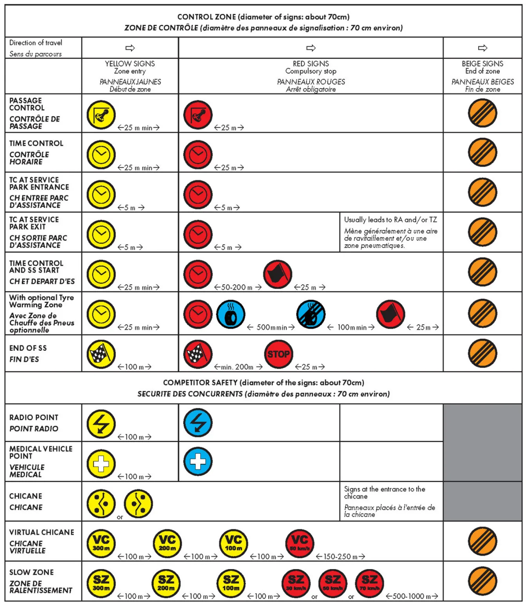
P.117APPENDIX I - CONTROL SIGNS付則Ｉ－コントロールの標識
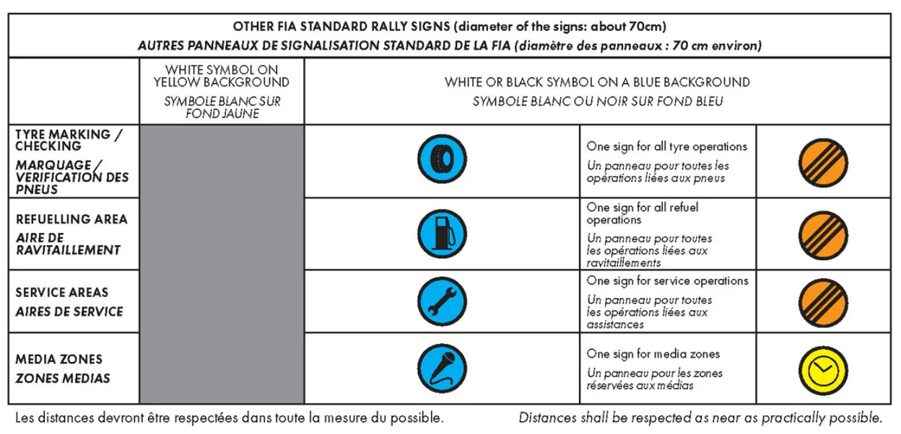
距離数値は、実際可能である限り遵守されること。２．ＦＩＡ標準サインボード
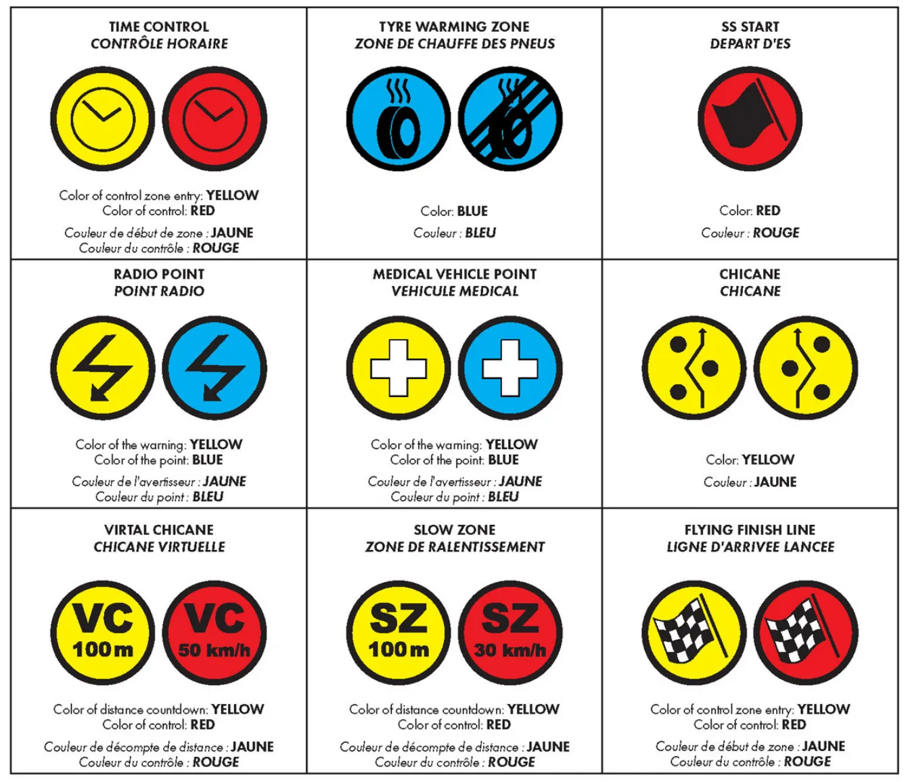
P.118APPENDIX I - CONTROL SIGNS付則Ｉ－コントロールの標識
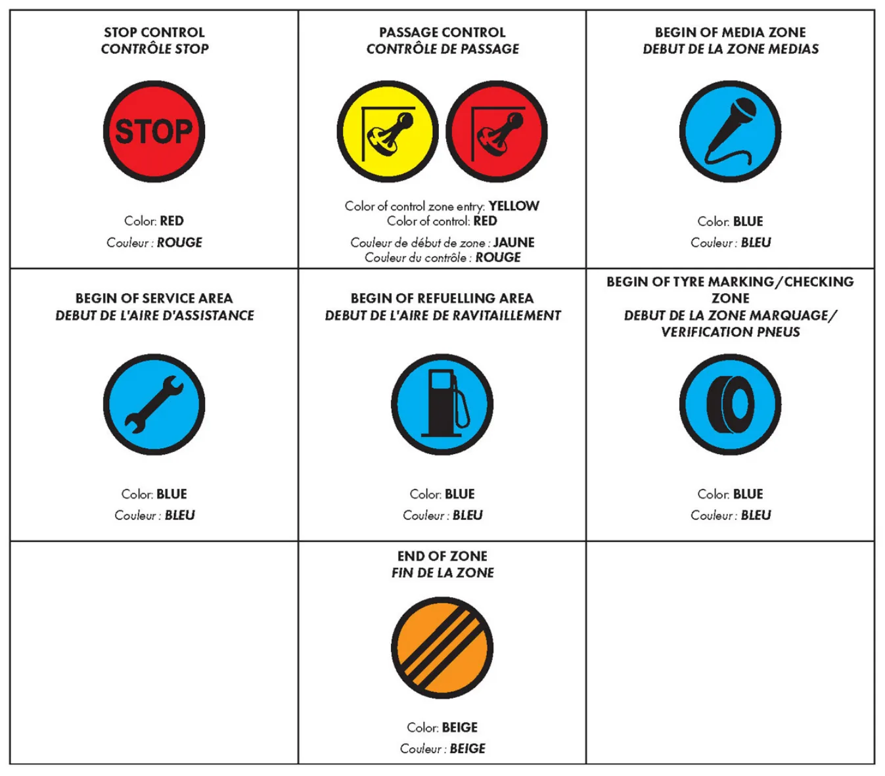
P.119付則 II - 標準書類1. 競技特別規則書各ラリー競技会は、競技特別規則書を作成しなければならない（国際競技規則第20条）。競技特別規則書の電子版は、FIA地域ラリー選手権競技規則に従い、FIAに送達しなければならない。規則草案の受領後4週間以内に、FIAはすべての修正すべき箇所をオーガナイザーに通知し、公開の許可をする査証（ビザ）を発行する。競技特別規則書はFIA地域ラリー競技規則に従い、公式のラリーウエブサイトに掲載されなければならない。オーガナイザーが競技特別規則書の印刷版を作成する予定がない場合、それが書類に記載されること。印刷物版は、ラリーのオフィシャルに配布されることが推奨される。
競技特別規則書の内容索引1.序文1.1規則序文は以下同様とする：「このラリーはFIA国際モータースポーツ競技規則およびその付則、FIA地域ラリー選手権競技規則およびその付則、ASN技術規則（国内車両に関連する場合のみ）、WADA/NADA規定、およびFIAアンチドーピング規則に準拠して実施される。各国の道路交通法が適用される。これらによって別段定めがない場合、競技特別規則書によって定められたルールや規則が適用されるものとする。本競技特別規則書の修正、訂正および／あるいは変更は、（オーガナイザーあるいは競技審査委員会により発行される）番号と日付の入ったブルテンによってのみ発表される。追加の情報は、[発表日]に発行されるラリーガイドに公示され、FIA地域ラリー選手権競技規則はhttps://www.fia.com/regulation/category/117に公開される。」1.2競技走路面1.3 SS総距離およびアイテナリーの総距離2.組織2.1ラリーが対象となっているFIAタイトル2.2査証番号 － FIAおよびASN 2.3オーガナイザーの名称、住所、連絡先詳細（常設事務所）2.4オーガニゼーションコミッティ2.5競技審査委員会2.6 FIAデリゲートおよびオブザーバー2.7上級オフィシャル2.8 HQの場所および連絡詳細（TEL & FAX) 2.9デジタル公式通知掲示板3.時系列表示（日付および時間）のプログラム、必要に応じて場所を明示‐競技特別規則書の発表
P.120‐ディスカウントエントリーフィーの締切日（適用がある場合）‐エントリー締切日‐エントリーリストの公開‐ロードブック、地図およびラリーガイドの発行‐サービスパークでの追加サービスの発注締切日‐シェイクダウン登録の締切日（要求される場合）‐ラリーHQ開始／終了‐器材および書類の引き取り‐書類検査‐レッキ用のトラッキング装置の引き取り‐レッキのスタート‐メディアセンターおよびメディア許可‐ラリー安全トラッキング装置の引き取り‐車検‐コンポーネントの封印およびマーキング‐再車検‐エントリーリスト修正版発行‐チームマネージャーおよび／あるいはドライバーのブリーフィング（適用のある場合）‐ヘリコプターパイロットのブリーフィング（適用のある場合）‐シェイクダウンおよびタイムスケジュール‐フリー走行および予選のタイムスケジュール（適用のある場合）‐スタート順の発表と予選のためのTC到着時間（適用のある場合）‐スタート位置選択のための手順実施日時・場所（適用のある場合）‐ラリー競技前記者会見‐セレモニアルスタート（実施される場合）およびレグ１スタート順リスト発表‐セレモニアルスタート（実施される場合）‐ラリースタートの場所と時間‐レグ１終了の場所と時間‐その後に続くレグのスタート順リスト発表‐次のレグのスタート‐表彰式／賞典授与‐ラリー競技後記者会見‐最終車検‐暫定最終順位認定の発表時刻4.エントリー4.1エントリー締切日4.2エントリー手順4.3受け入れられる競技参加者数およびクラス4.4エントリーフィー／プライベート競技参加者のためのエントリー支援パッケージ4.5支払い明細（適用される税金についての一切の明細を含む）4.6返金5.保険6.広告および識別表示
P.1217.タイヤ7.1ラリーの間に使用指定されるタイヤタイヤの使用について網羅するために、以下の規則条文が推奨される： 2026年地域ラリー選手権競技規則に合致することに加え、使用されるタイヤの量およびタイプが以下の通り確認される。
| 車両のﾀｲﾔ | ﾄﾞﾗｲﾊﾞｰ のプライオ リティ | ﾀｲﾔの 最大数 | ｼｪｲｸﾀﾞｳﾝ での追加 | ﾗﾘｰでの 総量 |
7.2レッキで使用するタイヤ － 必要であれば7.3国内法規あるいは特別な要件（ある場合）8.燃料（適用される場合）8.1発注手順8.2燃料発注締切日8.3給油9.レッキ9.1登録手順9.2特定のおよび／あるいは国内制約事項‐スペシャルステージの速度制限9.3速度規制検査装置の引き取り場所10.書類検査10.1 提出すべき書類‐競技参加者ライセンス‐ドライバーおよびコ・ドライバー 競技ライセンス‐ドライバーおよびコ・ドライバー 有効運転免許証‐ドライバーおよびコ・ドライバー パスポートあるいは身分証明書‐すべての外国の競技参加者および／あるいはドライバーはASN発行の許可証‐全詳細を完成させたエントリーフォーム‐車両保険証‐車両保険登録書類10.2 タイムテーブル11.車検、封印およびマーキング11.1 車検開催場所およびタイムテーブル11.2 マッドフラップ（付則J項第252条7項7）11.3 ウインドウ／ネット（付則J項第253条11項）11.4 ドライバーの安全装備11.5 騒音レベル11.6 特別な国の要件11.7 安全トラッキング装置の搭載12.その他の手順12.1 セレモニアルスタート手順と順番12.2 電子スタート手順12.3 フィニッシュ手順（規則と異なる場合のみ）
P.12212.4 認められる早いチェックイン12.5 スーパースペシャルステージ手順および走行順序（適用のある場合）12.6 一切の特別な手順／活動（例：シェイクダウン、TWZ、プロモーション活動等）12.7 ラリー中使用される公式タイム13.オフィシャルの識別14.賞典15.最終チェック15.1 最終チェック‐チームから出席が求められる者、および場所15.2 抗議預託料金15.3 控訴預託料金付則1アイテナリー付則2レッキスケジュール付則3リレーションオフィサー（CRO)の氏名および写真とそのスケジュール付則4デカールおよび、補足広告の位置付則5オーバーオール、ヘルメットおよびその他一切の安全要件に関するFIA付則L項抜粋付則6、7など オーガナイザーの裁量による項目2. ブルテンブルテンについては、本規則第2条2項に定義されている。ブルテンは以下のいずれかによって発行することができる：
－ FIAの承認を得た上でオーガナイザーにより、書類検査開始前までに。例外的に、査証発行の時点で承認される通り、アイテナリーあるいはレッキプログラムの修正については、オーガナイザーによって発行できるが、それでもそのような修正はFIAに通知されなければならない。あるいは－ 競技中では競技審査委員会により。しかしながら、アイテナリー修正詳細を掲載す
るブルテンは、競技長によって発行できる。それでもそのような変更は競技審査委員会に助言されなければならない。ブルテンには、番号と日付がなければならない。（日付と掲載した時間）。ブルテンは黄色の背景で表示され、公式通知掲示板に掲載されなければならない。
ブルテンは、競技参加者に電子的に通知することが義務付けられる。
P.123公示の方法がいかなるタイプのものであれ、競技参加者（あるいはクルー構成員）は、ラリー競技中で実質的に不可能でない限り、ブルテンの受領を署名によって確認しなければならない。
ブルテンはFIAの了承を得た後でのみ、あるいは競技審査委員会が発行した後でのみ（適用のある場合）発行できる。
3. ラリーガイドこのガイドの概念は、メディア、オフィシャルあるいは競技参加者いずれもが、１つの書類で書類事務作業を済ませられるようにしようとするものである。ラリーガイドは、ラリースタートの少なくとも３週間前に電子的書類として発表することができる。ラリーガイドの印刷版作成はオーガナイザーの任意である。
| 内容 | |||||||||||
| 条項 | 見出しと小見出し | SR* | RG | ||||||||
| 1 | 序文 / 歓迎の挨拶 競技会役員幹部、競技会会長などによる挨拶。 「この書類は規定として効力を発するものではなく、情報と してのみ提供される」 | - - | X X | ||||||||
| 2 | 連絡先 a) 常設連絡先 郵送・訪問先住所、TEL＆FAX Eメール、インタネットアドレス 主要オフィシャル b) ラリー競技会本部の連絡先 住所、TEL＆FAX ラリー事務局受付時間 c) メディア連絡先 | X X X X X X X X - | - - - X X X X X X | ||||||||
| 3 | プログラムおよび重要な締め切り期限 a) ラリー競技会週前のスケジュール b) ラリー競技会週中のスケジュール | X X | X X | ||||||||
| 4 | エントリー詳細 競技会が対象となっているタイトル エントリーフィーのリスト FIA非登録チーム用エントリー支援パッケージ | X X X | - - - | ||||||||
| 5 | サービスパークおよび（設置のある場合は）リモートサービ スゾーン サービスパークなどについての情報 サービスパーク内の施設 サービスパークの内容 － 本付則の末尾のリストを参照 | - - - | X X X |
| 6 | 双方向無線 担当者／担当当局の連絡先 | - | X |
| 7 | 燃料／タイヤ 要件／入手に関する情報 | X | |
| 8 | 車両およびスペアパーツの輸入 国内法規／通関／代理店 | - | X |
| 9 | ヘリコプター 登録手続き／レンタル会社情報 | - | X |
| 10 | ホスピタリティ手配 ホスピタリティ手配担当者/会社の連絡先 | - | X |
| 11 | ホテル／宿泊先予約 ホテルリスト 予約の連絡先 | - - | X X |
| 12 | レッキ GPSトラッキング（スタート番号、引き取り） | X | X |
| 13 | 車検、封印およびマーキング 日程、場所および時間枠（ブルテン掲載の個々の時間） 車両を車検に持っていく前に必要な準備 安全トラッキング装置の引き取り/返却 最終車検 | X - X X | X X X X |
| 14 | シェイクダウン/フリー走行および予選（適用のある場合） 一般的情報と時間 （場所、ステージの長さ、サービスパークまでの距離など） | X | X |
| 15 | スタート手順 プログラムおよび指示事項 | X | X |
| 16 | フィニッシュ手順 プログラムおよび指示事項 | X | X |
| 17 | PR活動 ラリーショーなど | - | X |
| 18 | メディア ラリー競技会前の連絡 登録認証手順/基準および期限 登録認証デスク － 場所および開室時間 メディアルーム － 場所および開室時間 記者会見 － 時刻と場所 チームのメディア連絡 予想されるメディア放映 （TVおよびラジオ、時間、チャンネルおよび周波数） | - - - - X - - | X X X X X X X X |
| 19 | 医務および安全サービス 緊急電話番号 以下の電話番号： － その地域の病院 － 警察 － 牽引会社 － 薬局 | - - - - - - | X X X X X X |
| 20 | 有用なサービスリスト 天気 タイムゾーン 警備会社 | - - - | X X X |
| 付則 | SR | RG | ||
| 注：付則のフォーマットはオーガナイザーの裁量に任される。 | ||||
| 見出し | ||||
| アイテナリー すべてのレグ 前年のアイテナリーとの比較 レッキスケジュール | X - X | X X X | ||
| 地図（A4版） 全体図（各レグについて） スペシャルステージ地図およびレッキ地図 シェイクダウン地図（実施される場合） フリー走行および予選（実施される場合） 関連の市/町（競技会本部、サービスパーク、病院などを示す） | - - - - - | X 〇 X X X | ||
| ロードブック、または地域地図、市街地図、旅程を説明する図解 空港から競技会本部まで（あるいはロードコネクション） 競技会本部とサービスパークの間 サービスパークからシェイクダウンまで シェイクダウンからサービスパークまで 競技会本部と車検の間 サービスパークと車検の間 サービスパークとリモート／追加給油エリアの間（実施される場合） サービスパークとリモートサービスエリアの間（実際される場合） サービスパークとタイヤ取り付けエリア間（実際される場合） 競技会本部（HQ）とメディアセンターの間（適用のある場合） | - - - - - - - - - | X X X X X X X X X | ||
| 図面およびレイアウト 車検および騒音検査エリア 安全ボックス導入 リモートサービスエリア（適用のある場合） ラリー競技会本部 スタートエリア フィニッシュエリア サービスパーク図面 | - - - - - - - | X X X X X X X |
－ホテル／宿泊予約－サービスパーク施設－メディア登録認証－レッキ登録－追加の資材発注－双方向無線書式（適用のある場合）－通関書式（適用のある場合）サービスパーク図面のチェックリスト：
－ タイムコントロールIN／タイムコントロールOUT（番号付）－ パルクフェルメ－ テクニカルゾーン－ タイヤマーキングゾーン
P.126－ 給油エリア（リモートでない場合）－ 環境上の要件－ サービス車両のサービスパークIN／OUT － 緊急医療役務、消防医療センターなどの位置－ 予備駐車場－ プレスおよびVIP駐車場－ 観客用駐車場 － ラリーオフィス／インフォメーションセンター
－ 公衆トイレ－ 給水－ ゴミ捨て場－ ヘリコプターパッド4. アイテナリーのレイアウト例4.1 フリー走行（FP）／予選ステージ（QS）／シェイクダウン（適用のある場合）QS前のフリー走行スケジュールは、理想的には2時間の枠に組み込まれなければならず、ラリーの競技会プログラムに掲載されなければならない。
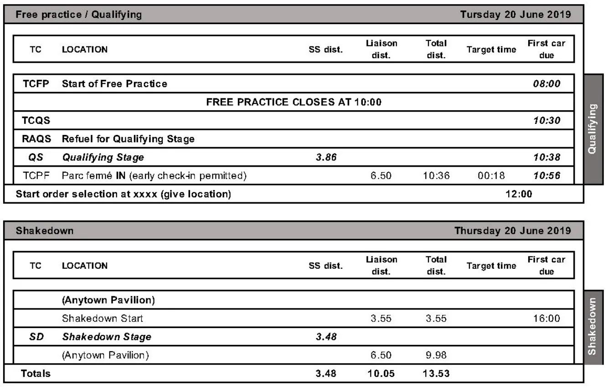
P.1274.2 － ラリースタートのSSS
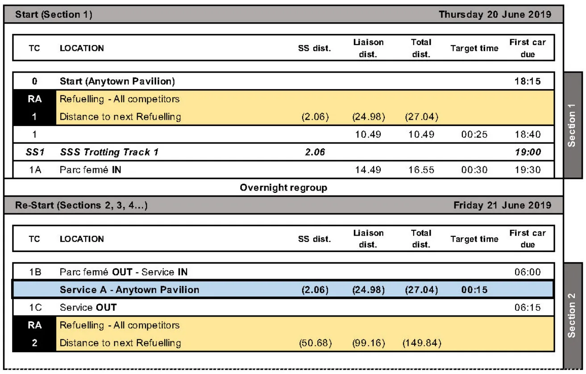
注： － サービスパークおよびリモートサービスエリア到着を示すボックスは、濃い黒枠とし、色つき印刷される場合は、明るい青で中を網掛けする。－ リグループあるいはその他のTC活動を示すボックスは、薄黒い枠とし、中は網掛けしない。－ 給油地点を示すボックスは、薄黒い枠とし、黄色で中を網掛けする。－ 夜間リグループ前のセクション距離およびラリー終了の総距離数を示すボックスは、薄黒い枠とし、明るいグレーで中を網掛けする。－ サービスパーク到着はすべて、A、B、C、などの文字を掲載する。－ TC0は、常にラリーの競技要素のスタートを示す。独立したセレモニアルスタートは、TC0とはみなされない。－ 右側の余白にセクション番号を書き留める。4.3 － 日中の典型的なサービス
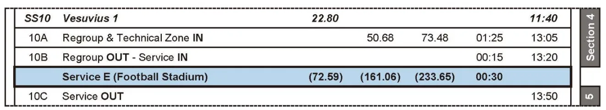
注：例として、技術チェックが再グループにて実施されている（第2条17項）。再グループの実施がない場合、サービスパーク入口の前に10分間のテクニカルゾーンを設けること。
P.1284.4 － リモートサービス＆給油
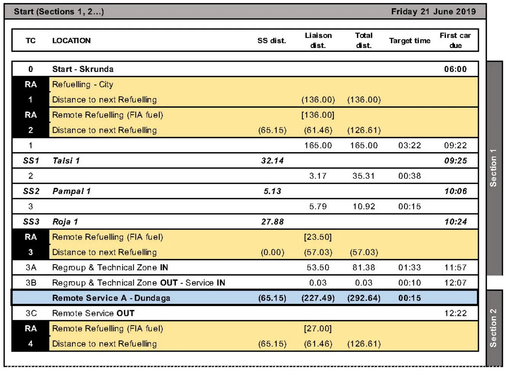
注： － "RA2" は、FIA燃料ユーザー専用のエリアを意味する。－ 1日あたりの給油エリアの数については、第61条1項2を参照。－ リモートサービス中の手順および設営については、第60条参照。4.5 － 夜間リグループ前の典型的なフレキシサービス
注： － すべての車両がパルクフェルメへもどらなければならない、フレキシサービス時間枠を計算する方法は：サービスインに最終競技参加者が到着する予定時刻+30分間の最大遅延時間+45分間のサービスタイム+15分間の「セーフティネット」。
P.1294.6 －典型的なラリー終了
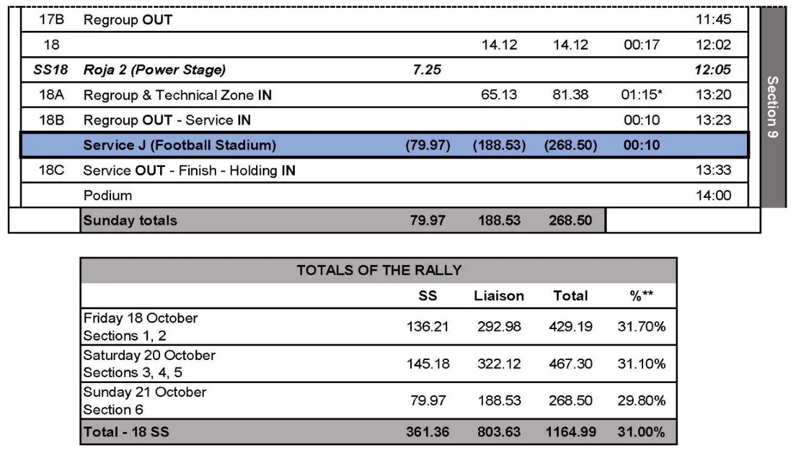
*ステージ終了時のTVプレゼンテーション用に公道セクションで延長タイムを許す。**％＝スペシャルステージの総距離のパーセンテージ。
上記のような表がアイテナリーの最終ページに含まれること。5. ロードブック5.1一般要件－ ロードブックは、FIAラリー選手権競技規則に従って配布されなければならない。－ 全体のラリーについて１冊あるいは各レグに異なるロードブックでも構わない。異なるロードブックが使用される場合は、識別が明瞭な方法でできるようであること。－ ロードブックはA5版（NACAM：法定文書サイズ）とし、左側を金属あるいはその他の適切な強度のあるもので綴じ、360°の見開きができること。－ 印刷は両面で、紙の厚さは90gsm以上とする。－ 印刷は白紙になされること。スペシャルステージおよび公道セクションの区別をするための色についての要件はなく、”Direction"（方向）の欄の網掛けによって識別できるようになっている（例を参照）。－ 見出しは英語とその国の言語（任意）とする。－ 各セクションで認められるタイムは、時間と分で表される。－ １ページの指示事項は６つ以下であること（１ページに６つ入る場合は、ヘッダーを例にあるように小さめにしなければならない）。－ すべてのロードブックページには、ロードブックが完全であることをチェッ
P.130クできるよう、番号が付けられていなければならない。5.2最初のページ－ ロードブックには事故の場合の手順を示すページおよび以下が含まれること：・病院のリスト／メディカルセンター・ラリー競技会本部および緊急出動サービスの電話番号－ すべての使用されるシンボルマークを解説するページが、ロードブックの最初に掲載されなければならない。－ トリップメーターの補正についての指示が含まれなければならない。－ ラリー全体について、「ポートレート」フォーマットのアイテナリーおよび地図（縮尺と北方向が示される）が、各ロードブックに掲載されなければならない。特定のレグのアイテナリーを示すページは、それに対応するレグ地図の反対側に掲載されることが推奨される。5.3指示ページ全く同じラリールートが使用される場合（すなわち、２回の同一のセクションＩ）、オーガナイザーはルート指示解説１セットを印刷することで経済的に共通利用させるよう奨励される。この場合、各ページの見出しは、異なるTC、ステージおよびセクション番号を含むものでなければならない。２つの通過路がわずかでも異なれば、共通の指示解説セットは作成しない。－ 各ロードブックは少なくとも１つのサービスパーク図面を含むこと。各到着についてサービスパークレイアウト図面を繰り返し掲載する必要はない。しかしながら、平面図はTC位置の変更があるところでは重要になる。－ リモートサービス、タイヤ取り付けゾーン、およびリモート給油ポイントのレイアウト図面が含まれること（実施のある場合）－ シェイクダウン、および／あるいはフリー走行／予選（実施される場合）、「スタートへ戻る」ループ（ある場合）、およびサービスパークからの／への公道セクションのルート指示を含める。－ 各公道セクションあるいはスペシャルステージのスタートに、ページを改めることが求められる。スペシャルステージの後のストップポイントから新しいページとする必要はなく、これは同じ公道セクションの続きとされる（例を参照）。－ ２つのジャンクションの間の部分的距離が200メートル未満である場合、ボックスの間の水平線は必要ない。－ 個々のステージ地図は以下を含むこと：
・ 縮尺・ 地図の上の方角が北・ レッキのルート（別個のレッキロードブックがない場合のみ）・ 代替ルート・ スタート／フィニッシュ、およびすべての緊急出動車両ポイントの位置－ 各スペシャルステージおよび、リグループのスタートとフィニッシュおよびサービスパークのGPS位置が示されなければならない。これは、度、分および小数にて表記される。すなわち：139°36.379’（WGS84－世界測地系）。－ コントロール位置の写真あるいは図解を含めることができる。
P.131－ スペシャルステージの場所を容易にするため、ステージの番号が、ページの横に付けられる（例を参照）。ページ印刷が両面ある場合、ロードブックを横から見て見えるように、この番号は外側の端に付けられる、すなわちページの反対側の綴じられた端。この番号はスペシャルステージに関するページにのみ付けられること。－ すべての中間緊急車両および救急車配備ポイントは、適切なシンボルマークで表示されていなければならない。－ 関連性のある場合には、道路の番号が含まれること。－ 方向合図の線の太さを異ならせ、進行方向ではなく、小さな（細い）／広い道を示すのに利用する。－ 「Direction（方向）」および「Information（情報）」の欄の間の太い垂直線は、路面がグラベルである場合は黒で塗られ、ターマックあるいは密閉された路面では、空欄（白）のままとする。－ TCとSSの間の距離は、情報のボックスに入れられなければならない（例を参
照）5.4最終ページ－ ロードブックの最後に、異なる色の紙で、代替ルートを１つのセクションとして含めなければならない。－ ロードブックの最後に関するその他の要件：
・ リタイア書式・ 問い合わせ書式5.5変更
ロードブックに変更が生じた場合（ブルテンなどで）、変更された指示ボックスが示されるだけでなく、最後と最初の有効な指示ボックスも番号を伴って印刷されなければならない。変更を受けたページはロードブックに挿入されるように、A5版で発行されること。5.6その他の有用な情報・ ランドアバウトのような、長いジャンクション図面にトリップメーターポイントが推奨される。・ 公道セクション上に、もうひとつのSSからあるいはSSへのジャンクションが明らかにされ、ラリー交通の接近が記載されること。・ 競技参加者のタイム記録ページ・ 次のページ上のジャンクションが間断なく続く場合、各ページの下部に次のジャンクションの忠告を入れる。・ ヘリコプターポイントが記載されること。
P.132ページ記載例：
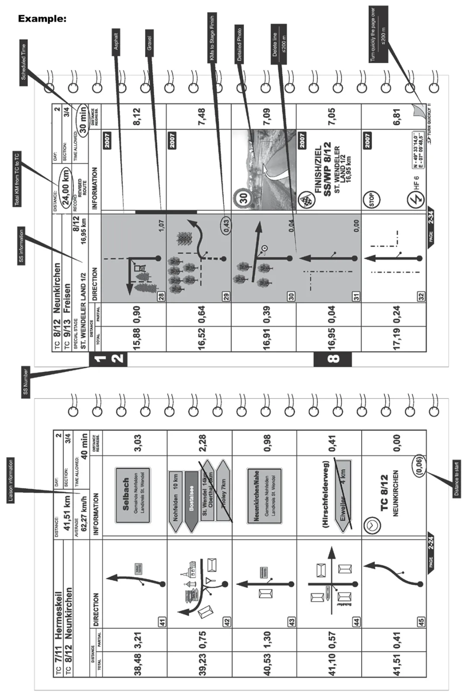
P.1336.標準のFIAタイムカード6.1一般規定－ 予選ステージのためのタイムカードが発行されなければならない（実施される場合）。－ 少なくとも各セクションに別のタイムカードが発行されなければならない。－ 時間と分は常に00.01－24.00のように示され、経過した分のみが計算される。－ タイムカードは、参加確認時にすべて一緒に配布され、各セクションの終了時点で収集される。使用されたタイムカードは次に、チームが競技結果をチェックする際に利用可能となる。理想的には新しいカードがレグの４５分間サービスに使用されること（フレキシサービスBの例がある通り）－ オーガナイザーはFIAに対し、書面によるシステムの変わりに電子タイムカードの使用を提案することができる。そのようなシステムの使用は、使用される前にFIAの承認を受けなければならない。6.2紙面構成－ 次の例を参照－ 中央の欄は、オフィシャルが記入するところで、右側の欄は、競技参加者が記入する。－ 以前の車両番号は任意である。それは安全検査のために複数のラリー競技会で使用される。このボックスが使用される場合は、「暫定スタートタイム」のボックスの下に置かれる。－ サイズは9.9cm×21cm（A4 版のシートにタイムカードが３枚印刷できるように）あるいは11cm×18.5cm － ボックスのサイズは1cm － カードは少なくとも300gsmカードであるが270μmのポリスターペーパーであること（悪天候に備え）。ポリスターペーパーは防水であるが、簡単に折りたたむことができないことに注意。代替としては、カバー付きタイムカードを作成することである。すなわち、22cm×18.5cmの折りたたみ式カードで、記入部分を保護するカバーが付いているもの。－ TCが多い場合、裏面の印刷をするか、並べたデザイン（内側に折りたたむ）ものを使用できる。－ 印刷の使用色は自由。たとえば、オーガナイザーはスポンサーの色を使用したり、あるいは各セクションで色を変えたり、単純にグレーと黒でもよい。
P.134カード紙面構成例
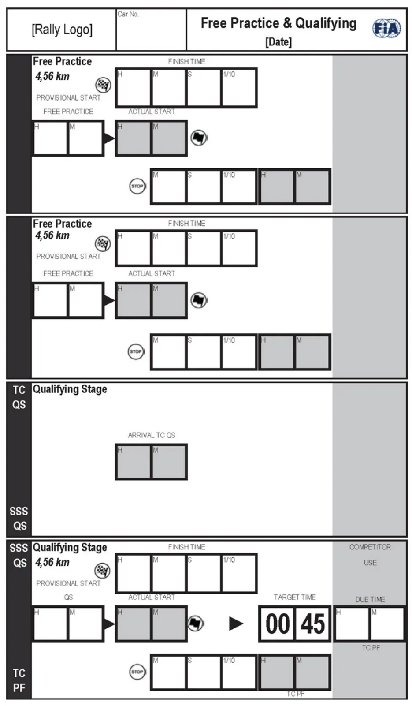
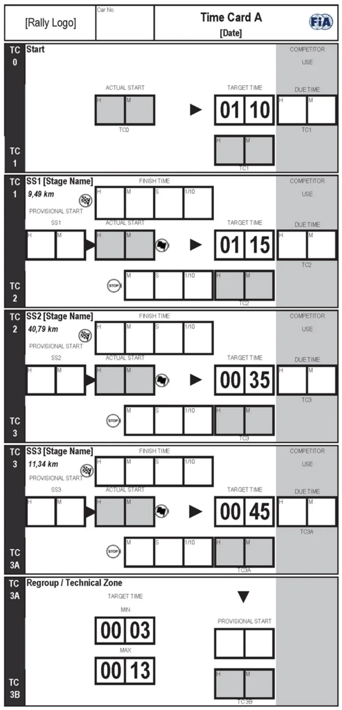
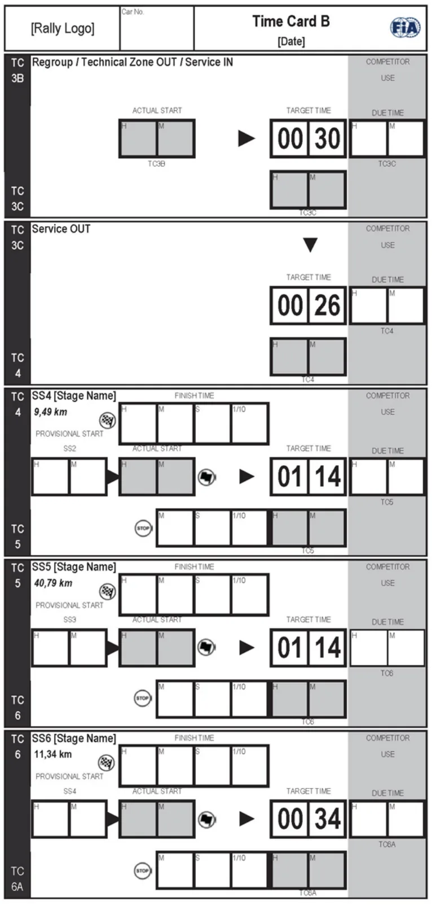
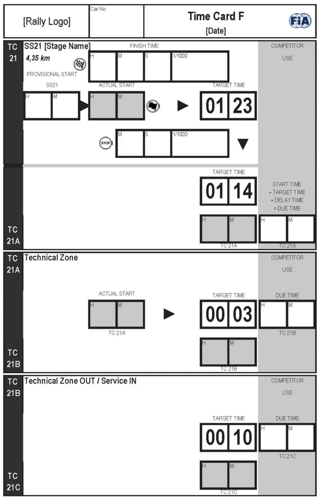
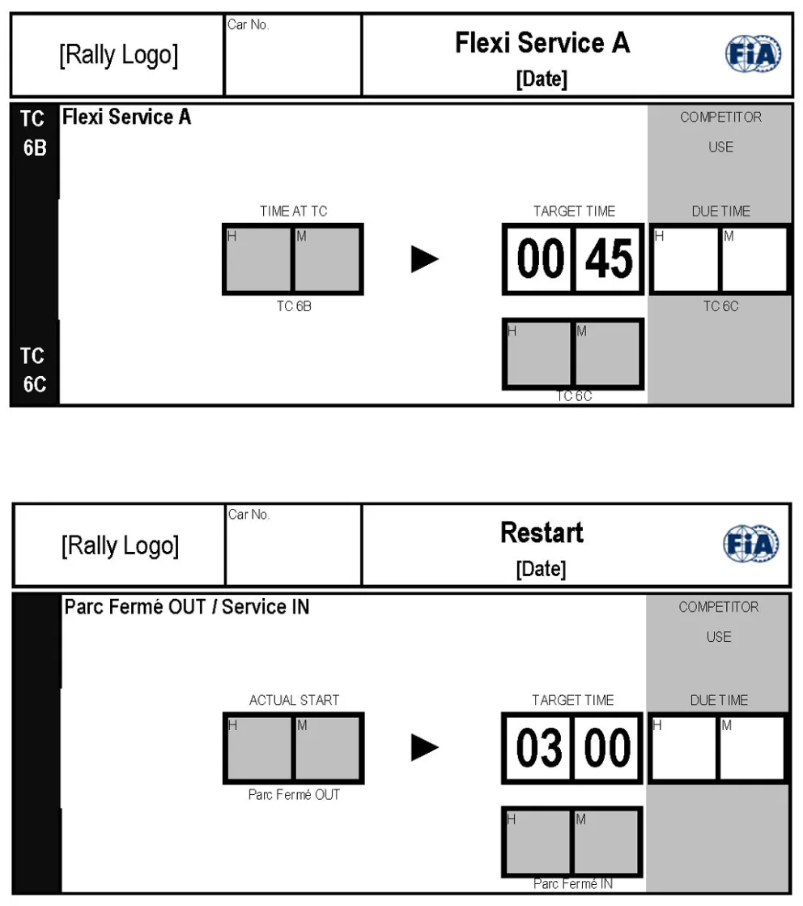
P.1397. 標準エントリーフォーム
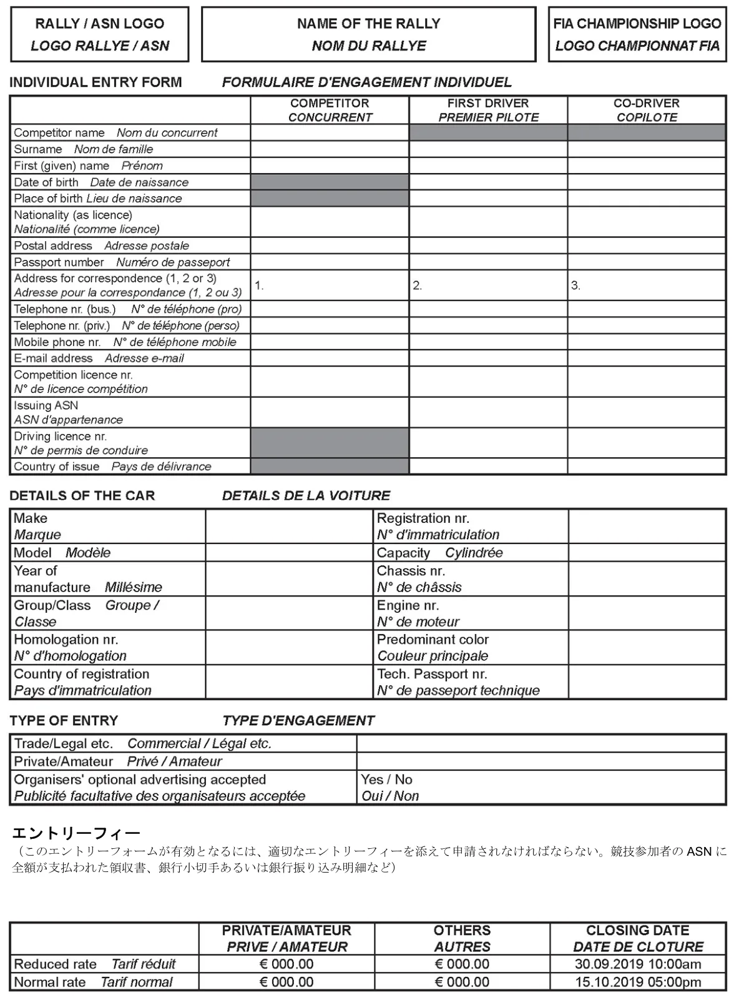
P.140シード情報（競技参加者によって記入される）
免責事項誓約書
（実施されている国内法規および規則により文言は異なる）
承認および合意私は自署により、エントリーフォームに記載したすべての情報は正しいものであり、上記の免責事項および条件を完全に承認、合意し、本ラリー競技会への私の参加に関するすべての事項および条件を受け入れることをここに誓約いたします。（実施されている国内法規および規則により文言は異なる）
*あるいは、エントリーを許可し承認するエントラントのASN からの書簡
P.1418. エントリーリスト8.1.ヨーロッパ選手権のみの、暫定エントリーリスト競技特別規則書にあるエントリー締め切り次第、オーガナイザーは、オーガナイザーのウェブサイトに公表する前に、プライオリティグループによる数字順の暫定エントリーリストをFIAへ検証のため送付する。FIAはそれについて意見があればそれを付けて返信する。FIAによる承認が得られた後、エントリーリストが公表できる。1) 暫定エントリーリストは、「FIAの承認を条件とする」という脚注を付けて競技会のウェブサイトに公表することができる。このリストはプライオリティグループによる数字順で作成される。2) 暫定エントリーリストは、FIAに検証のため送付される。3) FIAはそれについて意見があればそれを付けて返信し、ERCプライオリティドライバーの承認済みリストをオーガナイザーに３日以内に提出する。8.2エントリーリストエントリーリストには以下が含まれる：・ 割り当てられる競技番号・ 競技ライセンスに記載されている競技参加者のフルネーム（国籍はなし）・ ドライバー／コ・ドライバーの氏名とそれらの国籍（ライセンスに従う）・ エントリーする車両の銘柄とモデル・ エントリーする車両の公認番号・ FIAテクニカルパスポート番号（ERCおよびMERCのラリー2およびRGT車両）・ ドライバーのFIA／選手権プライオリティ状況。非プライオリティドライバーの順番は、オーガナイザーに任される。8.3エントリーリスト修正版最初のエントリーリスト発行、参加確認および／または車検後、エントリーリストが修正される場合、"エントリーリスト修正版"は発行日時とともに公開されなければならない。9. スタートリストおよび競技結果スタートリストおよび競技結果は、競技特別規則書あるいはブルテンに記載されている時刻よりも早く掲載できるが、リストに記載されている時刻は、常に競技特別規則書あるいはブルテンに記載されている時刻でなければならない。「時刻の設定された」リストの発表が遅れた場合、競技長は新しい掲載予定時刻を示す連絡を公示する。
9.1フリー走行／予選ステージ（適用のある場合）a) 予選ステージのスタートリスト－ 書類検査と車検の後で作成される。－ 競技審査委員会に承認の後で競技長が署名し、競技特別規則書に決められている時刻に発表される。
P.142－ すべての参加資格のある競技参加者に、TCQS到着スタート時刻（あるいは少
なくとも車両と車両の間隔）を与える。－ 「ただし、車両No.---は再車検に合格することが必要」という表示の脚注。b) 予選ステージの暫定結果
－ 予選ステージを完了したすべての競技者が含まれていなければならない。－ 競技審査委員会の承認後に競技長が署名し、競技特別規則書に決められてい
る時刻に発表される。
c) 予選ステージの最終結果
－ 競技審査委員会に承認、署名され、抗議の締切後に発表されなければならな
い。9.2セレモニアルスタートのスタートリスト－ 書類検査と車検の後で作成される。－ 競技審査委員会に承認の後で競技長が署名し、競技特別規則書に決められている時刻に発表される。－ すべての競技参加者に、スタート時刻（あるいは少なくとも車両と車両の間隔）を与える。あるいはレグ１／セクション１（SSS）のスタートリスト－ 書類検査と車検の後で、または予選後のスタート位置選択の後で作成される（適用のある場合）。－ 競技審査委員会に承認の後で競技長が署名し、競技特別規則書に決められている時刻に発表される。－ すべての競技参加者に、スタート時刻を与える１組になった時刻であってよい。－ 「ただし、車両No.---は再車検に合格することが必要」という注釈。および／あるいはレグ１（SSSなし）のスタートリスト、あるいはレグ１／セクション２のスタートリスト－ 書類検査と車検の後で作成される。－ 競技審査委員会に承認の後で競技長が署名し、競技特別規則書に決められている時刻に発表される。－ すべての競技参加者に、スタート時刻を与える。－ 「ただし、車両No.---は再車検に合格することが必要」という注釈。9.3ラリーの各レグ（最終レグを除く）a) 最終SS（SSSを含まない）の後の非公式順位認定－競技審査委員会による審査目的で作成され、署名されない。b) その後続くレグのスタートリスト競技長が作成する。競技審査委員会は再配置を実施することができる。－ 競技長が署名し、競技特別規則書に決められている時刻に発表される。－ ラリーから撤退したことが宣言されていないリタイアしたクルーが含まれる。
P.143－「ただし、第55条に従い再スタートするすべてのリタイアした車両No.---は
再車検に合格することが必要」という注釈。c) レグ'x'後の一部非公式順位認定
－ 競技長が署名し、実際の掲示時刻付で発行される。－ すべてのペナルティが分かり、すべての期待される車両が夜間パルクフ
ェルメに入った時点で作成される。9.4ラリーの最終レグd) 暫定最終順位認定
－ ラリーを完走したすべての競技参加者が含まれる－ 競技審査委員会に承認の後で競技長が署名し、競技特別規則書に決められている時刻に発表される。・ 「ただし、最終車検の結果に従う」（完全な順位認定のため）・ 「ただし、次の車両については、慣例の燃料分析の結果に従う：No.- --」（ラリー競技会で燃料の分析結果が入手できない場合）・ 「ただし、次の車両については、FIAの実施する追加検査を受けることが必要：No.---」・ 「ただし、次の車両については、競技審査委員会の決定に従う：No.- --」・ 「ただし、次の車両については、完全なエンジン査察の結果に従う：
No.---」
e) パワーステージの暫定順位（適用のある場合）f)最終順位ラリーを出走したすべての競技参加者を含む: － ラリーを完走すべての競技者－ “DNF”と印をされたリタイアしたすべての競技者－ “DNC”と印をされた競技長からクラスを移動されたすべての競技者－ “DIC”と印をされた失格となったすべての競技者－ 抗議受付時刻終了後で最終車検の終了後、競技審査委員会の決定した暫定順位結果発表（注：抗議可能な60分の時間制限を考慮すること）後に、競技審査委員会によって承認され署名され発行されたもの： － 以下の注釈を追加する必要がある（該当する場合）：
・ 「ただし、次の車両については、慣例の燃料分析の結果に従う：No.- --」（ラリー競技会で燃料の分析結果が入手できない場合）・ 「ただし、次の車両についてはFIAの実施する追加検査を受けることが必要：No.---」・ 「ただし、次の車両については車両No.---の競技参加者により提出された控訴結果に従う：No.---」・ 「ただし、次の車両については、完全なエンジン査察の結果に従う：
No.---」g) パワーステージの最終順位（適用のある場合は上位5名のみ）
P.14410. メディア安全ブック
特に映像メディアに向けて安全ガイドを作成する必要がある。この安全ブックの最小推奨内容は、以下に一覧される。メディア安全ブックは、ラリーのスタート前にメディアに配布されること。
この安全ブックを最も準備を整えて作成するために、オーガナイザーは： 1)ラリーの競技ルートが決まり次第、プレスオフィサーと安全オフィサーを伴って、スペシャルステージを査察するために、経験豊富なモータースポーツプロフォトグラファーおよび／あるいはカメラマンを招聘する。2)フォトグラファーおよびTVクルーが使用するための、各ステージにいくつか設置される安全エリア（「フォトエリア」）を確認する。可能であれば、ステージ終了地点に加えて、これらのエリアにできるだけ近く専用のタバードメディア駐車場がなければならない。スペースの制約および／あるいは安全上の問題で、アクセスができない場合、メディア安全ブックで明確に連絡されなければならない。3)これらの「フォトエリア」は、出来上がりを描写する写真を添えて書面に記載されること。また、各位置を示す図解で以下を詳述すること：
・ SS番号および距離・ タバードメディア用SS道路閉鎖時間・ 最初の車両のSSスタート時刻・ ロードブック参照およびGPS参照・ フォトエリアの特別ゾーン・ 観客エリア・ タバードメディア駐車場・ アクセスロード・ SSスタート／フィニッシュからフォトエリアのSS道路上の距離・ 安全テーピング4)すべての提案された図解は、安全オフィサーによって承認されること。5)承認された図解は、メディア安全ブックの1つのセクションを構成する。6)この安全ブックは以下も含む：
・ タバード所持者がどこのエリアへアクセスできるのか、またどのような行動を実行できるのかについての記載。最低でも、このセクションは英語と、開催地の言語で作成されること。・ 例：
－ タバード所持者は、観客テープ／マーカー境界線の直前を歩くあるいは立つこと、ステージの１地点から他地点へおよび／あるいはラリー車両の通過間隔の間にステージを横切ることが、常にマーシャルの安全指示に従って、認められること。さらに、タバードメディアは、同じステージの走行と走行の間に、ラリールートの方向へ、スペシャルステージを出ることが認められる。これは、そのことがメディア安全ブックに確認できる場合にのみ認められ、
P.145またラリー車両の初回通過後に道路開放がステージコマンダーにより告知された後でのみ実行できる。－ タバード所持者のみが利用できる特定のフォトエリアは、相応にテープが張られ、アクセス制限標識で示される。メディアマーシャルは、メディアの必要、義務および権利について特にブリーフィングを受け、フォトエリアにおいて識別される。－ マーシャルおよび警官が立っているエリアは、安全な場所とみなされる：タ
バードメディアはこれらの安全オフィシャルと共に立つことが認められる。・ 予備道路、交差道路、閉鎖地点、撮影エリア、タバードおよびメディア駐車場を伴う、すべてのステージの全体地図。・ すべての許可されているパス、タバード（恒久的なもの、およびラリーごとに指定のもの）およびメディアとタバードメディアカーパスの完全な見本。・ メディア用施設の付表に記載されている、メディア（メディア安全および識別）
の識別および取り扱い。オーガナイザーは、地域的状況およびタバードメディアの参加予想人数により、各フォトエリアに求められる準備レベルが異なることを配慮すること。
FIAメディアデリゲートは、すべてのステージコマンダーおよび、安全およびセキュリティのスタッフといったすべてのタバード保持者に配布されるべきメディア安全ブックの制作を支援するためオーガナイザーが自由に使用することができる。
P.146APPENDIX III – SAFTY付則III – 安全
付則III - 安全
国際モータースポーツ競技規則付則H項の第5条には、道路および救急サービスの監督に関する推奨事項が定められている。これらの推奨事項はラリーオーガナイザーの指針となり、尊重されるべきである。さらに、すべてのイベントオーガナイザーは、FIAラリー安全ガイドラインの最新版に従うことが強く推奨される。各オーガナイザーは、一般市民とクルーの安全性を向上させるために、追加的な要素を導入することが認められている。プライベートテストの開催やASNセーフティデリゲートの役割に関するガイドラインも用意されている。これらの書類の最新版は https://www.fia.com/rally-safety で入手可能である。
P.147付則IV - 表彰式1.要件1.1表彰式は、最終サービスパークに先頭車両が到着して１時間以内に行われること。1.2オーガナイザーは、クルーが正確な順序でランプを通過することを確実にするようフィニッシュ地点の待機場所を設営すること。適切なパスを所有するメディアおよび要員は、このエリアに立ち入りを許可されなければならない。1.3オーガナイザーはセレモニーの手順に責任を負う役員（式典長）の指名をしなければならない。1.4フィニッシュ地点のランプには、アーチの下を通過できる通路があり、ラリー競技の名称およびロゴ、選手権ロゴそしてＦＩＡロゴがはっきりと提示されていなければならない。ランプの前には、撮影者用とＴＶクルー専用のエリアを理想的には突き出している形状で設置すること。ランプへと導く通路またそこからの出口通路には、公衆の接近を防ぐための金属製柵で仕切られなければならない。1.5ランプアーチは、車両のノーズ部が退路側へ下るように正しい位置に置かれたとき、車両のドア開閉やクルーが出る妨げとならないこと。1.6ポディウムの後方あるいは側方は、旗竿が配され、撮影者用台側から見て左から右へとはためくように、ＡＳＮ旗（任意）、主催国の国旗、ＦＩＡ旗（これらの旗は連続的に掲揚する）、総合順位の上位３位のドライバーの国旗が掲揚されること。その他の競技参加者の追加国旗も、オーガナイザーの裁量にて掲揚できる（連続的に掲揚する）。1.7オーガナイザーは、総合順位３位、２位、１位のクルーのみが使用するために、「オリンピック形式」の台座を提供し、撮影専用エリアから撮影者／ＴＶクルーが写真およびビデオを撮ることができるように配置させなければならない。1.8 １名につき１賞典（カップあるいはトロフィー）のみを、各クルーに１つまた優勝競技参加者代表者に１つを授与することが推奨される。オーガナイザーは、賞を渡す者が表彰台側面から近づいて、その後速やかに立ち去ることを確実にする責務がある。1.9賞典授与者は最大で６名が認められる。1.10総合順位で３台の優勝車両のために隣接した駐車場（あるいは最終パルクフェルメ）があり、悪天候の場合にクルーが待機する屋根のある場所があること。1.11表彰式典に関連するチームおよび最終車検に車両を提出するよう求められたチームは、車両をパルクフェルメ、あるいは最終車検場へ移動させるために、代表者１名を出さなければならない。1.12競技参加者にフィニッシュ手順を周知することはオーガナイザーの責務である。
P.1482.手順（式典長の管理下におかれること）
理想的な順序は以下に示す通りであるが、最終サービスの後、式典をできるかぎり早く実施するために、この手順に修正を行うことができる。－ １０位から１位の完走者－ 勝者クルーによるランプ上でのシャンパンファイト－ 要請があった場合に、優勝クルーに合流するチーム－ 総合３位までのクルーおよび優勝競技参加者代表者が、オリンピック形式の台座へ呼び出される－ その３クルーおよび優勝競技参加者代表者へトロフィーの授与－ 国歌＆国旗、３クルーによるシャンパンファイト、記者会見へ移動（行われる場合）－ ジュニアおよびサポート選手権の勝者クルーへトロフィーの授与－ その他の競技参加者2.1オーガナイザーには、プレフィニッシュセレモニー演出（仏語：映像）を手配し、公衆への実況解説システム準備を用意することが推奨される。2.2フィニッシュ地点の待機場所（柵がはられ、管理される。適切なパスを持ったメディアおよび要員のみが認められる）からのスケジュールは次の通り： 2.3総合順位で１０位から４位となったクルーはランプの頂上まで運転し、登りきってドアを開け、車両から降り賞典を受け、台から降りて戻りパルクフェルメまたは最終車検場に運転していく。2.4総合３位となったクルーが運転してランプ上に上がる。車両のノーズ部がランプ出口に下る状態で停止する。クルーは車両のいずれかの側から降り立ち、ドアを開けたままにし、ドライバーがインタビューを受ける。次に、ランプから降りて駐車場あるいはパルクフェルメ（隣接している場合）へ運転して行き、そこでチームの代表者が車両を引き受ける。クルーは徒歩で待機場所へ戻る。2.5総合２位は、上述３位と同様の手順を行う。2.6優勝クルーは車両ランプ上まで運転していき、車両のノーズ部がランプ出口に下る状態で停止する。クルーは車両を降り、ドアを閉めて役員によりインタビューを受ける。クルーは次にボンネットに登り、開栓の準備がされたシャンパンのボトルを２本受け取り、シャンパンファイトを行う。事前に合意があれば、チーム員もそれに合流する。チーム員はランプを退場。車両は式典終了までランプに留まる。2.7すでに配置されていなければ、ポディウム台は地上のランプ／優勝車両前の位置に移動される。2.8 ２位と３位のクルーは次に待機場所より呼ばれ、適切な台座位置の後方に立つ。2.9政治高官および／あるいはスポンサー（最大６名）が賞典授与を促される。2.10 促されたクルーは３位、２位、１位の順にその位置へ登る。３位のクルーより順に、
P.149授与者は賞を持って各クルーの前へ進み出て授与し、クルーごとに繰り返し、最後に優勝者に渡した後、速やかに撮影者およびTVクルーの視界より出て戻る。2.11各クルーが賞典を受領した後、優勝競技参加者代表者がクルーの方へ進み出るよう求められ、優勝クルーの前に立ちトロフィーを授与され、片側に移動する。2.12 優勝ドライバーの国歌（競技者ライセンスに従う）が奏される。優勝ドライバーの国歌が奏されている間に、上位３位のドライバーの国旗が標準のオリンピック典礼通りに掲揚される。国歌が奏されている間、クルーは帽子を被っていてはならない。またはサングラスは外さなければならない。国歌吹奏後、開栓の準備のされた６本のシャンパンファイトを追加して行うことができる。2.13 クルーは、最終記者会見のためにプレスルームへ移動する（実施される場合）。2.14 優勝車両はチーム代表者が運転し、パルクフェルメあるいは最終車検場に移動する。2.15 その他表彰車両は技術者によって最終車検場またはパルクフェルメへ移動される。オーガナイザーにより護衛が出される。2.16 その他のクルーは全員、予定時刻／順序でランプを通過し、その際オーガナイザーの裁量でクルーが紹介される。2.17 表彰式典の長さは、付則IX第33条4に定める最終車検に必要とされる時間を損なわないこと。
P.150付則V -タイヤの公認次のラリーに以下が適用される： －ＦＩＡ世界ラリー選手権－ＦＩＡ地域ラリー選手権－ＦＩＡ国際シリーズ（ラリー）公認されたターマックタイヤ一覧－公認されたタイヤ一覧はＦＩＡウェブサイト「Regulations」から入手可能。ラリースタートの少なくとも2週間前に、タイヤサプライヤーはFIA公認を得るために、そのラリー競技会で使用される予定のトレッドパターン（含複数）の図面（含複数）をFIAに提出する。A.ターマックタイヤ規定1.世界ラリー選手権参加の4WD車両－ 世界ラリー選手権参加の4WD車両のタイヤは、FIA世界ラリー選手権規則第13条2項に合致しなければならない（WRC車両についてはリストNo.1その他すべての4WD車両についてはリストNo.2）2.その他の車両： 公認（トレッドパターンおよびサイズ）： 2.1 すべてのタイヤは、モータースポーツ競技で使用するために、すべての適用される法的要件を満たしていなければならない。2.2 トレッドパターンはモールド（成形）でなければならない。2.3 コントロールエリア：
| リム/タイヤ組立幅 | 長さ×幅 | 表面 | 17%率 | 21.5％率 | 27.5％率 | ||||||||||
| mm×mm | mm2 | mm2 | mm2 | mm2 | |||||||||||
| 8.5 - 9 インチ | 170×140 | 23800 | 4046 | 4998 | 6545 | ||||||||||
| 8 - 8.5 インチ | 161×140 | 22540 | 3832 | 4733 | 6199 | ||||||||||
| 7.5 - 8 インチ | 148×140 | 20720 | 3522 | 4351 | 5698 | ||||||||||
| 7 - 7.5 インチ | 142×140 | 19880 | 3380 | 4175 | 5467 | ||||||||||
| 6.5 - 7 インチ | 133×140 | 18620 | 3165 | 3910 | 5121 | ||||||||||
| 6.5 インチ未満 | 124×140 | 17360 | 2951 | 3646 | 4774 |
2.4 コントロールエリアでは、セクション内で（図解）のブロック間を最大60°の角度で、グルーブによって深さ最小5.5mm幅2mm削られる表面は、全表面積の少なくとも17%を占めていなければならない。
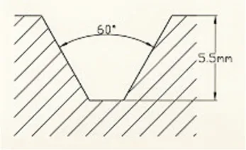
2.5 コントロールエリアでは、セクション内で（図解）のブロック間を最大60°の
P.151角度で、グルーブによって深さ最小1.8mm削られる表面は、全表面積の少なくとも21.5%を占めていなくてはならない。2.6 コントロールエリアでは、半径の線を通るグルーブの幅の合計は少なくとも16mmでなくてはならない。2.7 ブリッジブロックと表面の溝は、幅が2mm未満である場合はトレッドパターンの一部と見なされる。2.8 少なくとも２本の円周線/円周線の最小合計幅＝12mm 2.9 ラリー競技会期間中は常に、車両に取り付けられたタイヤのトレッドの深さは、トレッドパターンの少なくとも4分の3に渡り1.6mmを下回ってはならない。製造者はこの磨耗が目に見えるように、見える制御マークを提供しなければならない。2.10 各タイヤは、FIAバーコードサプライヤーにより供給された、特定の恒久的成形バーコード番号を有していなければならない。
B.ウエットターマックタイヤ規定（18インチリムのみ）
－ コントロールエリアでは、セクション内で（図解）のブロック間を最大60°の角度で、グルーブによって深さ最小5.5mm幅2mm削られる表面は、全表面積の少なくとも27.5%を占めていなければならない。－ コントロールエリアでは、半径の線を通るグルーブの幅の合計は少なくとも16mmでなくてはならない。－ コントロールエリアでは、円周線を通るグルーブの幅の合計は少なくとも4mmでなくてはならない。－ 少なくとも2本の円周線/円周線の最小合計幅＝12mm － ラリー競技会期間中は常に、車両に取り付けられたタイヤのトレッドの深さは、トレッドパターンの少なくとも4分の3に渡り1.6mmを下回ってはならない。－ 各タイヤは、FIAバーコードサプライヤーにより供給された、特定の恒久的成
形バーコード番号を有していなければならない。C.スノータイヤ規定
－ スノータイヤは、タイヤ公認の必要はない（WRCリストNo.1およびNo.2を除
く）溝付け率は25％を超えなければならない（第2条3項段落Ａ参照）。
7インチ×15インチリム7インチ×15インチリムに取り付けられるアイスタイヤのスタッド寸法は以下の通り：
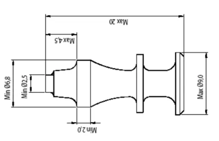
P.152競技会中にスタッドタイヤを使用することができる。 それらは次の規定に従っていなければならない： － スタッドは、中実、円筒形、フラットカットとする－ スタッドの断面は、あらゆる点で完全な円でなければならない－ スタッドはあらゆる点で管状にすることはできない－ スタッドの本体は均質でなければならず、いかなる場合でも管や穴を形成することはできない。－ フランジの最大直径は9ミリメートルとする－ スタッドの中央にある金属コアの最小直径は2.5ミリメートルとする。それは、円筒形で、均質でフラットカットでなければならない－ スタッドの長さは20ミリメートルに制限される－ スタッドの重量は4グラムに制限される－ スタッドは外側からタイヤに取り付けなければならない－ スタッドの数は、ホイールの円周の任意のデシメートルあたり20を超えてはならない測定は、タイヤの非加圧部分にパターンを付けて行う。パターンの長さは30cmであり、パターン内には60本を超えるスタッドがあってはならない。スタッドの数が30cmのセクションで60を超える場合、次の30cmのセクションでさらにチェックが行われ、両方のセクションのスタッドの総数は最大120でなければならない。8インチ×18インチのリム8インチ×18インチのリムに取り付けられたスノータイヤのスタッド寸法は、次の点に従わなければならない： － トレッドの外側を通って導入された円筒形のシングルポイントスタッドのみが認められる。それらは決してトレッドを通らないこと。それらは、次の事項を厳しく守らなければならない： － 最大ベース直径：6.5mm、公差を含む。 重量：2グラム； － 新品のタイヤの表面を越えるスタッド突出部：最大2mm； － ポイントを含む総スタッド高さ：15mm。公差最大0.5mm； － カバーされる表面密度； － スタッドの数は、47mmの中心バンドを除いてホイールの円周の任意のデシメ
ートルあたり10を超えてはならず、その中心バンドは自由にしなければならない。－ 手動または機械的に取り外し可能なスタッドは禁止される。D.グラベルタイヤ規定
－ グラベルタイヤはタイヤ公認の必要はない（WRCリストNo.1およびNo.2を除
く）。溝付け率は25％を超えなければならない（第2条3項段落Ａ参照）。
P.153付則 IX - 組織上の要件に関する詳述
以下の規定はオーガナイザーのためだけのものであり、競技参加者に対する規定としての付則ではない。しかしながら、オーガナイザーはこの付則IXのすべての条項を遵守しなければならない。条項の番号は、FIA地域ラリー競技規則との関連を示している。選手権およびポイント3.選手権要件3.3ラリーの参加資格候補ラリーが選手権の対象として資格を得るには、当該選手権に対象となる年の前年に開催されており、FIAにより任命されたデリゲート作成の報告書が満足のいくものであった場合のみである。3.4選手権ラリーの取り消し選手権の対象となったラリーが取り消された場合、FIAがその取り消し事由を不可抗力であると認めない限り、翌年のその選手権の対象とならない。3.5報告書3.5.1各ラリーにて、FIAはFIAオフィシャルと共同して報告書を作成し、関連のあるFIA委員会がそれを再検討する。3.5.2オブザーバーの報告により、規定遵守がなされていない、あるいは十分な基準が満たされていない点があったとする何れかにより合格基準を満たさないと判断された一切の選手権ラリーは、翌年の選手権には受け入れられない。3.6候補ラリー競技会FIA選手権の候補となるラリーの場合、FIAが別途決定しない限り、関係する選手権の規則は、合理的に可能である限り遵守されること。3.7世界ラリー選手権併催の地域選手権ラリー競技会FIA地域選手権ラリー競技会のオーガナイザーは、世界ラリー選手権のラリー競技会構成の中に地域選手権の１戦を組み込む計画をする場合は、FIAに通知しなければならない。3.8最小参加FIA選手権のポイントを獲得する資格を持つクルーが5組未満しか競技に参加しなかった場合、ラリーコミッションは、この競技会を翌年のFIA選手権と認めない場合がある。
P.15410.ラリーの特性10.3アイテナリー選択に関する手順10.3.3 一般規定ラリー競技に使用されるスペシャルステージの適性は、当該ラリー競技会のオーガナイザーのみが責任を負い、オーガナイザーがFIA規定および／あるいは勧告に従っていない道路は使用しない。ステージの選択においては安全面がもっとも重要である。ラリー競技ルートの選択においては、観客の往来密集度が高い道路を避けること。10.3.4 ERCについての手順アイテナリーおよび地図を電子的に送信するバージョンについては、FIAにラリー開始の少なくとも16週間前に提出すること。一切の意見あるいは大きな変更の締め切りはFIAへの提出後2週間とする。
10.3.5 査察（NACAMのみ）選手権組織委員会は、各ラリー競技会の開催前3週～5週の間に、査察および監督訪問を実施する（ルート、安全計画、当局からの許可、ロードブック、ロードマップ、医務計画などについて）。オフィシャル11.3 FIAデリゲートのスペシャルステージ進入デリゲートが業務を遂行する場合、コースクロージングカー（ゼロカー）のスタート時刻の遅くとも30分までに、FIAオフィシャルおよびデリゲートがスペシャルステージへの進入を実施するが、FIAセーフティデリゲートは、スペシャルステージへそれより遅く進入することができる。ゼロカーがスペシャルステージのルート上にいる間にそれら車両に追いついた場合、デリゲートの車両は停止し、駐車し、続行する前に追い上げ車両（スイーパーカー）が通過するのを待たなければならない。標準書類およびFIA査証（VISA）
19. FIA標準書類19.2ロードブック／アイテナリーロードブック、すべてのスペシャルステージのレッキビデオ、およびすべてのアイテナリーのKML/KMZファイルは、エントリーリストが発行された時点には競技者が個別にダウンロードできる状態にしていなければならない。19.4選手権ロゴ19.4.1 ラリー競技会のタイトルとロゴおよびFIAが当該選手権に冠した公式ロ
P.155ゴは、一切の公式書類の最上部に提示されなければならない。ラリー競技会のロゴは左側に、FIA選手権ロゴは右側に付するものとする。19.4.2選手権／カップのスポンサー（含複数）の場合があれば、それも含められなければならない。19.5競技特別規則書
19.5.1競技特別規則書の草案の電子版は、ラリー開始の12週間前にFIAに届けられなければならない。19.5.2競技特別規則書草案の受領後4週間以内に、FIAは草案に行われるべき修正についてオーガナイザーに通知し、規則発表を許可する査証を発行する。19.5.3競技特別規則書は、ラリー開始の8週間前にラリーの公式ウェブサイトに掲載されなければならない。19.5.4 FIA ビザ番号によって証明された競技特別規則書の最終版は、rally@fia.comに発表され次第PDF形式でFIAに送付されなければならない。19.5.5イベント開始の8週間前までにFIAに送付された競技特別規則書の草案は、FIAの当該年の料金リストに従って罰金が適用される場合がある。19.6セーフティドシエ19.6.1ラリーの開始の少なくとも12週間前に、電子メール送信によるセーフティドシエ草案をFIA安全部門（rally.safety@fia.com）に提出しなければならない。この草案は、国際モータースポーツ競技規則付則H項に従い、少なくとも以下を含めなければならない： － 完全なラリーアイテナリー－ スペシャルステージの一般公衆が許可されているエリアおよび禁止されているエリアの正確な詳細－ ラリールートに含まれる、すべてのシケインおよび人工的ジャンプの正確な詳細および位置－ 各ステージに沿ったマーシャルすべての位置－ 競技参加者の安全のための危険保護すべての位置－ ラリー前のメディカルブリーフィング、セーフティチームブリーフィング、およびメディアセーフティブリーフィングの候補日時－ ラリー前の救出訓練の候補日時（適用がある場合）－ 夜間スペシャルステージ走行のために作成された特別な安全計画すべて－ セーフティキャラバンのタイムスケジュール－ セーフティキャラバンクルーの詳細FIAは、4週間以内にコメントを提示するよう努める。
19.6.2 ラリーの最終セーフティドシエは、国際モータースポーツ競技規則付則H項に従わなければならず、少なくとも競技会の2週間前までにFIAセーフティ部門
P.156（rally.safety@fia.com）に電子的に送信しなければならない。印刷物は、競技会の審査委員会、FIAメディカルデリゲード、FIAセーフティメディカルデリゲード、および指名された場合はFIAオブザーバーに提供されなければならない。競技参加者の安全に関するこの最終セーフティドシエへのさらなる修正は、指名された場合FIAセーフティデリゲードとの調整のうえ、あるいは勧告に従って、競技審査委員会に報告しなければならない。競技参加者の安全に関する変更がある場合、レッキ中に確認できなかった場合はコミュニケーションを発行しなければならない。いずれにせよ、セーフティドシエとその実施は、オーガナイザーの単独の責任となる。19.7競技結果 － 最終順位認定年間の最低参加競技参加者／ドライバー数をチェックするために、最終順位認定にはラリーで順位認定された競技参加者／ドライバーが入るのみならず、順位認定された競技参加者／ドライバーの下に、ラリー競技でリタイアしたあるいは失格となった競技参加者も併せて発表される（付則II-8参照）。20. FIA査証の発行ビザの発行前に、FIAは以下の書類を評価する： 20.1競技特別規則書付則II参照保険21.保険適用21.2一般損害責任保険の適用21.2.1エントリーフィーに含まれていなければならない保険料は、第三者賠償責任保険（一般損害責任保険）を提供しなければならない。エントリー24.エントリーフィー24.4ヨーロピアンラリートロフィーオーガナイザーは、開催国以外のASNにより発給されたライセンスを所有するドライバーをエントリーする競技参加者に対し、エントリー費用の割引を適用することを勧められる。車検チェック
P.15733.最終チェック33.1最終パルクフェルメ順位認定33.1.3最終順位認定の発表後（抗議申請締切時刻が過ぎて）、最終車検が進行中であっても、競技審査委員会はパルクフェルメを解放できる。33.4最終チェックに利用可能な時間競技会後車検に指定された車両のチェックに利用可能時間は、車検場に当該車両が到着した後少なくとも2時間なければならない。
ドライバーの行為34.行動規範
34.1.2レッキ終了後からラリー開始前までの間にブリーフィングを開催することが義務付けられる。開催日時および出席要件は、特別規則書に明記されなければならない。コントロール42.コントロール － 一般要件（NACAMのみ）42.9計時器材計時の器材は選手権のオーガナイジングコミッティにより提供され、器材の使用法および設置については監督と事前のトレーニングが実施される。器材の有効な操作方法に対応可能な必要人員数を確保するのは、競技会組織の責務である。計時器材の費用に応じた保証内金の支払いがされ、ラリー競技後に、選手権のオーガナイジングコミッティがラリー競技前に提供した通りに器材が返却された後に返金される。42.10コントロールサインコントロールエリアを示し、コントロールを確認するサインは、選手権のオーガナイジングコミッティにより確立される。競技会組織による、サインの正確な設置と使用法が義務付けられる。サービス57.サービスパーク57.6サービスパークのレイアウト
P.15857.6.3オーガナイザーはプロモーション機会を最大に提供し、サービスパークで観客の目を楽しませるよう奨励される。可能である場合には、競技参加者に割り当てられたサービスエリアに後方から入ることができるようにし、公衆がクルーやチームに接近できるようにすることも含む。ラリー競技結果およびラリー競技会後の事務的要件64.ラリー競技結果64.6議事録および閉会報告書ラリー競技会実施中、競技審査委員会の会議の進行内容が記録される。これらの議事録と最終順位認定は、FIA(rally@fia.com) に電子的に送付されなければならない。プロモーションおよび広報69.選手権のプロモーション69.1 プレスカンファレンスプレスカンファレンスはレッキとラリーの開始の間に開催し、少なくともFIAプライオリティドライバーを招聘することが推奨される。表彰式の前または後にプレスカンファレンスを開催することが必須であり、少なくとも以下の者が出席しなければならない: 総合順位で上位3位のクルー FIA選手権で順位認定1位のクルー FIAジュニア選手権で順位認定1位のドライバー69.2ヨーロピアンラリートロフィートロフィーとその競技会の評価を高めるために、オーガナイザーは競技会の前に－ 競技会の公式プログラムの全ページをFIAに提供する－ 遅くともエントリーリストの発行までにFIAのメディア広報で使用するため、少なくとも3枚のプロ品質の写真を権利無償で提供する。イベント終了時、最終順位発表後遅くとも24時間以内に、オーガナイザーはFIAのメディア広報で使用するために、最低5枚のプロ品質の写真を権利無償で提供する。コンテンツはFIA広報部門にメールで送らなければならない。(wecom@fia.com)
P.159付則XIV - ドライバーの宣誓および誓約書
FIA地域ラリー選手権競技会に参加するすべての競技者は、ドライバーとコ・ドライバーがドライバーの宣誓および誓約書に署名しなければならない。 この文書の最新バージョンは、FIAのウェブサイトからダウンロードできる。https://www.fia.com/regulation/category/117（「関連文書」セクション）